| Velocity[m/s] | body mass[kg] | arm span[cm] |
|---|---|---|
| 15.8 | 70.7 | 189.2 |
| 17.2 | 63.7 | 182.0 |
| 18.3 | 76.2 | 192.1 |
| 18.4 | 64.9 | 171.1 |
| 18.4 | 63.0 | 181.1 |
6 Multiple Lineare Regression
In den meisten Fällen in der Praxis liegt selten der einfache Fall vor, dass eine abhängige Variable mittels nur einer einzigen Prädiktorvariablen erklärt bzw. vorhergesagt werden soll. In den meisten Fällen liegt das Interesse darin den Zusammenhang mehrerer Prädiktorvariablen auf die abhängige Varible zu zu modellieren. Ein Beispiel aus der Literatur ist eine Untersuchung von Debanne und Laffaye (2011) über den Zusammenhang zwischen der Wurfgeschwindigkeit in Abhängigkeit vom Körpergewicht und der Armspannweite im Handball. In Tabelle 6.1 ist ein Ausschnitt aus dem Datensatz abgebildet.
Im Prinzip ändert sich an der Art der Daten nichts gegenüber der einfachen Regression. Die Daten beinhalten lediglich nun eine weitere Spalten mit einer weiteren Prädiktorvariablen. Im Prinzip könnte der isolierte Einfluss der beiden Prädiktorvariablen Körpermasse und Armspannweite auf die abhängige Variable Wurfgeschwindigkeit einzeln untersucht werden. Allerdings ist oft von größerem Interesse zu untersuchen, wie sich der gemeinsame Einfluss der beiden Variablen zusammen verhält und ob durch die Kombination der beiden Variablen ein besseres Modell erstellt werden kann. Aus dieser Problemstellung heraus ergibt sich die Notwendigkeit von der einfachen linearen Regression zur multiple lineare Regression überzugehen. Formal geschieht dies einfach dadurch, dass die Formel der einfachen Regression mit dem Prädiktor \(X\) um eine weitere oder eben mehrere Variablen erweitert wird. Dementsprechend wird aus:
\[ y_i = \beta_0 + \beta_1 x_i + \epsilon_i \]
die Formel für die multiple Regression mit:
\[ y_i = \beta_0 + \beta_1 x_{1i} + \beta_2 x_{2i} + \dots + \beta_K x_{Ki} + \epsilon_i \]
Da bei der einfachen Regression nur eine einzige \(X\)-Variable in der Formel vorhanden war, ist kein Index \(j\) notwendig gewesen um die \(X\)-Variablen voneinander zu unterscheiden. Bei der multiplen Regression mit mehreren Prädiktorvariablen \(X\) wird jeder \(X\) Variable ein zusätzlicher Index \(j\) angehängt um die Variablen eindeutig identifizieren zu können. Per Konvention, wobei diese leider nicht global eingehalten wird, wird die Anzahl der Prädiktorvaiablen mit \(K\) bezeichnet (oft auch \(p\)). Der \(y\)-Achsenabschnitt erhält wieder den Index \(j=0\) und die weiteren Steigungskoeffzienten \(\beta_1\) bis \(\beta_K\) erhalten den Prädiktorvariablen \(X_j\) folgend den entsprechenden Index.
In welcher Reihenfolge die Prädiktorvariablen mit \(j=1, j=2, \ldots, j=K\) verteilt werden hat zunächst keine Auswirkung auf das Modell und regelt lediglich die Bezeichnung. In unserem konkreten Fall der Handballwurfdaten wäre zum Beispiel eine mögliche Zuordnung, das \(X_1\) die Körpermasse und \(X_2\) die Armspannweite kodiert.
| \(i\) | Velocity[m/s] | body mass[kg] \(j=1\) | arm span[cm] \(j=2\) |
|---|---|---|---|
| 1 | 15.8 | 70.7 | 189.2 |
| 2 | 17.2 | 63.7 | 182.0 |
| 3 | 18.3 | 76.2 | 192.1 |
| 4 | 18.4 | 64.9 | 171.1 |
| 5 | 18.4 | 63.0 | 181.1 |
Rein formal hat sich nun der Übergang zur multiple Regression bereits vollzogen. Die Frage die sich nun direkt anschließt bezieht sich auf die Bedeutung der Koeffizienten \(\beta_1, \ldots, \beta_k\). Sind diese ebenfalls als Steigungen einer Geraden zu interpretieren? Ebenso, wie lassen sich die anderen Konzepte die bereits im Rahmen der einfachen Regression behandelt wurden haben auf die multiple Regression übertragen? Zunächst aber noch ein Beispiel.
Beispiel 6.1 In Riechman u. a. (2002) wurde ein Modell erstellt um die Leistung beim 2000m Indoor-Rudern von 12 Wettkampfruderinnen anhand eines 30-Sekunden-Ruder-Sprints, der maximalen Sauerstoffaufnahme und der Ermüdung vorherzusagen. Die Autoren bestimmten das folgende Modell: \[\begin{equation*} Zeit_{\text{2000m}} = 567.29-0.163\cdot\text{Power }-14.213\cdot \dot{V}0_{2\text{max}} + 0.738\cdot\text{Fatigue} \end{equation*}\] Mit einem Standardfehler von \(\hat{\sigma} = 0.96\).
6.1 Bedeutung der Koeffizienten bei der multiplen Regression
Um die Bedeutung der Regressionskoeffzienten bei der multiple Regression besser zu verstehen ist es von Vorteil sich noch einmal die Bedeutung der Koeffizienten im einfachen Regressionsmodell zu vergegenwärtigen (siehe Abbildung 6.1).
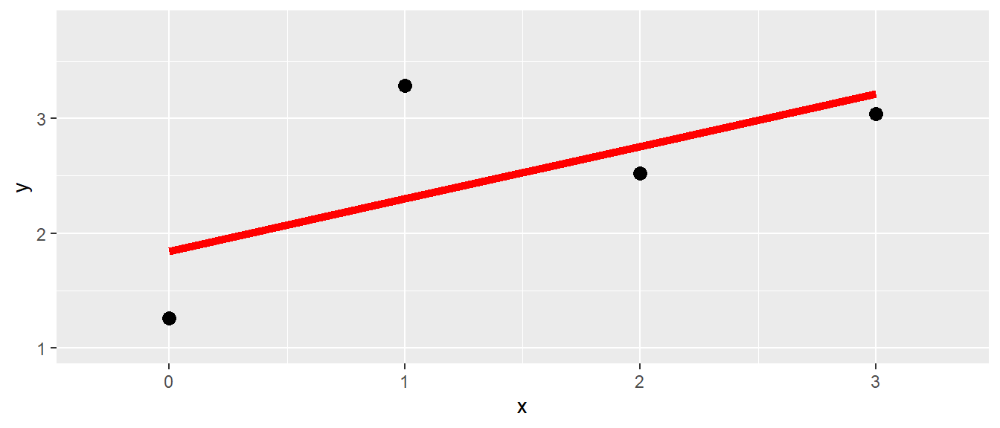
Bei der einfachen Regression wurde mittels der Methode der kleinsten Quadrate eine Regressionsgerade durch die Punktwolke der Daten gelegt. Dabei wurde die Regressionsgerade so gewählt, dass die senkrechten Abstände der beobachteten Punkte von der Regressionsgerade minimiert werden bzw. die Abstände zwischen denen auf der Gerade liegenden, vorhergesagten Werte \(\hat{y}_i\) und den beobachteten Wert \(Y_i\) (Residuen). Wird nun der Übergang von einer Prädiktorvariablen zum nächstkomplizierteren Fall mit zwei Prädiktorvariablen \(X_1\) und \(X_2\) durchgeführt, dann ist eine mögliche Darstellungsform der Daten eine Punktwolke im dreidimensionalen Raum (siehe Abbildung 6.2 (a)).
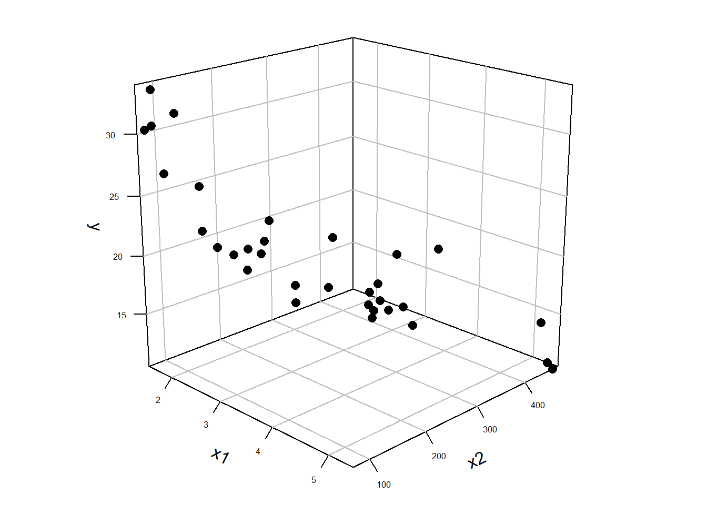
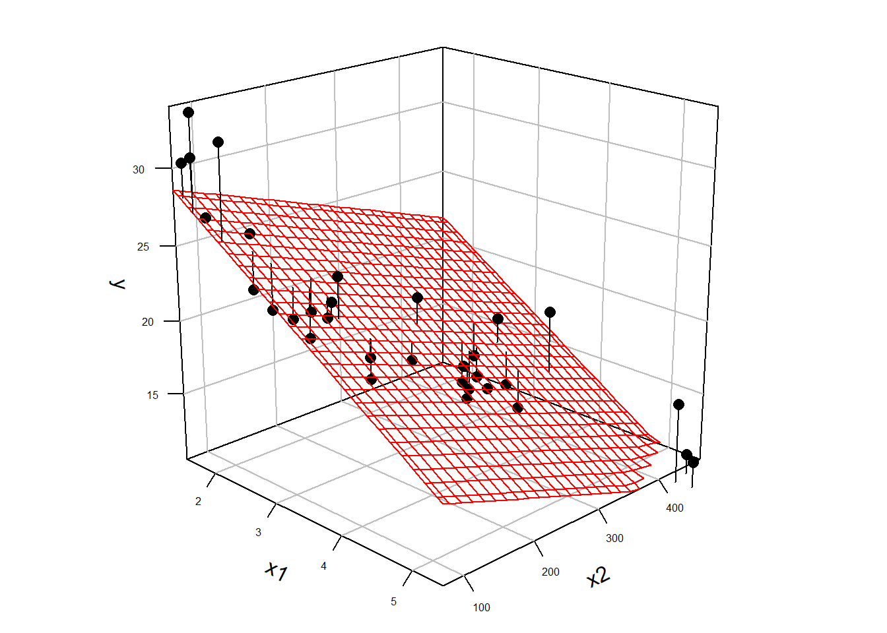
Da jetzt eine einzelne Gerade nicht mehr ausreichend ist um die Daten zu fitten, wird nun eine Ebene durch die Punktwolke gelegt (siehe Abbildung 6.2 (b)). Dieser Ansatz ermöglicht nun die gleiche Herangehensweise wie bei der einfachen linearen Regression anzuwenden. Als Zielgröße wird aus den möglichen Ebenen diejenigen Ebene gesucht, deren vorhergesagte, in der Ebene liegende, Punkte \(\hat{y}_i\) die geringsten, senkrechten Abstand zu den tatsächlich beobachteten Punkten \(y_i\) haben (wieder Residuen). Anders ausgedrückt, es wird diejenigen Ebene durch die Punktwolke gesucht deren Summe der quadrierten Residuen \(e_i = y_i - \hat{y}_i\) minimal ist. Die Definition der Residuen ist dabei genau gleich derjenigen bei der einfachen linearen Regression.
Diese Herangehensweise hat den Vorteil, dass sie zum einem die einfache lineare Regression als Spezialfall mit \(K=1\) beinhaltet und sich beliebig erweitern lässt. Lediglich mit der Einschränkung, dass bei \(K>2\) die dreidimensionale Darstellung mittels einer Grafik nicht mehr möglich ist da nicht ausreichend Dimensionen dargestellt werden können. Das Prinzip der Minimierung der Abweichungen von \(\hat{y}_i\) zu \(y\) von einer Ebene bleibt aber weiter erhalten. D.h. alle Konzepte die im Rahmen der einfachen linearen Regression erarbeitet wurden, lassen sich direkt auf die multiple lineare Regression übertragen.
Zusammenfassend:
- Die Berechnungen beim Übergang von der einfachen zur multiplen Regression bleiben alle gleich
- Die Abweichungen, die Residuen \(\hat{\epsilon_i}\) sind nun nicht mehr Abweichungen von einer Gerade sondern von einer \(K\)-dimensionalen Hyperebene. Die grundlegenden Eigenschaften der Residuen bleiben alle erhalten.
- Die Modellannahmen bleiben alle gleich: Unabhängige \(y_i\) und \(\epsilon_i \sim \mathcal{N}(0,\sigma^2)\) iid
- Inferenz für die Koeffizienten mittels \(t_k = \frac{\hat{\beta}_k}{s_k} \sim t(N-K-1)\) bleiben erhalten und übertragen sich auf die Konfidenzintervalle
- Alle Konzepte für die Vorhersage bleiben erhalten
- Modelldiagnosetools bleiben ebenfalls alle erhalten
Als nächster Schritt soll nun die Interpretation der Modellkoeffizienten im multiplen Regressionsmodell näher betrachtet werden. Dazu wird zunächst ein einfaches synthetisches Beispiel betrachtet, dass dem folgenden DGP zugrunde hat.
\[ \begin{gather} y_i = \beta_0 + \beta_1 \cdot x_{1i} + \beta_2 \cdot x_{2i} + \epsilon_i \\ \beta_0 = 1 ,\beta_1 = 3, \beta_2 = 0.7 \\ \epsilon_i \sim N(0,\sigma = 0.5) \end{gather} \]
Übersetzt in R code bedeutet dies, unter der Annahme, dass \(x_1\) und \(x_2\) jeweils einer Gleichverteilung mit \(U(-2,2)\) folgen. Die Annahme welcher Verteilung die beiden \(X\)-Variablen folgen, ist nicht wirklich Missionskritisch, dient die Wahl doch lediglich der einfachen Generierung von Werten.
N <- 50 # Anzahl Datenpunkte
beta_0 <- 1 # y-Achsenabschnitt
beta_1 <- 3 # 1. Steigungskoeffizient
beta_2 <- 0.7 # 2. Steigungskoeffizient
sigma <- 0.5 # Standardabweichung der Residuen
set.seed(123)
df <- tibble(
x1 = runif(N, -2, 2),
x2 = runif(N, -2, 2),
y = beta_0 + beta_1*x1 + beta_2*x2 + rnorm(N, 0, sigma)) # DGPDie Hauptlogik in dem Codeschnipsel ist die Anweisung y = beta_0 + beta_1*x1 + beta_2*x2 + rnorm(N, 0, sigma)) hier werden basierend auf den Modellparametern beta_0, beta_1, beta_2 und sigma zufällige \(Y\)-Wert erzeugt. Wenn die Prädiktorvariablen \(x_1\) und \(x_2\) gegen \(y\) jeweils in einem Streudiagramm abtragen werden, werden die folgenden Abbildungen erhalten (siehe Abbildung 6.3).
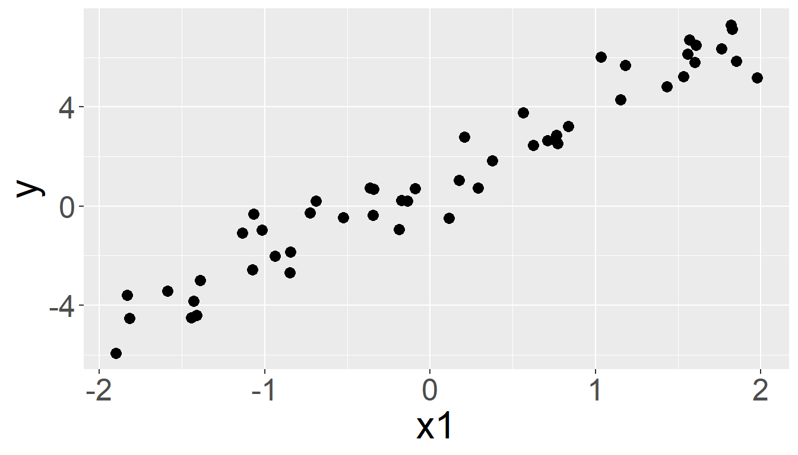
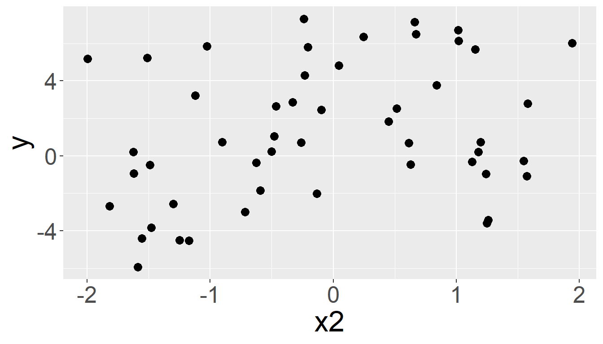
Der Zusammenhang zwischen \(x_1\) und \(y\) ist ziemlich deutlich in der Abbildung zu sehen (siehe Abbildung 6.3 (a)). Dagegen ist der Zusammenhang im Streudiagramm für \(x_2\) gegen \(y\) nicht ganz so eindeutig (siehe Abbildung 6.3 (b)). Dies ist eine Folge der (willkürlichen) Wahl der beiden Modellkoeffizienten \(\beta_1 = 3\) und \(\beta_2 = 0.7\) im Zusammenhang mit einer Varianz von \(\sigma^2 = 0.5^2\). Nun wird ein Modell mittels der lm()-Funktion in R an die Daten angepasst. Die beiden Variablen \(x_1\) und \(x_2\) gehen dem DGP folgend additiv in das Modell ein. Dies für zu der folgenden Modellformulierung für lm() y ~ x1 + x2 (Tip: Im Kapitel zur einfachen Regression ist ein kurzer Primer zur Modellformulierung).
mod <- lm(y ~ x1 + x2, df)Das gefittete Modell kann nun wie üblich mittels summary() inspiziert werden. Insbesondere können hier, wie üblich, die berechneten Modellkoeffizienten \(\beta_0, \beta_1\) und \(\beta_2\) betrachtet werden. Der Übersicht halber sind in der folgenden Tabelle (siehe Tabelle 6.2) nur die Modellparameter und deren Standardfehler angezeigt.
| \(\hat{\beta}\) | \(s_e\) | |
|---|---|---|
| (Intercept) | 1.077 | 0.066 |
| x1 | 2.965 | 0.056 |
| x2 | 0.708 | 0.060 |
| \(\hat{\sigma}\) | 0.460 |
In Tabelle 6.2 ist zu sehen, dass die anhand der Daten berechneten Koeffizienten diejenigen des DGP sehr gut reproduziert haben. Die Wert sind nicht perfekt diejenigen diejenigen die im DGP verwendet wurden, dies ist aber auf Grund der Stichprobenvariabilität nicht zu erwarten. Insgesamt sollte dieses Ergebnis jedoch beruhigend wirken, da es zeigt, dass die multiple Regression in der Lage ist die wahren Modellparameter im Rahmen der Stichprobenunsicherheit abschätzen zu können. Die einzige Neuerung im Gegensatz zur einfachen linearen Regression ist die Erweiterung um einer weitere Variablen \(X_2\) und operativ die Erweiterung in R um den Term + x2 in der Formel für lm().
Die Interpretation von \(\beta_1\) ist gleich derjenigen bei der einfachen linearen Regression allerdings mit einer kleinen Erweiterung. Zwei Objekte die sich in \(x_1\) um eine Einheit voneinander unterscheiden und den gleichen Wert in \(x_2\) haben, unterscheiden sich in der abhängigen Variablen \(y\) um den Steigungskoeffizienten \(\beta_1\). Die gleiche Interpretation mit den Rollen vertauscht trifft ebenfalls auf \(\beta_2\) zu. Zwei Objekte die sich in \(x_2\) um eine Einheit unterscheiden und den gleichen Wert für \(x_1\) haben unterscheiden sich in \(y\) um \(\beta_2\).
Im nächsten Schritt soll nun betrachtet werden, wie die Koeffizienten zustandekommen und wie die Koeffizienten zu interpretieren sind.
6.2 Interpretation der Modellkoeffizienten
Die Interpretation von \(\beta_0\) ist vollkommen identisch mit derjenigen bei der einfachen linearen Regression. Bei der einfachen linearen Regression bedeutete der Koeffizient \(\beta_0\) derjenige Wert, den das Modell annimmt, der vorhergesagte Wert \(\hat{Y}\), wenn die Prädiktorvariable \(X\) den Wert \(0\) annimmt. Graphisch ist dies der \(y\)-Achsenabschnitt. Bei der multiplen Regression bleibt diese Interpretation erhalten und \(\beta_0\) ist nun der Wert \(\hat{Y}\) wenn alle Prädiktorvariablen den Wert \(0\) annehmen. Graphisch ist dies der Schnittpunkt der Modellebene mit der \(y\)-Achse, also ebenfalls der \(y\)-Achsenabschnitt (siehe Abbildung 6.2 (b)).
Die Interpretation der Modellkoeffizienten \(\beta_1, \beta_2, \ldots, \beta_K\) bleibt zunächst auch gleich derjenigen aus der einfachen Regression. Der Koeffizient \(\beta_j, (j\neq0)\) gibt den Unterschied zwischen zwei Objekten an die sich um eine Einheit bezüglich der Variablen \(X_j\) unterscheiden. Was dabei aber etwas unklar bleibt, ist wie sich die Werte der anderen Prädiktorvariablen verhalten und welchen Einfluss diese auf diese Aussage haben?
Um diesen Zusammenhang besser zu verstehen ist zunächst eine kleine Detour notwendig. Zunächst wird eine einfache lineare Regression der beiden Prädiktorvariablen berechnet. Die Variable \(X_1\) wird durch \(X_2\) modelliert. D.h. es wird der Teil der Varianz von \(X_1\) der durch einen linearen Zusammenhang mit \(X_2\) erklärt werden. Dies führt zu folgendem Modell:
\[ x_{1i} = \beta_0 + \beta_1 x_{2i} + \epsilon_i \]
Anhand dieses Modells kann nun die Frage gestellt werden: Wenn \(X_2\) bekannt ist, wie viel Information wird dadurch über \(X_1\) erhalten werden? In dem Fall, dass ein perfekter linearer Zusammenhang zwischen \(X_1\) und \(X_2\) besteht dann wäre die Information von \(X_2\) über \(X_1\) ebenfalls perfekt. Für einen gegeben Wert von \(X_2\) hat, könnte der entsprechende Wert für \(X_1\) berechnet werden. Entsprechend umso schwächer der lineare Zusammenhang zwischen \(X_1\) und \(X_2\) ist, umso weniger Information besitzt \(X_2\) über \(X_1\).
Nun können aber mit Hilfe des Regressionsmodell von \(X_1\) gegen \(X_2\) die Residuen \(e_i\) berechnet werden. Aus Sicht der Information von \(X_2\) über \(X_1\), können diese interpretieren werden. Die Residuen \(e_i\) beziffern genau denjenigen Teil der Varianz von \(X_1\) der nicht mit Hilfe des Regressionsmodells von \(X_1\) gegen \(X_2\) erklärt werden kann. D.h. die Residuen \(e_i\) repräsentieren aus dieser Sichtweise die Varianz von \(X_1\) die um denjenigen Anteil von \(X_2\) bereinigt wurde. Die Residuen \(e_i\) bleiben sozusagen übrig wenn die Information von \(X_2\) aus \(X_1\) herausgenommen wird.
\[ e_i = x_{1i} - \beta_0 - \beta_1 x_{2i} \tag{6.1}\]
Nochmal, die Residuen \(e_i\) stellen denjenigen Teil der Varianz von \(X_1\) dar, der sich nicht durch \(X_2\) vorhersagen lässt. Eben derjenige Teil der Varianz von \(X_1\) der um den Teil von \(X_2\) bereinigt wurde. Die Residuen \(e_i\) aus Gleichung 6.1 werden nun als eine neue Prädiktorvariablen \(x_{1i}^*\) verwendet. Formal:
\[ x_{1i^*} = e_i \]
Im nächsten Schritt wird nun diese neue Prädiktorvariable \(x_1^*\) verwendet um eine einfache lineare Regression von \(Y\) gegen \(x_1^*\) durchzuführen.
\[ y_i = \beta_0 + \beta_1 x_{1i}^* \]
In R können diese Schritte entsprechend mit lm() durchgeführt werden. Zunächst die Regression von \(X_1\) gegen \(X_2\):
mod_x1_star<- lm(x1 ~ x2, df)Das Modell mod_x1_star beinhaltet das Modell von \(X_1\) gegen \(X_2\). Im nächsten Schritt nun die Berechnung der Residuen \(e_i\).
x1_star <- resid(mod_x1_star)Diese sind jetzt einer neuen Variable x1_star zugewiesen worden. Diese Variable wird nun verwendet um eine Regression gegen \(Y\) zu rechnen.
mod_y_x1_star <- lm(y ~ x1_star, df)Das Modell ist nun mod_y_x1_star zugewiesen. Bei Betrachtung der Modellkoeffizienten werden die folgenden Wert erhalten (siehe Tabelle 6.3):
| \(\hat{\beta}\) | \(s_e\) | |
|---|---|---|
| (Intercept) | 1.250 | 0.164 |
| x1_star | 2.965 | 0.141 |
Der Steigungskoeffizient \(\beta_1\) hat genau den gleichen Wert wie in dem Modell aus der multiplen linear Regression mit beiden Variablen (siehe Tabelle 6.2).
Der Ansatz funktioniert genau gleich wenn anstatt \(x_{1i}^*\) wenn \(x_{2i}^*\) Berechnet wird indem eine einfache linear Regression von \(X_2\) gegen \(X_1\) berechnet wird und deren Residuen verwendet werden um \(Y\) zu modellieren.
mod_x2_star <- lm(x2 ~ x1, df)
x2_star <- resid(mod_x2_star)
mod_y_x2_star <- lm(y ~ x2_star, df)
coef(mod_y_x2_star)[2] x2_star
0.7081505 Wieder ist der Wert für den Steigungskoeffizienten \(\beta_2\) aus dem Modell der Gleiche wie bei dem multiplen Regressionmodell mit beiden Variablen.
Das gleiche Prinzip greift auch für mehr als zwei Prädiktorvariablen. Der einzige Unterschied ist, dass in diesem Fall nicht mehr einer Regression der Variable \(X_i\) gegen eine andere \(X_j\) Prädiktorvariable berechnet wird, sondern es wird eine multiple Regression von \(X_i\) gegen alle anderen Prädiktorvariablen \(X_j, j = 1, i-1,i+1,K\) berechnet. Die Residuen aus diesem Modell können dann wieder für eine einfache Regression gegen \(Y\) verwendet werden und der Steigungskoeffizient ist wieder gleich demjenigen der im multiplen Regressionsmodell berechnet wird.
Insgesamt folgt daraus die folgende Interpretation der Steigungskoeffizienten \(\beta_i\) im multiplen Regressionsmodell:
Der Steigungskoeffizient \(\beta_i\) drückt die Information der Variable \(X_i\) aus, wenn der gemeinsame Anteil von \(X_i\) mit allen anderen Prädiktorvariablen \(X_j, j \neq i\) rausgerechnet, bereinigt, wurde. Anders ausgedrückt: Welche zusätzliche Information wird erhalten , wenn die Variable \(X_i\) in das Modell integriert wird, wenn schon alle anderen Variablen \(X_j, j \neq i\) im Modell enthalten sind. D.h., das multiple Regressionsmodell kontrolliert automatisch immer den Einfluss der anderen \(K-1\) Variablen bei der Betrachtung der Variablen \(x_i\). Nochmal als Liste:
- \(\hat{\beta}_1\): Wenn \(X_2\) bekannt ist, welche zusätzlichen Informationen wird durch \(X_1\) über \(Y\) erhalten.
- \(\hat{\beta}_2\): Wenn \(X_1\) bekannt ist, welche zusätzlichen Informationen wird durch \(X_2\) über \(Y\) erhalten.
Bezogen auf die Werte der Steigungskoeffzienten \(\beta_i\) ist die Bedeutung immer noch wie oben, wenn sich zwei Objekte auf der Variablen \(X_i\) um eine Einheit voneinander unterscheiden und alle anderen Variablen den gleichen Wert haben, dann unterscheiden sich die erwarteten (vorhergesagten) Werte \(\hat{y}_i\) laut des Modells um \(\beta_i\).
Die Eigenschaft, dass die anderen Variablen \(X_j\) konstant gehalten werden ist dabei auch das Problem wenn ein einfaches Streudiagramm \(Y_i\) gegen \(X_i\) bei einer multiplen linearen Regression wie in Abbildung 6.3 erstellt wird. In Abbildung 6.3 (a) kann der Einfluss von \(X_1\) gut identifiziert, da der Steigungskoeffizient \(\beta_1\) im Verhältnis zu \(\sigma\) recht groß ist. Im Falle von Abbildung 6.3 (b) ist dies nicht der Fall. Ein Möglichkeit trotzdem mit Hilfe von einfachen Streudiagrammen den isolierten Zusammenhang der Prädiktorvariablen \(X_i\) auf die abhängige \(Y_i\) zu untersuchen bieten sogenannte added-variable plots.
6.2.1 Added-variable plots
Die Idee hinter den sogenannten added-variable plots basiert auf der gleichen Herangehensweise wie eben in Bezug der Berechnung einer Variable \(X_{i}^*\) mittels der Residuen \(e_i\). Neben der Bereinigung von \(X_1\) aus \(X_2\), die eben bereits verwendet wurde, wird zusätzlich auch noch der Einfluss von \(X_1\) aus \(Y\) herausgerechnet. Dazu wird wieder eine einfache lineare Regression von \(Y\) gegen \(X_1\) berechnet und die resultierenden Residuen werden verwendet. Die beiden resultierenden Variablen werden dann in einem Streudiagramm dargestellt. In R kann ein added-varaible plot mittels des folgenden Ansatzes erzeugt werden (siehe Abbildung 6.4).
y_star <- resid(lm(y ~ x1, df)) # Bereinigung von y um x1
x2_star <- resid(lm(x2 ~ x1, df)) # Bereinigung von x2 um x1
ggplot(tibble(x2_star, y_star),
aes(x2_star,y_star)) +
geom_point() +
labs(x = 'x2 | x1', y = 'y | x1')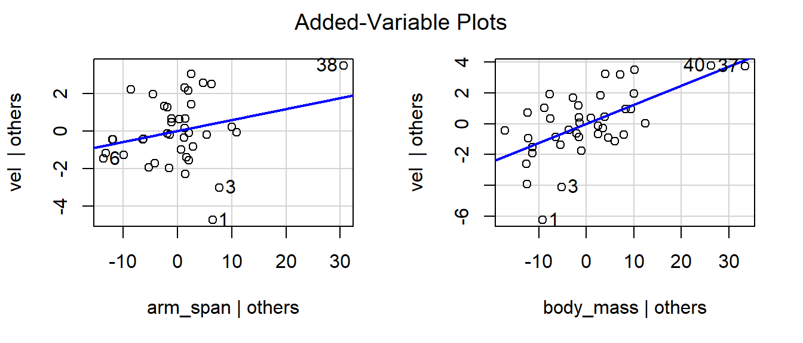
Der Zusammenhang zwischen \(X_2\) und \(Y\) ist nun viel deutlicher zu sein, als dies in Abbildung 6.3 (b) der Fall war. Im Paket car gibt es eine Funktion avPlots() mit der added-variable plots auch direkt erstellt werden können.
car::avPlots(mod)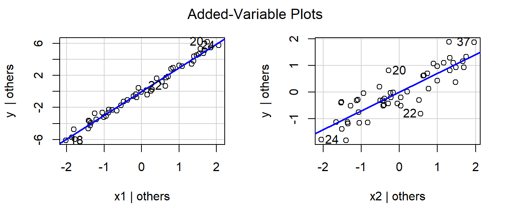
Wenn eine multiple Regression mit mehr als zwei Prädiktorvariablen gerechnet wird, dann werden im added-variable plot jeweils alle \(K-1\) Variablen aus \(x_i\) und \(y\) herausgerechnet. D.h. \(Y\) und \(X_i\) werden um den Einfluss aller, verbleibenden \(X_j, j \neq i\) bereinigt. Die Darstellung von added-variable plots ist daher im Zusammenhang einer multiplen Regressionsanalyse immer von Vorteil um den Einfluss einzelner Variablen auf die abhängige Variable zu beurteilen.
Da ein Steigungskoeffizientt \(\beta_i\) immer den Beitrag der Information von \(X_i\) über denjenigen der anderen Prädiktorvariablen hinaus bestimmt, stellt sich die Frage was passiert wenn im Modell eine oder mehrere Prädiktorvariablen weggelassen werden.
6.2.2 Was passiert wenn eine Prädiktorvariable weggelassen wird?
In Tabelle 6.4 sind noch mal die Koeffizienten aus dem Beispiel abgebildet.
| \(\hat{\beta}\) | \(s_e\) | |
|---|---|---|
| (Intercept) | 1.077 | 0.066 |
| x1 | 2.965 | 0.056 |
| x2 | 0.708 | 0.060 |
Was passiert nun, wenn anstatt einer multiplen Regression mit beiden Prädiktorvariablen zwei Einzelmodelle als einfache lineare Regression gefittet werden. Die Modell enthalten dabei jeweils mit eine der Prädiktorvariablen? Bleiben die Werte der Koeffizienten gleich derjenigen im multiplen Regressionsmodell? Dazu wird erst einmal das Modell mit nur der Prädiktorvariablen \(X_1\) berechnet:
coef(lm(y ~ x1, df))(Intercept) x1
1.007466 3.017589 Im Vergleich zum multiplen Regressionsmodell (siehe Tabelle 6.4) hat sich der Modellkoeffizient verändert. Die Größe des Werts ist zwar in einem ähnlichen Bereich, die Werte sind aber nicht genau gleich. Das Gleiche nun für \(X_2\):
coef(lm(y ~ x2, df))(Intercept) x2
1.3377771 0.9555316 Wieder ist der Wert des Modellskoeffizient anders als derjenige im multiplen Regressionsmodell (siehe Tabelle 6.4). Wieder ist die Größenordnung des Wertes aber ähnlich. Aus Sicht der vorgehenden Ausführungen betrachtet, deutet die Veränderung der Werte darauf hin, dass die Information die die Prädiktorvariablen über \(Y\) aussagen sich ändert wenn die jeweils andere Variable im Modell enthalten ist.
Wird nochmal die der DGP der Daten betrachtet, könnte eingewendet, dass in diesem Beispiel, per Konstruktion des DGPs \(X_1\) und \(X_2\) eigentlich unabhängig voneinander sollten. Als die die Daten generiert wurden, wurden jeweils zwei unabhängige Zufallszahlenmengen erstellt. Eine Antwort auf dieses Problem liefert eine kurze Betrachtung der Korrelation zwischen den beiden Variablen.
round(cor(df),3) x1 x2 y
x1 1.000 0.078 0.969
x2 0.078 1.000 0.289
y 0.969 0.289 1.000Es ist zu sehen, dass \(x_1\) und \(x_2\) miteinander korrelieren, zwar nur leicht aber die Korrelation ist nicht exakt \(=0\). D.h. \(x_1\) enthält rein durch Zufall etwas Informationen über \(x_2\). Dementsprechend ändern sich die Beiträge der Variablen zu \(y\) in Abhängigkeit davon ob die jeweils andere Variable ebenfalls im Modell enthalten ist oder eben nicht. Die Änderungen sind dabei wie oben zu sehen war nur sehr gering.
6.3 Multikollinearität
Sei nun ein anderer Datensatz betrachtet (Beispiel aus Kutner u. a. 2005). Im Rahmen einer Untersuchung sind Körperfettmessungen durchgeführt an \(20\) Personen durchgeführt worden. Neben einer Gesamtkörpermessung wurde auch der Körperfettanteil am Oberarm, Unterarm und am Oberschenkel bestimmt. In Tabelle 6.5 ist ein Ausschnitt der Daten abgebildet.
| Oberarm | Unterarm | Oberschenkel | Gesamt |
|---|---|---|---|
| 19.5 | 43.1 | 29.1 | 11.9 |
| 24.7 | 49.8 | 28.2 | 22.8 |
| 30.7 | 51.9 | 37.0 | 18.7 |
| 29.8 | 54.3 | 31.1 | 20.1 |
| 19.1 | 42.2 | 30.9 | 12.9 |
| 25.6 | 53.9 | 23.7 | 21.7 |
Als Modell sollen der Gesamtkörperfettanteil mit Hilfe der drei verschiedenen Messungen bestimmt werden.
\[ Y_{\text{Körperfettanteil}} = \beta_0 + \beta_1 \cdot X_{\text{Oberarm}} + \beta_2 \cdot X_{\text{Unterarm}} + \beta_3 \cdot X_{\text{Oberschenkel}} + \epsilon \]
Um die Daten besser zu verstehen wird zunächst betrachtet, wie stark die Werte miteinander korrelieren. Dazu wird die Funktion ggpairs() aus dem GGally Paket. Diese ermöglicht mit wenig Aufwand eine übersichtliche Darstellung der Korrelation eines tibbles (siehe Abbildung 6.5).
GGally::ggpairs(bodyfat) 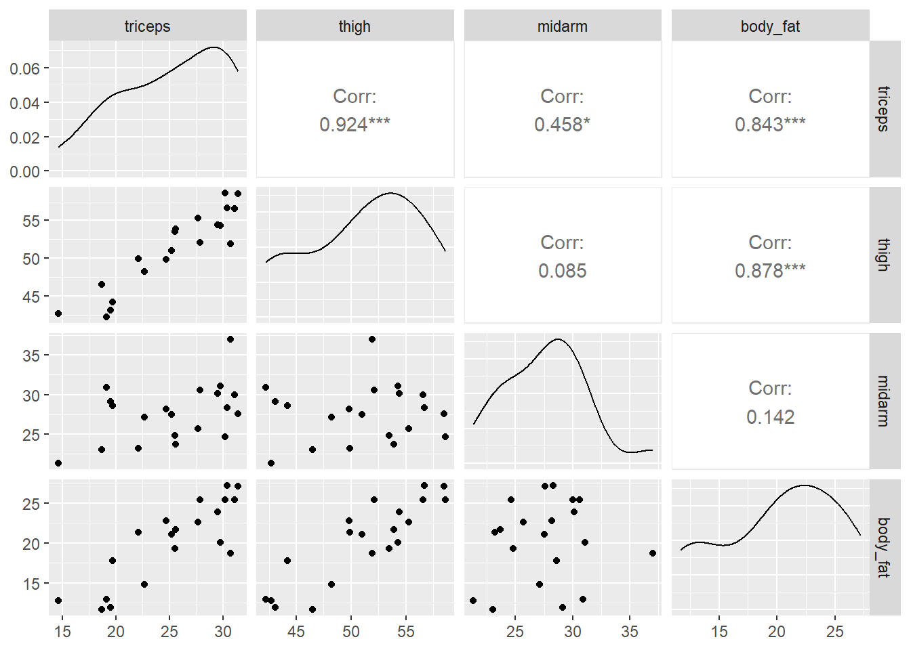
Wie bei Körperfettwerten nicht anders zu erwarten, korrelieren die Prädiktorvariablen relativ stark miteinander. Die Korrelation zwischen den Oberschenkeldaten und den Oberarmdaten in dieser Stichprobe ist sogar \(>0.9\). Die Frage ist nun, wie sich diese Korrelation auf den Modellfit auswirkt, wenn nur Teilmengen der Prädiktorvariablen zur Anpassung verwenden werden. Insgesamt können vier verschiedene Modelle verwendet werden. Ein Modell mit allen Prädiktorvariablen und drei weitere Modelle bei denen wir jeweils eine der Prädiktorvariablen weglassen. In R:
# Alle drei Prädiktoren
mod_full <- lm(body_fat ~ triceps + thigh + midarm, bodyfat)
# ohne Arm
mod_wo_midarm <- lm(body_fat ~ triceps + thigh, bodyfat)
# Ohne Oberschenkel
mod_wo_thigh <- lm(body_fat ~ triceps + midarm, bodyfat)
# Ohne Triceps
mod_wo_triceps <- lm(body_fat ~ thigh + midarm, bodyfat)In Tabelle 6.6 sind nur die Steigungskoeffizienten für die vier verschiedenen Modell abgebildet.
| Oberarm | Oberschenkel | Unterarm | |
|---|---|---|---|
| Alle | 4.33 | -2.86 | -2.19 |
| ohne Unterarm | 0.22 | 0.66 | |
| ohne Oberschenkel | 1.00 | -0.43 | |
| ohne Oberarm | 0.85 | 0.10 |
Es ist zu beobachten, dass für diese Daten die Werte der Modellkoeffizienten sich sehr stark ändern in Abhängigkeit von welche Variablen in dem Modell enthalten sind. Beispielsweise änder der Koeffizient für den Oberschenkel nicht nur seine Größe sondern auch sein Vorzeichen, je nachdem ob der Ober- oder der Unterarm oder beide im Modell enthalten sind. D.h. durch die Korrelation der Prädiktorvariablen untereinander kommt es dazu, dass die Modellkoeffizienten sehr stark schwanken in Abhängigkeit von der Variablenkombination. Wird dies wieder aus der Sicht der Information betrachtet ist dieser Effekt eigentlich auch zu erwarten. Die Interpretation der Modellkoeffizienten bei der multiplen Regression war oben hergeleitet als, wie viel Information die neue Variablen liefert nachdem die anderen Variablen schon im Modell berücksichtigt wurden. Wenn die Variablen nun sehr stark miteinander korrelieren, dann bringt eine neue Variable wenige neue Information in das Modell über diejenige Information die schon durch die anderen Variablen repräsentiert wird. D.h. bei der multiplen Regression ist die Betrachtung der Beziehung der Prädiktorvariablen miteinander wichtig bei der Beurteilung des Modells. Dieses Konzept ist so wichtig, dass es einen eigenen Namen bekommt. Wenn mehrere Variablen in einem Modell miteinander korrelieren, dann wird dies als Multikollinearität bezeichnet.
Definition 6.1 (Multikollinearität) Wenn in einem Modell Prädiktorvariablen miteinander korrelieren, dann wird dies als Multikollinearität bezeichnet.
Multikollinearität hat verschiedene Einflüsse auf das Modell die sich vor allem hinsichtlich der Stabilität der Koeffizienten auswirken, wenn Prädiktorvariablen aus dem Modell herausgenommen werden bzw. dazugenommen werden. Dazu beeinflusst Multikollinearität auch die Größe der Standardfehler der geschätzten Koeffizienten \(\hat{\beta}_j\).
Multikollinearität hat unter anderem die folgenden Effekte:
- Große Änderungen in den Koeffizienten wenn Prädiktoren ausgelassen/eingefügt werden
- Koeffizienten haben eine andere Richtung als erwartet
- Hohe (einfache) Korrelationen zwischen Prädiktoren
- Breite Konfidenzintervalle für “wichtige” Prädiktoren \(b_j\)
Es lässt sich zeigen, dass die Varianz der geschätzten Modellkoefizienten \(b_j\) die folgende Form hat (siehe Gleichung 6.2):
\[ \widehat{\text{Var}}(b_j) = \frac{\hat{\sigma}^2}{(n-1)s_j^2}\frac{1}{1-R_j^2} \tag{6.2}\]
Der Term \(R_j^2\) wird als multipler Korrelationskoeffizient bezeichnet und beruht auf dem Determinationskoeffizienten der Prädiktorvariablen \(X_i, i\neq j\) auf die Prädiktorvariable \(X_j\). D.h. es wird ein Regressionsmodell gerechnet, bei dem die Prädiktorvariable \(X_j\) als abhängige Variable verwendet wird und mittels der anderen \(p-1\) Prädiktorvariablen modelliert wird. Der zweiter Term in Gleichung 6.2 \(\frac{1}{1-R_j^2}\) wird als Variance Inflation Factor (VIF) bezeichnet (siehe Gleichung 6.3).
\[ \text{VIF}_j = \frac{1}{1-R_j^2} \tag{6.3}\]
Wie der Name bereits andeutet, kommt es durch die Korrelation der Prädiktorvariablen untereinander es zu einer Inflation der Varianzen. D.h. die Standardfehler, die Wurzeln der jeweiligen Varianzen, der Modellparameter werden größer. Dies kann dann dazu führen, dass die Modellkoeffizienten keine statistische Signifikanz erreichen obwohl ein klarer Zusammenhang zwischen der Prädiktorvariablen und der abhängigen Variablen besteht.
Anhand Gleichung 6.2 ist weiter zu erkennen, dass wenn der Determinantionskoeffizient \(R^2_j\), also die Korrelation der Prädiktorvariablen \(j\) mit den anderen Prädiktorvariablen größer wird, der zweite Term ebenfalls größer wird und dementsprechend die Varianz größer wird.
Der \(VIF_j\) bietet daher eine einfache Möglichkeit, zumindest heuristisch, das gefittete Regressionsmodell auf Multikollinearitäten zu überprüfen. Bei der Interpretation der VIF gibt es allerdings keinen magischen Wert der eineindeutig Probleme identifiziert. Im Allgemeinen werden die VIFs niemals komplett null sein. Bei der Beurteilung von Problemen auf Grund von Multikollinearität wird üblicherweise der größte VIF Wert im Modell betrachtet.
Tipp
Wenn VIF > 10 ist, dann deutet dies auf hohe Multikollinearität hin.
Manchmal wird in der Literatur auch die sogenannte Tolerance = \(\frac{1}{VIF}\), der Inverse Wert des VIF betrachtet.
\[ \text{Tolerance}_j = \frac{1}{\text{VIF}_j} = 1 - R^2_j \tag{6.4}\]
Tipp
Wenn der \(\text{Tolerance}_j\) nahe bei \(1\) ist, spricht dies für keine relevante Multikollinearität, während Werte \(<0.1\) auf Problem hindeuten.
Hinsichtlich des Einflusses bzw. des Umgangs bei Multikollinearität muss unterschieden werden, welches Ziel die Modellierung verfolgt. Das Problem das durch die Multikollinearität entsteht ist, basiert darauf das das Modell nicht eindeutig zuordnen kann, welche der miteinander korrelierten Variable für die beobachteten Veränderungen in der abhängigen Variablen \(Y\) zuständig ist. Multikollinearität vermindert dabei nicht die Fähigkeit des Modells Mittelwerte \(E[y|x]\) vorherzusagen oder einen guten Modellfit zu erhalten. Allerdings verkompliziert sich die Interpretation der Modellkoeffizienten \(\hat{\beta}_j\). Dadurch das die Prädiktorvariablen miteinander korrelieren, kann es beispielsweise gar nicht praktisch möglich sein die Variablen einzeln zu variieren, wodurch die Interpretation des Koeffizienten \(b_j\) als die Veränderung von \(y\) bei Veränderung von \(x_j\) um eine Einheit problematisch wird. Da die Multikollinearität die Varianzen der Modelkoeffizienten vergrößert, kann es zu dem Fall kommen, dass ein Modellkoeffizienten \(b_j\) statistisch nicht signifikant ist, obwohl eindeutig ein Zusammenhang zwischen \(x_j\) und \(y\) besteht. Zusätzlich, da die Modellkoeffizienten bei starken Multikollinearität eher instabil sind und sich stark bei Veränderung des Modells verändern können ist deren Interpretation grundsätzlich problematisch.
6.3.1 Variance Inflation Factor (VIF) in R berechnen
In R kann der VIF am einfachsten über zwei Funktionen berechnet werden. Einmal über die vif()-Funktion aus dem Paket car.
car::vif(mod_full) triceps thigh midarm
708.8429 564.3434 104.6060 Eine weitere Möglichkeit besteht mittels der Funktion check_collinearity() aus dem performance Paket.
performance::check_collinearity(mod_full)check_collinearity()
| Term | VIF | VIF_CI_low | VIF_CI_high | SE_factor | Tolerance | Tolerance_CI_low | Tolerance_CI_high |
|---|---|---|---|---|---|---|---|
| triceps | 708.8429 | 383.98652 | 1309.2486 | 26.62410 | 0.0014107 | 0.0007638 | 0.0026043 |
| thigh | 564.3434 | 305.76950 | 1042.2977 | 23.75591 | 0.0017720 | 0.0009594 | 0.0032704 |
| midarm | 104.6060 | 56.91565 | 192.9714 | 10.22771 | 0.0095597 | 0.0051821 | 0.0175699 |
In Tabelle 6.7 ist zu sehen, dass check_collinearity() auch noch Konfidenzintervalle und besagten Tolerance Parameter (siehe Gleichung 6.4) ausgibt. In jedem Fall, ist zu sehen, dass bei Anwendung der Daumenregel \(VIF > 10\), hohe Multikollinearität in unserem Körperfettmodell zu beobachten sind. Dies erklärt somit auch die großen Veränderung in den Koeffizienten bei Hinzu- bzw. Entnahme der Prädiktorvariablen.
Beispiel 6.2 (Gehparameter bei Älteren) Die Beziehung zwischen gebrechlichen älteren Menschen und der Gehgeschwindigkeit ist entscheidend, um den Bedarf an Langzeitpflege oder erhöhter Unterstützung zu minimieren. Insbesondere ist der Zusammenhang zwischen Gehleistung, respiratorischer Funktion und dynamischem Gleichgewicht bei älteren Menschen, die auf Langzeitpflege angewiesen sind, noch nicht gut verstanden. Zu diesem Zweck wurde in Jiroumaru u. a. (2023) der Zusammenhänge zwischen Gehgeschwindigkeit, Atemmuskelkraft und dynamischem Gleichgewicht mittels multipler Regressionsanalyse untersucht.
Die Atemmuskelkraft wurde mittels des maximalen inspiratorische (PImax) und des maximalen exspiratorische Drucks (PEmax) bestimmt. Der maximale Doppelschrittlängentest (MDST) wurde als Index für das dynamische Gleichgewicht verwendet. Eine multiple Regressionsanalyse wurde durchgeführt, wobei die Gehgeschwindigkeit (normale und maximale Gehgeschwindigkeit) als abhängige Variable und PImax, PEmax sowie MDST als unabhängige Variablen verwendet wurden. Zusätzlich wurde das Geschlecht als Anpassungsvariable berücksichtigt und in den Daten als entweder \(0\) oder \(1\) kodiert. Die Daten sind im repository zum Skriptum zu finden. Eine Analyse der Daten für die abhängige Variable maximale Gehgeschwindigkeit (mws) führte zu folgendem Ergebnis:
Call:
lm(formula = mws ~ Pemax + mdst + Pimax + gender, data = jiro)
Residuals:
Min 1Q Median 3Q Max
-0.49647 -0.11938 0.02674 0.09814 0.63112
Coefficients:
Estimate Std. Error t value Pr(>|t|)
(Intercept) -0.089055 0.143775 -0.619 0.5388
Pemax 0.005391 0.002381 2.264 0.0286 *
mdst 0.810667 0.156529 5.179 5.33e-06 ***
Pimax 0.005307 0.002804 1.893 0.0650 .
gender -0.121083 0.083215 -1.455 0.1528
---
Signif. codes: 0 '***' 0.001 '**' 0.01 '*' 0.05 '.' 0.1 ' ' 1
Residual standard error: 0.2387 on 44 degrees of freedom
Multiple R-squared: 0.6331, Adjusted R-squared: 0.5998
F-statistic: 18.98 on 4 and 44 DF, p-value: 3.918e-09D.h. es wurde ein stastistisch signifikanter Zusammenhang der maximalen Gehgeschwindigkeit mit PEmax und MDST beobachtet. Eine Untersuchung des VIF deutete auf keine starken Multikollineariäten zwischen den Variablen hin.
car::vif(mod) Pemax mdst Pimax gender
2.137365 1.255722 1.866983 1.458773 6.3.2 Wenn Prädiktorvariablen \(X_j\) sich gegenseitig maskieren
Insgesamt sind aus der operativen Seite durch den Übergang von der einfachen zur multiplen Regression keine großen Neuerungen hinzugekommen. Allerdings müssen jetzt, wie schon bezüglich der Multikollinearität gesehen wurde, das Verhältnis der Prädiktorvariablen \(X_j\) untereinander näher betrachtet werden. Das folgenden Beispiel ist McElreath (2016) entnommen und zeigt noch einmal zu welchen unerwarteten Effekten es kommen kann, wenn die Prädiktorvariablen miteinander in Beziehung stehen. In diesem Beispiel kommt es tatsächlich zu einer Maskierung der Effekt untereinander wenn Variablen hinzugenommen bzw. weggelassen werden. Daraus resultieren ebenfalls große Veränderungen in den Modellkoeffizienten in Abhängigkeit von der Kombination der Prädiktorvariablen.
Um das Beispiel so anschaulich wie möglich zu machen, wird ein DGP mit nur zwei Prädiktorvariablen \(X_{pos}\) und \(X_{neg}\) verwendet. Die Prädiktorvariable \(X_{pos}\) sei positiv mit \(Y\) korreliert, während die Prädiktorvariable \(X_{neg}\) negativ mit \(Y\) korreliert ist. Zusätzlich seien die beiden Prädiktorvariablen Variablen positiv miteinander korreliert. Es werden \(N = 100\) Datenpunkte simuliert. Die genaue Herleitung der Werte ist im einzelnen nicht wichtig und die Werte sind wie immer bei den verwendeten Simulationen der Einfachheit halber gewählt. Zwischen \(X_{pos}\) und \(Y\) besteht eine Korrelation von \(rho_{X_{pos}y} = 0.15\), zwischen \(X_{neg}\) und \(Y\) von \(rho_{X_{neg}Y} = -0.5\) und zwischen den beiden Prädiktorvariabeln von \(rho_{XX} = 0.5\)
Sigma <- matrix(c(1,0.15, -.5, 0.15, 1, 0.5, -0.5, 0.5, 1), nr=3)
Sigma [,1] [,2] [,3]
[1,] 1.00 0.15 -0.5
[2,] 0.15 1.00 0.5
[3,] -0.50 0.50 1.0Um die gewünschte Korrelationsstruktur zwischen den Variablen kann nun die Funktion mvrnorm() aus dem Paket MASS verwendet werden. Mit mvrnorm() können Zufallszahlen generiert werden, die eine multivariaten Normalverteilung mit einer vorgegeben Kovarianzstruktur folgen.
set.seed(123)
N <- 100
df_temp <- MASS::mvrnorm(n = 100, mu = c(0,0,0), Sigma=Sigma)
colnames(df_temp) <- c('y','x_pos','x_neg')
df <- as_tibble(df_temp)In Abbildung 6.6 ist die resultierende Korrelationsmatrize der drei Variablen abgebildet.
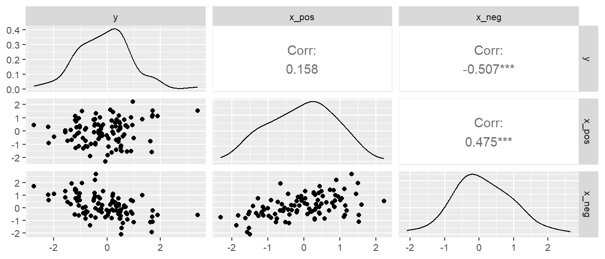
Es ist zu sehen, dass x_pos und x_neg die gewünschte Korrelation mit \(y\) aufweisen sowie ebenfalls eine positive Korrelation miteinander aufweisen. Nun werden wieder drei verschiedene Modelle angepasst. Ein Modell mit bei Variablen, eine Modell mit nur \(x_{pos}\) und ein Modell mit nur \(x_{neg}\) als Prädiktorvariablen. In Tabelle 6.8 sind die resultierenden Modellkoeffizienten für die drei Modelle dokumentiert.
| \(\hat{\beta_0} \pm s_e\) | \(\hat{\beta}_{pos} \pm s_e\) | \(\hat{\beta}_{neg} \pm s_e\) | |
|---|---|---|---|
| pos | \(-0.1\pm 0.1\) | \(0.17\pm 0.11\) | |
| neg | \(-0.04\pm 0.09\) | \(-0.57\pm 0.1\) | |
| pos + neg | \(0.03\pm 0.07\) | \(0.54\pm 0.09\) | \(-0.85\pm 0.1\) |
Es ist zu erkennen, dass die Größe der Modellkoeffizienten sehr stark davon abhängt welche Variablenkombination gefittet wird. Für das Modell mit nur dem positiven Prädiktor \(x_{pos}\) kann bei Verwendung der Daumenregeln \(\pm 2\times \text{SE}\) erkannt werden, dass der Modellkoeffizient \(b_{pos}\) statistisch nicht signifikant ist. Erst wenn beide Prädiktorvariablen in dem Modell inkludiert sind, ist der Modellkoeffizient statistisch signifikant. Im ersten Modell maskiert der Effekte der Prädiktorvariablen \(x_{neg}\), welche gar nicht im Modell enthalten ist, den Effekt von \(x_{pos}\) auf \(y\). Erst wenn beide Variablen im Modell auch enthalten sind, ist das Modell in der Lage den Effekt auch tatsächlich zu erfassen.
Zusammenfassend ist es entsprechend wichtig dass bei der Modellierung mittels einer multiplen linearen Regression theoretische Vorüberlegungen über die relevanten Variablen in die Studie mit eingehen. Ein einfaches probieren mittels In- und Exklusion von Prädiktorvariablen wird selten zum gewünschten Erfolg führen bzw. zu einem robustem Modell führen. Zumindest wenn es darum geht den Werten der Modellkoeffizienten auch inhaltliche Bedeutung zuweisen zu können.
6.4 Unter der Motorhaube von lm()
Bei der Behandlung der einfachen linearen Regression mittels Matrizen wurde gezeigt, dass die Berechnung der Koeffizienten \(\beta_0\) und \(\beta_1\) von lm() im Hintergrund über Matrizen erfolgt. Hier spielte die Modellmatrix \(\mathbf{X}\) eine wichtige Rolle. Diese taucht genauso auch wieder bei der multiplen linearen Regression auf, nur, dass nun nicht mit mehr zwei Spalten sondern entsprechend der Anzahl der Prädiktorvariablen mehr Variablen in den Spalten abgebildet werden. Sei zum Beispiel ein einfacher Datensatz mit zwei Prädiktorvariablen \(X_1\) und \(X_2\) gegeben.
df <- tibble(
y = c(1,3,2.5,7),
x_1 = 1:4,
x_2= c(11,11,14,13)
)Wenn nun ein lineares Modell an die Daten gefittet wird, dann wird die folgende Syntax verwendet lm(y ~ x_1 + x_2) entsprechend zu dem Modell \(y_i = \beta_0 + \beta_1 x_{1i}+ \beta_2 x_{2i} + \epsilon_i\). Intern in lm() wird diese nun auf Matrizen abgebildet und mit Hilfe von Matrizenalgebra gelöst. Die erzeugte Modellmatrix \(\mathbf{X}\) kann wie bereits besprochen mittels model.matrix() angezeigt werden.
mod <- lm(y ~ x_1 + x_2, df)
model.matrix(mod) (Intercept) x_1 x_2
1 1 1 11
2 1 2 11
3 1 3 14
4 1 4 13
attr(,"assign")
[1] 0 1 2In der ersten Spalte stehen wieder nur Einsen entsprechend dem Koeffizienten \(\beta_0\). In der zweiten Spalte sind die Werte der Variablen x_1, während in der dritten Spalte die Werte der Variablen x_2 eingetragen sind. Die Spalten entsprechen also wieder den jeweiligen Einträgen der Prädiktorvariablen \(x_{ji}\). Da im üblichen die Prädiktorvariablen, zumindest bei numerischen Werten, unabhängig voneinander sind hat die Modellmatrix \(\mathbf{X}\) vollen Rang. Damit hat auch \(\mathbf{X}^T\mathbf{X}\) vollen Rang und kann invertiert werden um mittels \((\mathbf{X}^T\mathbf{X})^{-1}\mathbf{X}^T\mathbf{Y}\) die Werte für die Koeffizienten \(\beta_i, i=1,\ldots,p\) zu berechnen. Die Multiplikation von \(\mathbf{X}\) mit \(\hat{\beta}\) für zu den \(\hat{y}_i\) Werten.
beta_s <- coef(mod)
X <- model.matrix(~ x_1 + x_2, df)
X %*% beta_s [,1]
1 0.6296296
2 3.4629630
3 2.6851852
4 6.7222222Die Modellkoeffizienten werden bei der Berechnung der Werte \(\hat{y}_i\) immer multiplikativ mit der jeweiligen Spalte verbunden. Etwas explizierter.
\[ \hat{y} = \begin{pmatrix} \hat{y}_1 \\ \hat{y}_2 \\ \hat{y}_3 \\ \hat{y}_4 \end{pmatrix} = \begin{pmatrix} 1 \\ 1 \\ 1 \\ 1 \end{pmatrix} \times \hat{\beta_0} + \begin{pmatrix} 1 \\ 2 \\ 3 \\ 4 \end{pmatrix} \times \hat{\beta_1} + \begin{pmatrix} 11 \\ 11 \\ 14 \\ 13 \end{pmatrix} \times \hat{\beta_2} = X \hat{\beta} \]
Dies sind dementsprechend die gleichen Werte \(\hat{y}_i\) wie mittels der Funktion predict() berechnet werden.
predict(mod) 1 2 3 4
0.6296296 3.4629630 2.6851852 6.7222222 Wenn sich nun das Modell ändert, dann ändert sich dementsprechend auch die Modellmatrix \(X\). Zu Beispiel bei der Hinzunahme von weiteren Prädiktorvariablen verändert sich die Modellmatrix \(X\) dahingehend, dass zusätzliche Spalten an die Matrix angehängt werden. Etwas interessanter wird es, wenn im weiteren Verlauf des Skripts Interaktionseffekte und kategoriale Variablen in das Modell aufgenommen werden. Hier ist dann Kenntnis über die Modellmatrix von Vorteil um die Bedeutung der Modellkoeffizienten besser verstehen zu können.
6.5 Take-away
- Bei der multiplen Regression wird das Modell um zusätzliche Prädiktorvariablen erweitert
- Die Interpretation der Modellkoeffizienten ist bezieht sich auf den Einfluss der jeweiligen Variblen über denjenigen der anderen Variablen hinaus
- Die Korrelation der Prädiktorvariablen, die Multikollinearität, untereinander kann zu unvorhergesehenen Effekten bei den Modellkoeffizienten führen
6.6 Zum Nacharbeiten
Die folgenden Texte eignen sich gut um die Inhalte noch einmal zu vertiefen. Altman und Krzywinski (2015) diskutiert noch mal eingehend was passiert wenn Variablen miteinander korrelieren und wie sich das auf die Schätzer für die Koeffizienten auswirkt. (Kutner u. a. 2005, p.278–288) und (Fox 2011, p.325–327) sind nochmal als Zusammenfassungen zu lesen.
In den bisherigen Betrachtungen zur multiplen linearen Regression sind nur kontinuierliche, beziehungsweise metrische Variablen als Prädiktorvariablen verwendet worden. Im Folgenden sollen nun gezeigt werden, dass mit einem kleinem Trick genauso nominale Variablen, also z.B. TREATMENT versus CONTROL, in das Regressionsmodell integriert werden können. Dabei wird sich zeigen, dass dadurch im Prinzip keine fundamental neuen Konzept erlernt werden müssen. Die bisherige Betrachtungsweise von Modellparametern als Steigungen von Geraden bzw. Ebenen ist immer noch ausreichend um die Modellparameter interpretieren zu können. Der Einstieg beginnt zunächst mit dem kanonischen Vergleich von zwei unabhängigen Gruppen.
6.7 Vergleich von zwei unabhängigen Gruppen
Es sollen die Unterschiede zwischen Männern und Frauen in Bezug auf die Körpergröße statistisch untersuchen werden. In Abbildung 6.7 ist ein hypothetischer Datensatz von Körpergrößen von Frauen und Männern abgebildet. Der Datensatz ist so konstruiert, dass Männer im Mittel größer als Frauen sind.
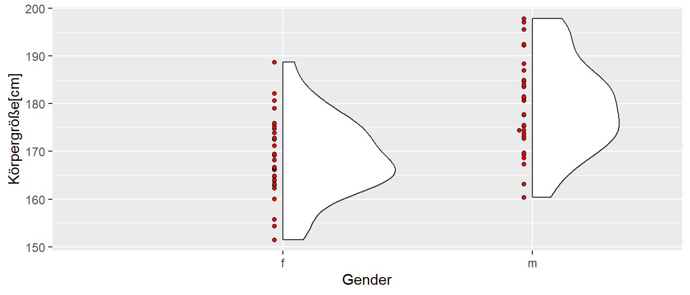
In Tabelle 6.9 ist ein Ausschnitt der Daten tabellarisch dargestellt. Die Daten sind unterteilt in zwei Datenspalten. In der ersten Spalte stehen die Körpergrößen, während in der zweiten Spalte die nominale Variable gender steht. Als eine nominale Variable nimmt gender in diesem Fall nur zwei verschiedene Werte an, entweder m für Männer oder f für Frauen.
| cm | gender |
|---|---|
| 174.4 | m |
| 177.7 | m |
| 195.6 | m |
| 171.3 | f |
| 164.0 | f |
| 176.0 | f |
In Tabelle 6.10 sind die deskriptiven Statistiken der Körpergrößendaten abgebildet. Hier ist zu erkennen, dass die Standardabweichung in etwa die gleiche Größe haben, während die Mittelwerte mit \(\bar{y}_{f} = 169\) bzw. \(\bar{y}_{m} = 180\) entsprechend unterschiedlich sind.
| Gender | \(\bar{x}\) | SD |
|---|---|---|
| f | 168.8 | 8.4 |
| m | 179.5 | 9.8 |
Um die Repräsentation von nominalen Variablen in einem lineare Modell zu verstehen ist allerdings zunächst noch eine kurze Detour notwendig um zu verstehen wie nominale Werte in R repräsentiert werden.
6.8 Nominale Variablen in R
Nominale Variablen werden in R mittels eines eigenem Datentyps factor repräsentiert. Erstellt werden kann ein Faktor mittels der factor()-Funktion. Die Funktion hat drei wichtige Parameter. Der erste Parameter bezeichnet die Werte, der zweite die möglichen Faktorstufen (levels) und der dritte Parameter die dazugehörigen Bezeichnungen (labels). Ein einfaches Beispiel mit einer nominalen Variablen die die beiden Werte m und f annehmen kann, kann in R wie folgt umgesetzt werden.
gender <- factor(c(0,0,1,1),
levels = c(0,1),
labels = c('m','f'))
gender[1] m m f f
Levels: m fD.h. ein Faktor besteht aus einem Datenvektor mit den Elemente \((0,0,1,1)\). Auf diesem Datenvektor werden die Stufen levels mit \(0\) und \(1\) und und die dazugehörigen labels mit \(m\) und \(f\) definiert. Wenn die neue Variable gender aufgerufen wird, gibt R einen Vektor mit den entsprechenden labels zurück. Zusätzlich gibt R die möglichen labels auch noch einmal explizit als Levels an.
Wenn der Parameter levels nicht angegeben wird, dann extrahiert factor() die eineindeutigen Werte selbst und führt die Abbildung auf die labels entsprechend den Sortierungsregeln von R aus.
gender <- factor(c(0,0,1,1),
labels = c('m','f'))
gender[1] m m f f
Levels: m fstr(gender) Factor w/ 2 levels "m","f": 1 1 2 2Dabei muss darauf geachtet werden, dass die Abbildung auch tatsächlich diejenige ist, die gewünscht ist.
gender <- factor(c(0,0,1,1),
labels = c('f','m'))
gender[1] f f m m
Levels: f mDaher ist es fast immer sinnvoll labels und levels immer zusammen explizit anzugeben, um sicher zu stellen, dass die levels in der gewünschten Reihenfolge spezifiziert sind. Wenn die Parameter nicht angegeben werden, dann führt factor die Abbildung automatisch durch und für die labels werden die Datenwerte übernommen.
gender <- factor(c(0,0,1,1))
gender[1] 0 0 1 1
Levels: 0 1
Warnung
Achtung, die Variable gender sieht zwar aus wie ein numerischer Vektor, sie ist es aber nicht. Daher können auch keine numerischen Operationen auf der Variable angewendet werden.
is.numeric(gender)[1] FALSEgender + 1[1] NA NA NA NAIntern wird eine Faktorvariable von R zwar als ein numerischer Vektor abgelegt. Aber die sichtbaren Werte sind nun die Zeichenketten der labels definiert, die daher auch angezeigt werden. Die interne numerische Repräsentation muss auch nicht mehr den ursprünglichen Datenwerten entsprechen.
as.numeric(gender)[1] 1 1 2 2Die Datenwerte waren ursprünglich \((0,1)\) und sind jetzt auf \((1,2)\) abgebildet worden. Dazu sei noch mal an die Eigenschaft von nominalen Variablen erinnert. Nominale Variablen sind voneinander unterscheidbare Werte die jedoch in keiner Reihenfolge zueinander stehen.
Die automatische Konvertierung von factor() funktioniert am intuitivsten mit Zeichenkettenvektoren.
gender <- factor(c('m','f','m','f'))
gender[1] m f m f
Levels: f mstr(gender) Factor w/ 2 levels "f","m": 2 1 2 1factor() ermittelt zunächst die eineindeutigen Werte und sortiert diese dann entsprechend des Typen. In diesem Fall wird die Zeichenkette alphabetisch sortiert. Dann erfolgt die Abbildung der Werte auf die labels. Dies führt in diesem Fall dazu, dass die Werte m intern den Wert \(2\) zugeordnet bekommen, obwohl der erste Wert in den Daten m ist. Diese Sortierung der Daten wird später noch einmal von Bedeutung werden.
Die Reihenfolge der Faktorstufen wird durch die Angabe des levels explizit bestimmt, was daher auch noch mal ein Argument dafür das levels-Argument zu verwenden.
gender <- factor(c('m','f','m','f'),
levels = c('m','f'))
gender[1] m f m f
Levels: m fstr(gender) Factor w/ 2 levels "m","f": 1 2 1 2gender <- factor(c('m','f','m','f'),
levels = c('f','m'))
gender[1] m f m f
Levels: f mstr(gender) Factor w/ 2 levels "f","m": 2 1 2 1
Tipp
Im Package forcats sind eine Reihe von Funktionen hinterlegt, mit denen die Eigenschaften von factor-Variablen einfach manipuliert werden können. Zum Beispiel, wenn die Reihenfolge von Faktorstufen geändert werden soll kann die Funktion fct_relevel() verwendet.
gender <- factor(c('m','f','m','f'),
levels = c('f','m'))
gender[1] m f m f
Levels: f mforcats::fct_relevel(gender, 'm')[1] m f m f
Levels: m fWie immer ist die ausführliche Dokumentation der Funktionen mit Beispiel die erste Adresse, wenn Probleme im Zusammenhang mit factor-Variablen auftauchen.
Tipp
Viele Funktionen in R, wie z.B. lm(), transformieren Vektoren mit Zeichenketten automatisch in einen factor() um. Wird in lm() in der Formel beispielsweise y ~ gender benutzt und gender ist eine Datenspalte die aus den Zeichenketten c('m','m','f','f') besteht, dann ruft lm() intern die Funktion factor() für diese Daten auf und führt dann die Berechnung mit der resultierenden Faktorvariable durch.
Dies erleichtert natürlich oft den Umgang mit den Daten, hat aber den Nachteil das immer klar sein muss, dass die automatische Konvertierung auch tatsächlich diejenige ist, dich gewünscht ist.
6.9 Vergleich von zwei Gruppen (continued)
Zurück zum Körpergrößenvergleich. Normalerweise würden die Unterschiede zwischen den beiden Gruppen mit einem klassischen t-Test für unabhängige Stichproben unter der Annahme der Varianzgleichheit untersucht werden. In R kann dazu die t.test()-Funktion verwendet werden.
t.test(cm ~ gender, data=height, var.equal=T)
Two Sample t-test
data: cm by gender
t = -4.5683, df = 58, p-value = 2.617e-05
alternative hypothesis: true difference in means between group f and group m is not equal to 0
95 percent confidence interval:
-15.45403 -6.03713
sample estimates:
mean in group f mean in group m
168.7834 179.5290 Dem Output von t.test() zeigt an, dass der Unterschied zwischen den Gruppen statistisch signifikant ist.
Der Anwendung des t-Tests unterliegt, wie bei allen statistischen Tests, ein Modell. Bei gleich großen Gruppen \((n_w = n_m)\) folgt die übliche Formulierung.
\[\begin{equation} \begin{aligned} Y_{if} &= \mu_{f} + \epsilon_{if}, \quad \epsilon_{if} \sim \mathcal{N}(0,\sigma^2) \\ Y_{im} &= \mu_{m} + \epsilon_{im}, \quad \epsilon_{im} \sim \mathcal{N}(0,\sigma^2) \end{aligned} \label{eq-mlm-dummy-tTest-model} \end{equation}\]
Dem Modell folgend, sollten beide Gruppen normalverteilt sein mit gleicher Varianz \(\sigma^2\) und den Erwartungswerten \(\mu_f\) für die weiblichen Teilnehmerinnen und \(\mu_m\) für die männlichen Teilnehmer. Die Hypothesen beim t-Test sind unter der Nullhypothese die übliche Annahme der Gleichheit der Mittelwerte.
\[\begin{equation*} H_0: \delta = 0 \end{equation*}\]
Daraus resultiert die folgende Teststatistik:
\[\begin{equation} t = \frac{\bar{y}_m - \bar{y}_w}{\sqrt{\frac{s_m^2 + s_w^2}{2}}\sqrt{\frac{2}{n}}} \label{eq-tTest} \end{equation}\]
Unter der \(H_0\) folgt die Referenz- bzw. Stichprobenverteilung einer t-Verteilung mit \(N - 2\) Freiheitsgraden.
\[\begin{equation*} t|H_0 \sim t_{df=2n-2} \end{equation*}\]
Die entsprechende Dichtefunktion hat die folgende graphische Darstellung (siehe Abbildung 6.8).
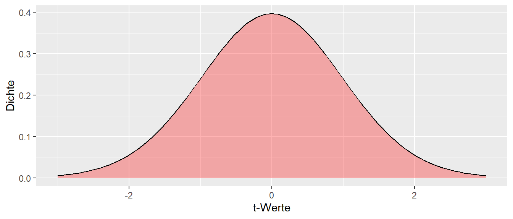
Soweit nicht Neues. Im Beispiel wurde ein \(t\)-Wert von \(t = -4.6\) beobachtet der derart extrem ist, dass er in Abbildung 6.8 schon gar nicht mehr dargestellt wird. Im Folgenden soll nun gezeigt werden, das das gleiche Ergebnis mittels eines linearen Modellansatzes berechnet werden.
Das bekannte lineares Modell hat im einfachsten Fall die folgende Form für eine einfache Regression:
\[\begin{equation} y_i = \beta_0 + \beta_1 \cdot x_i + \epsilon_i \label{eq-mlm-dummy-lm} \end{equation}\]
Die Frage ist nun, ob dieses Modell auf die Formeln \(\eqref{eq-mlm-dummy-tTest-model}\) und \(\eqref{eq-tTest}\) abgebildet werden kann?
Tatsächlich gibt es eine relativ einfache Möglichkeit mittels eines Ansatzes mit sogenannten Indikatorvariablen (oft auch als Dummyvariablen bezeichnet). Die \(Y\)-Variable, die abhängige Variable ist die gleiche wie beim t-Test. Im Beispiel also die Körpergrößen. Daher bleibt für die \(X\)-Variable nur noch die unabhängige Variable, in dem Beispiel entsprechend die gender-Variable. Jetzt entsteht allerdings das Problem, dass \(x_i\) nur zwei verschiedene Werte annehmen kann. Diese sind im Beispiel entweder m oder f . Offensichtlich macht die folgende Formulierung wenig Sinn, da der Steigungskoeffizient \(\beta_1\) nicht mit einem Wert m multipliziert werden kann.
\[\begin{equation*} y_i = \beta_0 + \beta_1 \cdot m + \epsilon_i \end{equation*}\]
Die Lösung besteht nun darin \(X_i\), also im Beispiel m, in eine Indikatorvariable umzuwandeln. Eine Indikatorvariable kann nur zwei verschiedene numerische Werte einnehmen. Entweder den Wert \(0\) oder den Wert \(1\) (es gibt auch noch andere Systeme, aber diese seien im Weiteren ignoriert). Dies führt zur folgenden Formel.
\[\begin{align*} y_i &= \beta_0 + \beta_1 \cdot 0 + \epsilon_i \quad \text{oder} \\ y_i &= \beta_0 + \beta_1 \cdot 1 + \epsilon_i \quad \end{align*}\]
Diese Formulierung ist nun wieder sinnvoll, da \(\beta_1\) mit einem numerischen Wert multipliziert wird. Nun wird noch eine Abbildung von den Werten m und f auf die Werte \(0\) und \(1\) benötigt, um die Gruppenzugehörigkeit zu kodieren. Dazu wird eine sogenannte Referenzstufe festgelegt. Der Referenzstufe wird der Wert \(x_i = 0\) zugewiesen. Im Beispiel sei die Referenzstufe die weibliche Gruppe. Dies führt zu der folgenden Vorschrift:
Wenn der Wert \(y_i\) aus der Gruppe weiblich (
Wenn der Wert \(y_i\) aus der Gruppe männlich (
f) kommt, dann wird \(x_i = 0\) gesetztWenn der Wert \(y_i\) aus der Gruppe männlich (
m) kommt, dann wird \(x_i = 1\) gesetzt.Formal:
\[\begin{equation*} x_i = \begin{cases} 0\text{ wenn weiblich}\\ 1\text{ wenn männlich} \end{cases} \end{equation*}\]
Was jetzt noch fehlt, ist eine sinnvolle Belegung des \(Y\)-Achsenabschnittes \(\beta_0\) und des Steigungskoeffizienten \(\beta_1\) in Formel \(\eqref{eq-mlm-dummy-lm}\) im Zusammenhang mit dem Indikatorvariablenansatz. In der weiblichen Gruppe mit \(x_i = 0\) folgt für \(\eqref{eq-mlm-dummy-lm}\):
\[\begin{equation*} y_i = \beta_0 + \beta_1 \cdot x_i + \epsilon_i = \beta_0 + \beta_1 \cdot 0 = \beta_0 + \epsilon \end{equation*}\]
Daraus folgt, dass für alle \(Y\)-Werte aus der Referenzgruppe, im Beispiel aus der Gruppe f, anhand des Modells der gleiche Wert \(\hat{y}_i\) vorhergesagt wird. Formal:
\[\begin{equation*} \hat{y}_{f} = \beta_0 \end{equation*}\]
Bezogen auf die übliche Interpretation von \(\beta_0\) als der \(Y\)-Achsenabschnitt beschreibt der \(Y\)-Achsenabschnitt den Vorhersagewert \(\hat{y}_i\) für all Werte aus der Referenzstufe. Die Frage ist nun welcher Wert \(\hat{y}_{f}\) wird vorhergesagt? Es lässt sich zeigen (siehe unten), dass \(\beta_0\) den Mittelwert der Referenzgruppe annimmt. Rein inituitiv macht das auch Sinn. Bei der linearen Regression werden die Modellkoeffizienten so gewählt, dass die Quadrate der Abweichungen, die Residuen, von der Geraden (Ebene) minimiert werden. In diesem Fall kommen alle Werte aus der Referenzgruppe, die durch die Wahl der Indikatorvariable (\(=0\)) genau auf der \(Y\)-Achse liegen. Derjenige Wert der die Abweichungen minimiert ist der Mittelwert \(\bar{y}_{f}\) der Gruppe. Wenn nun noch die Annahmen der linearen Regression bezüglich der Residuen dazu genommen werden, folgt:
\[\begin{equation*} \hat{y}_{f} = \beta_0 + \epsilon_i, \quad \epsilon \sim \mathcal{N}(0,\sigma) \end{equation*}\]
Diese Formulierung ist genau gleich derjenigen die im t-Test-Ansatz verwendet wurde (siehe \(\eqref{eq-mlm-dummy-tTest-model}\)). Formal wird also der Mittelwert \(\mu_f\) mit dem \(Y\)-Achsenabschnitt \(\beta_0\) identifiziert:
\[\begin{equation*} \beta_0 = \mu_f \end{equation*}\]
Da die Indikatorvariable \(X_i\) für Werte aus der Gruppe f den Wert \(0\) zugewiesen bekommt, wird für \(Y\)-Werte aus der Gruppe m entsprechend der Indikatorwert \(1\) zugewiesen. Formal führt dies also zu:
\[\begin{equation*} Y_i = \beta_0 + \beta_1 X_i = \beta_0 + \beta_1 \cdot 1 = \beta_0 + \beta_1 \end{equation*}\]
D.h. der vorhergesagte Wert \(\hat{y}_i\) ist wieder nur eine Konstante für alle Werte von \(i\), die sich jetzt aber aus beiden Modellparametern \(\beta_0\) und \(\beta_1\) zusammensetzt. Mit der gleichen Argumentation wie oben, ist der Wert der unter der Randbedingung des Minimums der mittleren, quadrierten Abweichungen der Mittelwert der Werte aus der Gruppe m. Daraus folgt, zusammen mit der Festsetzung von eben \(\beta_0 = \bar{y}_{f}\):
\[\begin{align*} \bar{y}_{m} &= \beta_0 + \beta_1 = \bar{y}_{f} + \beta_1 \\ \Leftrightarrow \beta_1 &= \bar{y}_{m} - \bar{y}_{f} \end{align*}\]
Daraus folgt, dass der Modellparameter \(\beta_1\), der Steigungskoeffizient, den Unterschied der Mittelwerten \(\Delta = \bar{y}_{m} - \bar{y}_{f}\) zwischen den beiden Gruppen modelliert.
Insgesamt resultieren daraus die folgenden Zusammenhänge wenn noch die Annnahme der normalverteilten Residuen \(\epsilon_i \sim \mathcal{N}(0,\sigma)\) dazugenommen werden.
\[\begin{align*} y_i &= \beta_0 + \beta_1 \cdot 0 + \epsilon_i = \mu_f + \Delta \cdot 0 + \epsilon_i = \mu_f + \epsilon_i \\ y_i &= \beta_0 + \beta_1 \cdot 1 + \epsilon_i = \mu_f + \Delta \cdot 1 + \epsilon_i = \mu_f + (\mu_m - \mu_f) + \epsilon_i = \mu_m + \epsilon_i \end{align*}\]
Insgesamt zeigt dies, dass mittels der Indikatorvariablen eine Abbildung des einfachen linearen Regressionsmodells auf den t-Test (Formel \(\eqref{eq-mlm-dummy-tTest-model}\)) möglich ist. Der t-Test ist kann daher als Spezialfall der einfachen Regression bzw. des einfachen linearen Modells betrachtet werden.
Die Voraussetzungen im t-Test der Normalverteilung der Werte, bedeutet hierbei letztendlich nichts anderes, als die Normalverteilung der Residuen im Regressionsmodell. Die Voraussetzung der Varianzgleichheit ist dabei nichts anderes als die Homoskedastizität im linearen Modell.
Um den Ansatz einmal konkret zu machen, sei zum Beispiel den ersten Wert aus Tabelle 6.9 \(y_{1m} = 174.4\) in seine Komponenten aufgeteilt. Es folgt \(\Delta = 179.53 - 168.78 = 10.75, e_{1m} = 174.4 - 179.53= -5.13\) und \(x_{1m} = 1\).
\[\begin{align*} y_{1m} = 174.4 &= \mu_f + \Delta \cdot x_{1m} + e_{1m} \\ &= 168.78 + 10.74 \cdot 1 - 5.13 \end{align*}\]
Das Gleiche für den ersten weiblichen Wert in Tabelle 6.9 \(y_{1f} = 171.3, \Delta = 10.75, e_{1f} = 171.3 - 168.78 = 2.52\) und \(x_{1f} = 0\).
\[\begin{align*} y_{1f} = 171.3 &= \mu_f + \Delta \cdot x_{1f} + e_{1f} \\ &= 168.78 + 10.74 \cdot 0 + 2.52 \end{align*}\]
Zusammenfassend, mit Hilfe von Indikatorvariable ist eine Möglichkeit gefunden worden, mit der das t-Test Modell auf das lineare Modell abgebildet werden kann.
In Abbildung 6.9 ist die Regressionsgerade für das Modell zusammen mit den Rohdaten mittels der Indikatorvariablen abgetragen.
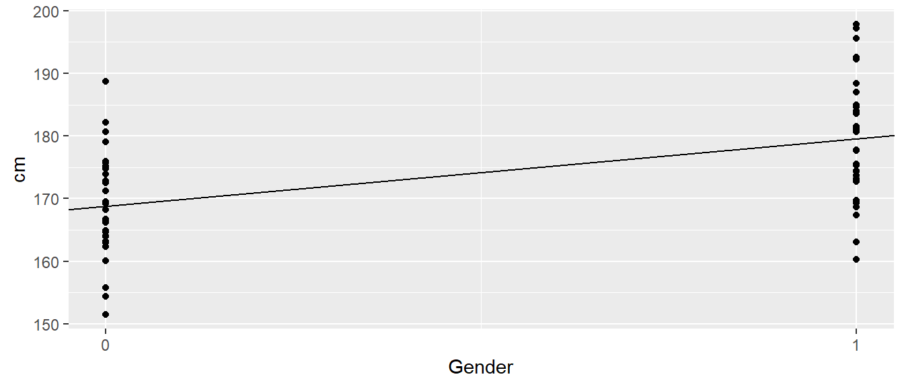
In Abbildung 6.9 ist zu erkennen, wie der Steigungskoeffizient \(\beta_0\) tatsächlich als eine Steigung zu interpretieren ist. Da die beiden Gruppen um eine \(X\)-Einheit von \(1\) voneinander entfernt liegen, ist der Unterschied zwischen den beiden Gruppenmittelwerten genau die Steigung der Gerade.
6.9.1 Verwendung von Indikatorvariablen in lm()
In lm() kann eine nominale Variable genauso wie die bisherigen kontinuierlichen Variablen verwendet werden.
mod <- lm(cm ~ gender, height)| \(\hat{\beta}\) | \(s_e\) | t | p | |
|---|---|---|---|---|
| (Intercept) | 168.783 | 1.663 | 101.477 | <0.001 |
| genderm | 10.746 | 2.352 | 4.568 | <0.001 |
lm() gibt die Faktorstufe nach dem Namen der Faktorvariable an. Im Beispiel steht genderm für Stufe m aus dem Faktor gender. Der Wert für \(\hat{\beta}_0\) entspricht genau demjenigen in Tabelle 6.10. Weiterhin, der Wert für den t-Wert für \(\beta_1 = \Delta\), ist zu beobachten, dass der Wert exakt mit t-Wert übereinstimmt, der mittels des t-Test berechnet wurde . Lediglich das Vorzeichen ist in der anderen Richtung was aber nur damit zusammenhängt welcher Gruppenmittelwert von dem anderen Gruppenmittelwert subtrahiert wird.
Sei nun noch das Konfidenzintervall für den Steigungskoeffizienten \(\beta_1\) betrachtet:
confint(mod) 2.5 % 97.5 %
(Intercept) 165.45401 172.11276
genderm 6.03713 15.45403Wieder stimmt, bis auf das Vorzeichen, das Konfidenzintervall exakt mit demjenigen des t-Test überein.
Damit lässt sich auf Basis der vorhergehenden Ausführung auch direkt nachvollziehen wie lm() intern mit nominalen Variablen umgeht. Bei der Modellevaluierung erkennt lm() gender als nominale Variable und ersetzt es durch eine Indiktaorvariable (siehe Tabelle 6.11).
| cm | gender | \(x_1\) |
|---|---|---|
| 174.40 | m | 1 |
| 177.70 | m | 1 |
| 195.59 | m | 1 |
| 160.05 | f | 0 |
| 164.92 | f | 0 |
| 154.35 | f | 0 |
lm() ersetzt gender durch die Indikatorvariable, also durch Zahlenwerte, und dann kann einfach wieder die bekannte Maschinerie des linearen Modell angeworfen werden. Als letzten Schritt nun noch eine Betrachtung des resultierenden Residuenplots (siehe Abbildung 6.10).
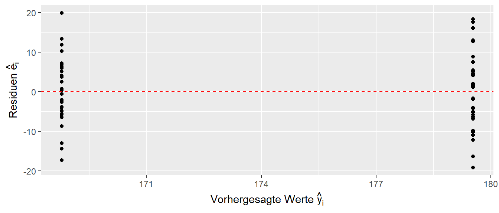
Der Plot sieht etwas speziell aus, da die Residuen nur für zwei vorhergesagte Werte \(\hat{y}_i\) angezeigt werden. Diese spezielle Form, ist letztendlich ein Ergebnis dessen, dass nur zwei verschiedene \(\hat{y}\)-Werte vorhergesagt werden.
6.10 Dummyvariablen bei mehr als zwei Faktorstufen
Nachdem ein Beispiel mit zwei Faktorstufen durchgegangen, stellt sich die Frage ob dieser Ansatz auch für mehr als zwei Faktorstufen einer nominalen Variablen möglich ist? Sei dazu, zunächst ein einfaches synthetisches Beispiel betrachtet (siehe Abbildung 6.11)
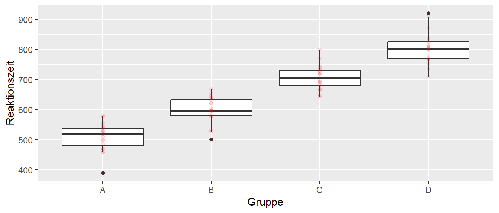
Es wurde ein Datensatz ähnlich einem Reaktionszeitexperiment erstellt, bei dem Probanden unter vier verschiedenen Konditionen \(A,B,C\) und \(D\) beobachtet wurden. Die deskriptive Daten sind Tabelle 6.12 einsehbar. Der Einfachheit halber sind die Daten so generiert, dass die Gruppenmittelwert von \(A\) nach \(D\) immer größer werden.
| Gruppe | \(\bar{y}_j\) | \(s_j\) | \(\Delta_{j-A}\) |
|---|---|---|---|
| A | 509.53 | 45.66 | |
| B | 599.68 | 43.57 | 90.15 |
| C | 706.94 | 40.49 | 197.41 |
| D | 805.09 | 52.51 | 295.56 |
Die letzten Spalte zeigt die Abweichungen der Gruppenmittelwerte der Gruppen \(B,C,D\) von der Gruppe \(A\) an. Das sollte jetzt auch schon direkt eine Möglichkeit aufzeigen, wie diese Daten in ein lineares Modell überführt werden können. Dazu wird wiederum eine Referenzgruppe festgelegt, z.B. Gruppe \(A\). Anstatt nun nur ein einzelnes \(\Delta\) zu berechnen, werden drei \(\Delta\)s eingeführt. Die \(\Delta\)s repräsentieren dabei jeweils die Abweichungen der spezifischen Faktorstufen von der Referenzstufe. Für jedes dieser \(\Delta_i\)s wird nun eine Indikatorvariable \(x_{ij}\) eingeführt. Die Indikatorvariable indiziert jeweils über die \(0\) und \(1\) die Zugehörig des \(Y_i\) Wertes zu der Gruppe. Ein lineares Modell lässt nun wie folgt formulieren:
\[\begin{equation*} y_i = \mu_A + \Delta_{B-A} x_{1i} + \Delta_{C-A} x_{2i} + \Delta_{D-A} x_{3i} + \epsilon_i \end{equation*}\]
Für die Abweichungen von der Referenzgruppe sind drei Indikatorvarialben \(x_{1i}, x_{2i}\) und \(x_{3i}\) eingeführt worden. Die Modellkoeffizienten bilden somit jeweils die Abweichungen der Mittelwerte von Gruppe \(A\) ab. Dies führt dann zu der folgenden Kodierung der Daten (siehe Tabelle 6.13).
| x1 | x2 | x3 | |
|---|---|---|---|
| A | 0 | 0 | 0 |
| B | 1 | 0 | 0 |
| C | 0 | 1 | 0 |
| D | 0 | 0 | 1 |
Wenn ein Wert \(Y_i\) aus Gruppe \(A\), der Referenzgruppe, kommt, dann werden die dire Indikatorvariablen \(X_{1i}, X_{2i}, X_{3i}\) mit den Werten \((0,0,0)\) belegt. Wenn ein Wert \(Y_i\) aus Gruppe \(B\) kommt, dann mit \((1,0,0)\) belegt usw..
Dieser Ansatz lässt sich wie folgt Verallgemeinern (siehe Tabelle 6.14).
| \(x_1\) | \(x_2\) | \(\ldots\) | \(x_{K-1}\) | |
|---|---|---|---|---|
| Referenz (\(j=1\)) | 0 | 0 | 0 | |
| \(j=2\) | 1 | 0 | \(\ldots\) | 0 |
| \(j=3\) | 0 | 1 | \(\ldots\) | 0 |
| \(j=K\) | 0 | 0 | \(\ldots\) | 1 |
Bei Integration einer nominalen Variable mit \(K\) Faktorstufen werden \(K-1\) Indikatorvariablen \(X_1, X_2, \ldots, X_{K-1}\) benötigt. Eine der Faktorstufen wird als Referenzstufe definiert. Die Indikatorvariablen \(X_1\) bis \(X_{K-1}\) kodieren dann die Abweichungen der anderen Stufen von der Referenzstufe. Diese Art der Kodierung wird in der Literatur auch als treatment Kodierung bezeichnet. Die Indikatorvariablen werden oft auch als Dummyvariablen bezeichnet
Definition 6.2 (Indikator-/Dummyvariablen ) Eine Dummyvariable, auch Indikatorvariable genannt, ist eine binäre Prädiktorvariable die nur die Werte \(0\) oder \(1\) annimmt. Mit einer Dummyvariable kann die An- bzw. Abwesenheit eines kategorialen Effekts modelliert werden.
Das lineare Modell in unserem Reaktionszeitexperiment ergibt den folgenden Modellfit (siehe Tabelle 6.15).
mod <- lm(rt ~ group, data)| \(\hat{\beta}\) | \(s_e\) | t | p | |
|---|---|---|---|---|
| (Intercept) | 509.526 | 10.235 | 49.784 | <0.001 |
| groupB | 90.150 | 14.474 | 6.228 | <0.001 |
| groupC | 197.414 | 14.474 | 13.639 | <0.001 |
| groupD | 295.561 | 14.474 | 20.420 | <0.001 |
Als Steigungskoeffizienten werden genau die Abweichungen der Mittelwerte der jeweiligen Faktorstufen von der Referenzstufe erhalten (siehe Tabelle 6.13). Zusammenfassend ermöglicht somit die Verwendung der Indikatorvarialben die Möglichkeit eine nominale Variable mit beliebig vielen Faktorstufen in einem linearen Modell abzubilden. Damit ist dann auch die Unterscheidung in ANOVA und linear Regression als überfällig anzusehen, da beide letztendlich auf dem gleichem Modell, nämlich dem linearen Modell, beruhen.
Es folgt wieder eine kurze Betrachtung des Residuenplots (siehe Abbildung 6.12).
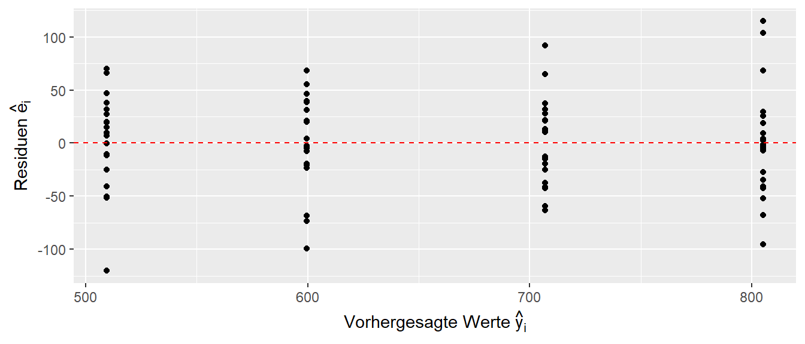
Es ist wieder zu sehen, dass nur vier verschiedene \(\hat{y}_i\) Werte vorhergesagt werden, nämlich die Mittelwerte \(\bar{y}_k\) in den jeweiligen \(K\) Gruppen. Die Residuen \(e_i\) streuen daher nur um diese vorhergesagten Werte.
In R kann die Dummy-Kodierung explizit mittels der dummy.coef()-Funktion erhalten werden.
dummy.coef(mod)Full coefficients are
(Intercept): 509.5262
group: A B C D
0.00000 90.15023 197.41364 295.560656.11 Kombination von kontinuierlichen und nominalen Prädiktorvariablen
Da durch die Verwendung von Indikatorvariablen die Unterscheidung zwischen nominalen und kontinuierlichen Variablen in der Modellierung aufgehoben wird, können beide Typen von Variablen in einem Modell integriert werden. In Abbildung 6.13 ist ein hypothetischen Zusammenhang zwischen der körperlichen Leistung dem Trainingsalter und dem Gender abgetragen.
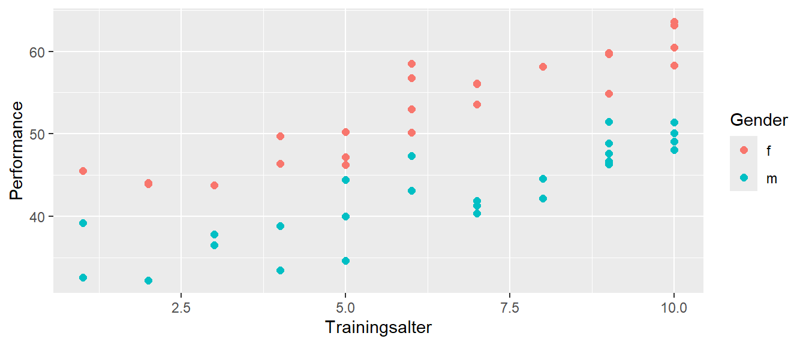
Das Trainingsalter (ta) geht wie bisher als kontinuierliche Variable in das Modell ein, während gender als nominale Variable über eine Dummyvariable modelliert wird. Weibliche Teilnehmerinnen der Studie werden als Referenzstufe festgelegt. Das resultiert dann in dem folgenden linearen Modell:
\[\begin{align*} Y_i &= \beta_{ta = 0,x_{1i}=0} + \Delta_m \cdot x_{1i} + \beta_{ta} \cdot ta + \epsilon_i \\ x_1 &= \begin{cases} 0\text{ wenn weiblich}\\ 1\text{ wenn männlich} \end{cases} \\ \end{align*}\]
Modellieren mit lm() führt dann zu:
mod <- lm(perf ~ gender_f + ta, lew)| term | estimate | std.error | statistic | p.value |
|---|---|---|---|---|
| (Intercept) | 41.181 | 1.083 | 38.024 | 0 |
| gender_fm | -10.877 | 0.805 | -13.503 | 0 |
| ta | 1.927 | 0.145 | 13.261 | 0 |
Die Variable gender ist durch lm() als Dummyvariable definiert worden und der Steigungskoeffizient \(\beta_1=\) gender_fm kodiert den mittleren Unterschied zwischen männlichen und weiblichen Studienteilnehmerinnen. Der \(Y\)-Achsenabschnitt kodiert daher die Leistung von weiblichen Teilnehmerinnen mit einem Trainingsalter von ta\(= 0\). (Warum?). Der Graph der Datenpunkte zusammen mit den resultierenden Modellgraphen der vorhergesagten \(\hat{y}_i\) zeigt an wie das Modell die Daten modelliert (siehe Abbildung 6.14).
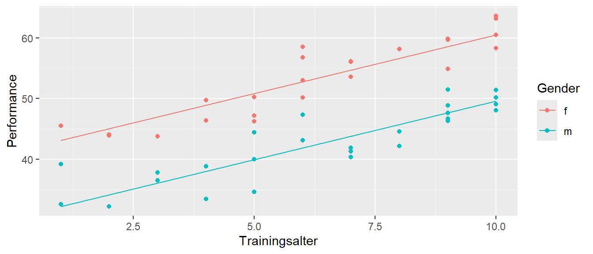
Es wurden zwei Geraden modelliert. Eine Gerade für die weiblichen und eine für die männlichen Teilnehmer. Die Geraden sind parallel zueinander und um den Wert von \(\beta_1\) gegeneinander verschoben.
Natürlich ist es auch nun möglich mit dem Indikatorvariablenansatz auch eine Interaktion zwischen kontinuierlichen und nominalen Variablen zu modellieren. Wenn die Daten zum Beispiel dem Trend in Abbildung 6.15 folgen würden.
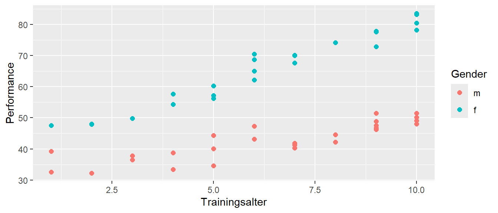
Hier ist zu sehen, dass die Zunahme der Leistung mit dem Trainingsalter nicht gleich ist in beiden gender Gruppen. Bei den männlichen Teilnehmern ist der Zuwachs mit dem Trainingsalter größer. D.h der Einfluss der Prädiktorvariable Trainingsalter hängt mit der Ausprägung der Prädiktorvariablen gender zusammen. Es liegt ein Interaktionseffekt vor. Übertragen auf ein lineares Modell könnte der Modellansatz wie folgt aussehen:
\[\begin{equation*} y_i = \beta_{ta=0,x_{1i}=0} + \Delta_m \times x_{1i} + \beta_{ta} \times ta + \beta_{ta \times gender} \times x_{1i} \times ta + \epsilon_i \end{equation*}\]
In lm() ausgedrückt:
mod <- lm(perf ~ gender_f * ta, lew)| term | estimate | std.error | statistic | p.value |
|---|---|---|---|---|
| (Intercept) | 31.354 | 1.370 | 22.891 | 0 |
| gender_ff | 8.575 | 2.010 | 4.266 | 0 |
| ta | 1.763 | 0.195 | 9.043 | 0 |
| gender_ff:ta | 2.362 | 0.290 | 8.139 | 0 |
Die gefitteten Regressionsgeraden nehmen dann die folgende Form an (siehe Abbildung 6.16).
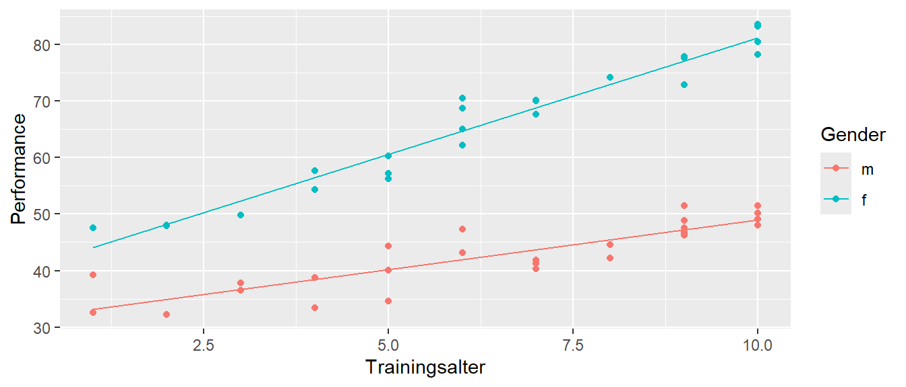
Zunächst sollen Modellkoeffizienten mit Hilfe des Graphen interpretiert werden. Dazu wird die Prädiktorvariable für das Alters ta um den Wert \(\bar{ta} = 6\) zentriert und die Modellanpassung erfolgt mittels der zentrierten Variable.
lew <- lew |> mutate(ta_c = ta - ta_cen)
mod_c <- lm(perf ~ gender_f * ta_c, lew)In Tabelle 6.18 sind die neuen Koeffizienten zu sehen. Sie unterscheiden sich nur für \(\beta_0\) und \(\beta_1\) zu den Koeffizienten von Tabelle 6.17 (Warum?).
ta_c) und Gender.
| coef | term | estimate |
|---|---|---|
| \(\beta_0\) | (Intercept) | 41.934 |
| \(\beta_1\) | gender_ff | 22.750 |
| \(\beta_2\) | ta_c | 1.763 |
| \(\beta_3\) | gender_ff:ta_c | 2.362 |
Wie sind die Modellkoeffizienten zu interpretieren? Die Referenzgruppe sind die Datenpunkte der männlichen Gruppe. Daher ist der \(Y\)-Achsenabschnitt \(\beta_0 = 41.93\) die Performance einer durchschnittlichen, männlichen Versuchsperson mit einem Trainingsalter von ta\(= 6\). Der zweite Koeffizient \(\beta_1 = 22.75\) kodiert hier den Unterschied zwischen einer männlichen und einer weiblichen Versuchsperson jeweils mit einem Trainingsalter von ta\(=6\). Der Steigungskoeffizient \(\beta_2 = 1.76\) dagegen, kodiert den Unterschied zwischen zwei männlichen Versuchspersonen, die sich um ein Trainingsjahr ta voneinander unterscheiden. Der letzte Koeffizient \(\beta_3 = 2.36\), der Interaktionskoeffizient kodiert nun den Unterschied in den Steigungen zwischen den männlichen und den weiblichen Versuchspersonen. Um den Unterschied zwischen zwei weiblichen Versuchsperson zu erhalten, die sich um ein Trainingsjahr ta voneinander Unterscheiden, müssen daher \(\beta_2\) und \(\beta_3\) miteinander addiert werden \(4.12\).
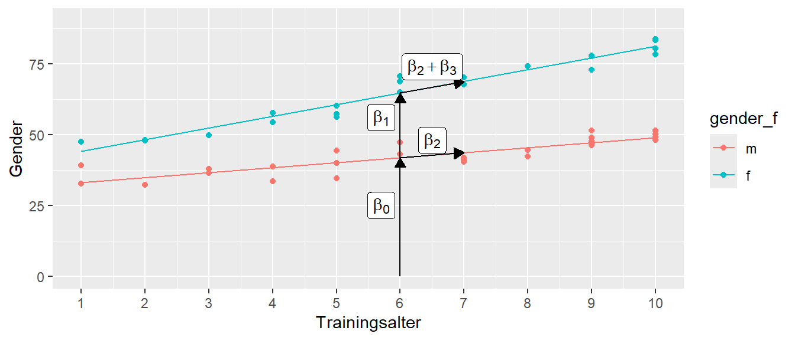
In Abbildung 6.17 sind die einzelnen Modellkoeffizienten aus Tabelle 6.17 in der Grafik miteingefügt. Die Interpretation der Werte sollte damit klarer werden.
6.12 Verschiedene Kodierschemas für die Dummy-Variablen.
In der Herleitung der Integration von nominalen Faktoren in die multiple Regression ist bisher ein bestimmtes Schema verwendet worden, wie die einzelnen Faktorstufen auf \(X\)-Variablen abgebildet werden. Dazu wurde eine Referenzstufe bestimmt, welche durch den \(Y\)-Achsenabschnitt im Modell modelliert wird und die anderen \(\beta_i\)-Koeffizienten bilden jeweils die Abweichungen der Faktorstufenmittelwerten von dieser Referenzstufe ab.
Wenn die \(\beta_i\)-Koeffizienten in einem Vektor \(\boldsymbol{\beta}\) zusammengefasst.
\[\begin{equation*} \boldsymbol{\beta} = (\beta_0, \beta_1, \ldots, \beta_K)^T \end{equation*}\]
und die Mittelwerte \(\mu_i\) der Faktorstufen \(i = 1,2,\ldots,K\) in einem Vektor \(\boldsymbol{\mu}\)
\[\begin{equation*} \boldsymbol{\mu} = (\mu_1, \mu_2, \ldots, \mu_K)^T \end{equation*}\]
Dann können die \(\beta\)-Koeffizienten im Sinne der Mittelwerte der Faktorstufen als eine Abbildung von \(\boldsymbol{\beta} \rightarrow \boldsymbol{\mu}\) aufgefasst werden. Diese Abbildung kann daher auch mit ein Symbol, beispielsweise \(\boldsymbol{B}\), abgebildet werden.
\[\begin{equation*} \boldsymbol{\mu} = \boldsymbol{B\beta} \end{equation*}\]
Tipp
Wenn ihr euch mit Matrizen auskennt, dann werdet ihr gemerkt haben, dass es hier um Grunde um eine lineare Abbildungen handelt. Wenn euch das nichts sagt, dann einfach weiterlesen.
6.12.1 Treatment-Kodierung
Die Abbildung mit einer Referenzstufe und Abweichungen von dieser Stufe, wird als treatment coding bezeichnet. In R kann diese Kodierung mit Hilfe der Funktion contr.treatment() erstellt werden, bzw. ist standardmäßig bei R für nominale Variablen eingestellt.
Im Ausdruck bezeichnen die Zeilen die \(\beta\)-Koeffizienten im multiplen Regressionsmodell, während die Spalten die Mittelwerte \(\mu_i\) der Faktorstufen \(A,B\) und \(C\) spezifizieren. Die Punkte . stehen für den Wert \(0\). Es ist zu sehen, dass in der ersten Zeile für \(\beta_0\) eine \(1\) unter \(\mu_1\) eingetragen ist, während unter \(\mu_2\) und \(\mu_3\) jeweils eine \(0\) eingetragen sind. D.h., der Koeffizient \(\beta_0\) repräsentiert den Mittelwert der Faktorstufe \(A\), der Referenzstufe. In der zweiten Zeile für \(\beta_1\) dagegen, steht unter dem Mittelwert \(\mu_A\) eine \(-1\), unter \(\mu_B\) eine 1 und unter \(\mu_C\) eine \(0\). D.h., wie schon bekannt, der Koeffizient \(\beta_1\) repräsentiert den Unterschied zwischen den Mittelwerten \(\mu_A\) und \(\mu_B\) der dazugehörenden Faktorstufen \(A\) und \(B\). Das gleiche gilt für die dritte Zeile für \(\beta_2\) für den Unterschied \(\mu_C - \mu_A\). Insgesamt, ist hier direkt die Kodierung der Faktorstufen wie sie oben hergeleitet wurde zu erkennen. Die Kodierung ist auch in der dazugehörenden Modellmatrix zu sehen welche die Funktion contr.treatment() verwendet.
set.seed(1)
height_4 <- height |> sample_n(4)
model.matrix(~gender, height_4) (Intercept) genderm
1 1 0
2 1 1
3 1 0
4 1 1
attr(,"assign")
[1] 0 1
attr(,"contrasts")
attr(,"contrasts")$gender
[1] "contr.treatment"6.12.2 Sum-to-zero Kodierung
Die Treatmentkodierung ist nicht die einzig mögliche Kodierung, sondern es geht noch zahlreiche andere bzw. es können auch eigene Abbildungen definiert werden. Ein weiteres Kodierungsschema ist die Abweichungskodierung (engl. deviation) welche auch als sum-to-zero Kodierung bezeichnet wird. In R kann dieses Schema mit der Funktion contr.sum() erzeugt werden und das resultierende Abbildungsschema sieht wie folgt aus.
Die erste Zeile ist direkt ablesbar. Der Koeffizient \(\beta_0\) stellt den Mittelwert \(\bar{\mu}\) der Stufenmittelwerte dar. Die zweite und dritte Zeile für \(\beta_1\) und \(\beta_2\) sind etwas undurchsichtiger. Die \(\beta_i\)-Koeffizienten repräsentieren jeweils die Abweichung der Stufe \(\mu_i\) vom Gesamtmittelwert \(\bar{\mu}\). Formal:
\[\begin{equation*} \beta_i = \mu_i - \bar{\mu} \quad i = 2,3,\ldots,K \end{equation*}\]
Wie resultiert daraus diese Kodierung? Sei zunächst \(\beta_1\) betrachtet. Dieser Koeffizient kodiert die Abweichung der Gruppe A vom Gesamtmittelwert \(\bar{y}\). D.h.
\[\begin{equation*} \beta_1 = \mu_A - \bar{\mu} \end{equation*}\]
Der Gesamtmittelwert \(\bar{y}\) berechnet sich nach \(\bar{y} = \frac{1}{3}\sum_{i=1}^3\mu_i\). Daraus folgt.
\[\begin{equation*} \begin{aligned} \beta_1 &= \mu_A - \bar{\mu} \\ &= \mu_A - \frac{\sum_{i=1}^3\mu_i}{3} \\ &= \mu_A - \frac{1}{3}\mu_A - \frac{1}{3}\mu_B - \frac{1}{3}\mu_C \\ &= \frac{2}{3}\mu_A - \frac{1}{3}\mu_B - \frac{1}{3}\mu_C \end{aligned} \end{equation*}\]
Es werden die Koeffizienten 2/3 -1/3 -1/3 aus dem Output erhalten. Das gleiche Schema trifft auch für \(\beta_2\) zu, der die Abweichung von Gruppe B zum Gesamtmittelwert \(\bar{y}\) kodiert. Übertragen auf das Schema im Beispiel der Reaktionszeiten ergibt sich.
mu_i <- data |> group_by(group) |> summarize(m = mean(rt))
mu_bar <- mean(data$rt)
mu_i |> add_row(group="mu_bar", m = mu_bar)# A tibble: 5 × 2
group m
<chr> <dbl>
1 A 510.
2 B 600.
3 C 707.
4 D 805.
5 mu_bar 655.Beziehungsweise für die Abweichungen der Mittelwerte \(\mu_i\) vom Gesamtmittelwert \(\bar{\mu}\).
mu_i$m - mu_bar[1] -145.78113 -55.63090 51.63251 149.77952Nun wird eine Modellanpassung mit lm() durchgeführt, wobei contr.sum() anstatt contr.treatment() verwendet werden soll. Dies kann direkt im Aufruf von lm() über den Parameter contrasts spezifiziert werden. Der Parameter erwartet eine Liste mit den Namen der nominalen Variablen zusammen mit der Kodierungsfunktion als Zeichenkette (Es gibt noch weitere Möglichkeiten).
mod_sum <- lm(rt ~ group, data, contrasts = list(group = 'contr.sum'))
coef(mod_sum)(Intercept) group1 group2 group3
655.30733 -145.78113 -55.63090 51.63251 Es ist zu sehen, dass die \(\beta\)-Koeffizienten tatsächlich den Gesamtmittelwert und die Abweichungen der Faktormittelwerte \(\mu_i\) vom Gesamtmittelwert \(\bar{\mu}\) kodieren. Es fehlt allerdings der letzte Abweichungswert. Hier kommt die Eigenschaft dieser Kodierung ins Spiel, die der Kodierung ihren Namen sum-to-zero gegeben hat. Per Konstruktion haben die Abweichungen die Eigenschaft das sie aufsummiert gleich \(0\) ergeben. Beispielweise, seien drei Wert \(1,2,3\) gegeben. Deren Mittelwert ist \(3\) und die Abweichungen der Werte vom Mittelwert sind \(-1,0,1\). Diese Abweichung aufsummiert ergeben den Wert \(0\). Diese Eigenschaft trifft immer zu wenn die Abweichungen vom Mittelwert gebildet werden, dass deren Summe gleich \(0\) ist. Dementsprechend, wie auch bei den Residuen kennengelernt, die Abweichungen von Werten von deren Mittelwert ergeben \(0\). Daher gilt:
\[\begin{equation*} \begin{aligned} & \sum_{i=1}^K \beta_i = 0 \\ \Leftrightarrow & \beta_K = -\sum_{i=1}^{K-1} \end{aligned} \end{equation*}\]
D.h. durch die Summation der Abweichungen und der Invertierung des Vorzeichens kann der letzte Abweichungswert erhalten werden. Übertragen auf das Beispiel:
-sum(coef(mod_sum)[2:4])[1] 149.7795D.h. der letzte Abweichungswert oben aus dem Output wird erhalten. Die Anwendung von contr.sum() wirkt sich entsprechend auf die Konstruktion der Modellmatrix aus. Daher unterscheiden sich die resultierenden Modellmatrizen zwischen der Treatment- und der Summ-to-Zero Kodierung. (Zur besseren Übersicht wird ein verkürzter Datensatzmit data_8 nur \(8\) Einträgen verwendet).
data_8 <- data |> sample_n(8)
model.matrix(~group, data_8) (Intercept) groupB groupC groupD
1 1 1 0 0
2 1 0 1 0
3 1 0 0 0
4 1 0 1 0
5 1 0 1 0
6 1 1 0 0
7 1 0 1 0
8 1 0 0 0
attr(,"assign")
[1] 0 1 1 1
attr(,"contrasts")
attr(,"contrasts")$group
[1] "contr.treatment"model.matrix(~group, data_8, contrasts=list(group='contr.sum')) (Intercept) group1 group2 group3
1 1 0 1 0
2 1 0 0 1
3 1 1 0 0
4 1 0 0 1
5 1 0 0 1
6 1 0 1 0
7 1 0 0 1
8 1 1 0 0
attr(,"assign")
[1] 0 1 1 1
attr(,"contrasts")
attr(,"contrasts")$group
[1] "contr.sum"Bis auf die Spalte (Intercept) unterscheiden sich die Verteilung der \(1\) und \(0\) in den Modellmatrizen entsprechend den Kodierungsschemas.
6.12.3 Differenzkodierung
Abschließend sei noch eine weitere Möglichkeit betachtet um die Faktorstufen zu kodieren, die Differenzkodierung . Bei der Differenzkodierung werden jeweils aufeinanderfolgende Stufen miteinander verglichen. In R kann dieses Kodierungsssystem mittels der Funktion contr.diff() aus dem package codingMatrices erstellen werden. Angewendet auf den Faktor f_A ergibt sich.
Der Koeffizient \(\beta_0\) ist wieder gleich dem Mittelwert aus Gruppe \(A\). Der Koeffiziente \(\beta_1\) kodiert ähnlich wie beim Treatmentkoding den Unterschied zwischen den Mittelwerten der Faktoren \(A\) und \(B\). Im Unterschied zum Treatmentkoding kodiert \(\beta_2\) dagegen den Unterschied zwischen den Mittelwerten der Faktoren \(C\) und \(B\).
6.13 Zusammenfassung
In diesem Kapitel wurde gezeigt, dass auch nominale Prädiktorvariablen ohne Probleme in das lineare Modell integrieren können. Dabei können die Variablen rein additiv oder auch als interaktive Effekte eingehen. Damit ist der Prozess um Daten zu modellieren deutlich flexibler geworden. Dabei bleibt aber immer die bekannten Rückführung auf Punkt-Steigungs-Modell erhalten.
6.14 Herleitung der Identität von t-Test und linearen Modell (optional)
Seien beide Gruppen gleich groß (\(n\)) mit \(N = n_m + n_w = 2 \times n\). Der t-Wert für \(\beta_1\) berechnet sich aus \(t = \frac{b_1}{s_b}\) mit:
\[ s_b = \sqrt{\frac{\sum_{i=1}^N (y_i - \bar{y})^2}{N-2}\frac{1}{\sum_{i=1}^N(x_i-\bar{x})^2}} \] Dadurch, das die \(x_i\) entweder gleich \(0\) oder \(1\) sind, ist \(\bar{x}=0.5\) und die Abweichungsquadrate im zweiten Term sind alle gleich \(\frac{1}{4}\).
\[ \sum_{i=1}^N(x_i - \bar{x})^2=\sum_{i=1}^N\left(x_i - \frac{1}{2}\right)^2 = \sum_{i=1}^N\frac{1}{4}=\frac{N}{4}=\frac{2n}{4}=\frac{n}{2} \]
Der ersten Term kann mit etwas Algebra und der Definition für die Stichprobenvarianz \(s^2 = \frac{1}{N-1}\sum_{i=1}^N(x_i - \bar{x})^2\) auf die gewünschte Form gebracht werden.
\[ \begin{aligned} \frac{\sum_{i=1}^N(y_i-\hat{y})^2}{N-2} &=\frac{\sum_{i=1}^n(\overbrace{y_{im} - \bar{y}_m}^{Männer})^2+\sum_{i=1}^n(\overbrace{y_{iw}-\bar{y}_w}^{Frauen})^2}{2(n-1)} \\ &=\frac{(n-1)s_m^2+(n-1)s_w^2}{2(n-1)} \\ &=\frac{s_m^2+s_w^2}{2} \end{aligned} \]
Die Herleitung für \(\beta_1 = \Delta = \mu_w - \mu_m\) ist ebenfalls relativ geradlinig wenn wir uns an den Zusammenhang zwischen \(\beta_1\) und der Kovarianz zwischen \(x\) und \(y\) erinnern. Mit \(s_x^2 = \frac{N\frac{1}{4}}{N-1} = \frac{N}{4(N-1)}\) folgt:
\[\begin{align*} b_1 &= \frac{cov(x,y)}{s_x^2} \\ &= \frac{\sum_{i=1}^N(y_i - \bar{y})(x_i - \bar{x})}{N-1} \frac{4(N-1)}{N} \\ &= 4\frac{\sum_{i=1}^n(y_{im}-\bar{y})\frac{-1}{2}+\sum(y_{iw}-\bar{y})\frac{1}{2}}{N} \\ &= \frac{4}{2}\frac{\sum_{i=1}^n(y_{iw}-\bar{y}) - \sum_{i=1}^n(y_{im}-\bar{y})}{2n} \\ &= \frac{\sum_{i=1}^n y_{iw}}{n} - \frac{n\bar{y}}{n} - \frac{\sum_{i=1}^n y_{im}}{n} + \frac{n\bar{y}}{n} \\ &= \bar{y}_w - \bar{y}_m = \Delta \end{align*}\]
Zu guter Letzt noch die Herleitung für \(\beta_0 = \mu_m\).
Mit \(b_1 = \Delta = \bar{y}_w - \bar{y}_m\): \[\begin{align*} b_0 &= \bar{y} - \Delta \times \bar{x} \\ &= \frac{\sum_{i=1}^N y_i}{N} - \Delta \times \frac{1}{2} \\ &= \frac{\sum_{i=1}^n y_{im} + \sum_{i=1}^n y_{iw}}{2n} - \frac{1}{2}(\bar{y}_w - \bar{y}_m) \\ &= \frac{1}{2}\frac{\sum_{i=1}^ny_{im}}{n} + \frac{1}{2}\frac{\sum_{i=1}^ny_{iw}}{n} - \frac{1}{2}\bar{y}_w + \frac{1}{2}\bar{y}_m \\ &= \frac{1}{2}\bar{y}_m + \frac{1}{2}\bar{y}_w - \frac{1}{2}\bar{y}_w + \frac{1}{2}\bar{y}_m \\ &= \bar{y}_m \end{align*}\]
6.15 Zum Nach- und Weiterlesen
In (Kutner u. a. 2005, p.313–319) sind die Herleitungen zur Indexkodierung etwas ausführlicher erklärt.
Bisher sind die Variablen in das multiple Regressionsmodell nur additiv eingegangen. D.h. in der Modellspezifikation sind die Prädiktorvariablen \(x_i\) immer nur mit einem \(+\) in die Formel eingegangen. Im folgenden soll nun untersucht werden, was passiert wenn die Prädiktorvariablen auch multiplikativ in das Modell eingehen. Dies führt dann zu sogenannten Interaktionseffekten.
6.16 Ein Handballbeispiel
Ausgangspunkt sei ein hypothetischen Datensatz aus dem Handball angelehnt an die Übung. Es sei ein Datensatz mit drei Datenspalten gegeben. Die Variablen sind die Wurfgeschwindigkeit, die Körpermasse und die Armspannweite. Ziel ist es, die Wurfgeschwindigkeit anhand der Körpermasse und der Armspanweite zu modellieren angelehnt an Debanne und Laffaye (2011). Zunächst, wie immer, eine Betrachtung der deskriptiven Daten (siehe Tabelle 6.19).
| Mean | Std.Dev | Min | Max | |
|---|---|---|---|---|
| Armspannweite[cm] | 184.29 | 7.72 | 169.43 | 200.74 |
| Körpermasse[kg] | 77.46 | 10.26 | 57.95 | 101.12 |
| Wurfgeschwindigkeit[m/s] | 21.85 | 2.31 | 18.50 | 29.22 |
In Tabelle 6.19 ist zunächst einmal nichts auffallendes zu sehen. Vielleicht sind die Wurfgeschwindigkeiten etwas zu niedrig für Hochleistungshandballer, aber das stört die weitere Analyse der Daten. Als nächstes erfolgt eine Betrachtung der Daten mittels von Streudiagrammen.
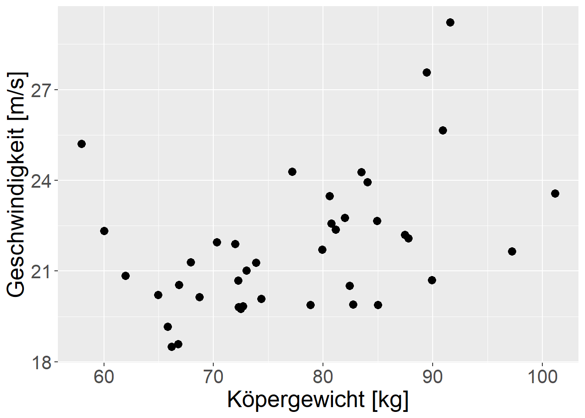
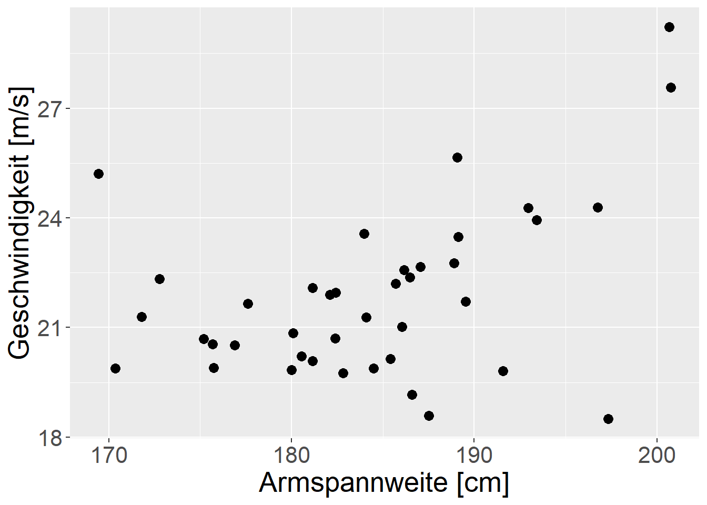
In beiden Graphen ist mit etwas gutem Willen ein positiver Zusammenhang zwischen den jeweiligen Prädiktorvariablen und der Wurfgeschwindigkeit zu identifizieren. Für das Körpergewicht in Abbildung 6.18 (a) vielleicht etwas mehr als für die Armspannweite in Abbildung 6.18 (b).
Nun sollen die Daten mittels eines linearen Modells modelliert werden.
\[\begin{equation*} Y_{i} = \beta_0 + \beta_1 \times \textrm{bm}_i + \beta_2 \times \textrm{as}_i + \epsilon_i \end{equation*}\]
Mit lm() in R Code übersetzt:
mod_1 <- lm(vel ~ body_mass + arm_span, handball)Bei Betrachtung der Modellparameter (siehe Tabelle 6.20) ist zu erkennen, dass die Steigungskoeffizienten zwar knapp statistisch signifikant sind, aber in Bezug auf die Residualvarianz bzw. den Standardfehler \(\hat{\sigma}\) eine ziemlich hohe Restunsicherheit \(\hat{\sigma} = 1.9958\) aufweisen. Dies macht die Vorhersage letztendlich unbrauchbar.
| \(\hat{\beta}\) | \(s_e\) | t | p | |
|---|---|---|---|---|
| (Intercept) | -1.768 | 7.632 | -0.232 | 0.818 |
| body_mass | 0.077 | 0.033 | 2.359 | 0.024 |
| arm_span | 0.096 | 0.044 | 2.192 | 0.035 |
| \(\hat{\sigma}\) | 1.996 |
Der \(y\)-Achsenabschnitt \(\beta_0\) im Modell macht auch ebenfalls keinen Sinn, da er, verbal übersetzt ausdrückt, dass ein Handballer mit einer Spannweite von \(0\)cm und einer Körpermasse von \(0\) Kg eine Wurfgeschwindigkeit von \(v = -1.8\)m/s erreichen würde. Um den \(y\)-Achsenabschnitt interpretierbar zu machen, ist damit wie schon so oft sinnvoll die Daten zu zentrieren. Dies ändert wieder nichts an dem Modellfit, aber der \(y\)-Achsenabschnitt bekommt dadurch einen sinnvollen Wert. Wie immer beim Zentrieren, werden von den Prädiktorvariablen die jeweiligen Mittelwert abgezogen. Übersetzt in R-Code mittels der Funktion mutate().
handball <- dplyr::mutate(handball,
body_mass_c = body_mass - mean(body_mass),
arm_span_c = arm_span - mean(arm_span))Nun wird wieder da gleiche Modell angepasst, wobei die zentrierten Variablen als Prädiktorvariablen verwendet werden.
mod_2 <- lm(vel ~ body_mass_c + arm_span_c, handball)Wie erwartet ändert dies nichts an den Modellwerten, bis auf den \(y\)-Achsenabschnitt. Der Wert von \(21.8\) ist jetzt dahingehend zu interpretieren, dass ein Handballer mit einer Armspannweite von \(184\)cm und einer Körpermasse von \(77\)Kg eine Wurfgeschwindigkeit von \(21.9\)m/s erreichen sollte (siehe Tabelle 6.19 und Tabelle 6.21).
| \(\hat{\beta}\) | \(s_e\) | t | p | |
|---|---|---|---|---|
| (Intercept) | 21.852 | 0.316 | 69.247 | <0.001 |
| body_mass_c | 0.077 | 0.033 | 2.359 | 0.024 |
| arm_span_c | 0.096 | 0.044 | 2.192 | 0.035 |
| \(\hat{\sigma}\) | 1.996 |
Nun erfolgt wie immer eine Betrachtung der Residuen \(e_i\) im zentrierten, additiven Modell (Model 2) (siehe Abbildung 6.19).
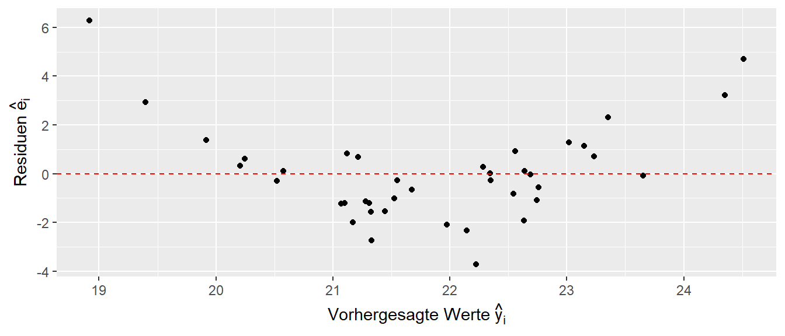
Da die Werte für kleine und große vorhergesagte Werte \(\hat{y}_i\) ganz klar ein Muster aufweisen, kann davon ausgegangen werden, das das Modell eine in den Daten vorhandene Struktur nicht zu modellieren im Stande ist. Dazu wird nun noch einmal der Einfluss der Prädiktorvariablen auf die Wurfgeschwindigkeit genauer untersucht.
Um den Zusammenhang der beiden Variablen zusammen zu untersuchen werden nun Hilfsvariablen definiert. Dazu wird eine künstliche Unterteilung der Armspannweiten und Körpermassen in drei verschiedene Kategorien vorgenommen. D.h. die Armspannweite wird in kurze, mittlere und lange Spannweiten und die Körpermasse wird in leicht, mittel und schwer unterteilt.
| arm_span_c | as_f | body_mass_c | bm_f |
|---|---|---|---|
| 1.13 | mittel | -8.75 | leicht |
| -0.21 | mittel | -3.61 | mittel |
| 16.45 | lang | 11.97 | schwer |
| -13.95 | kurz | 7.51 | schwer |
| -7.40 | kurz | 4.94 | mittel |
| 16.39 | lang | 14.11 | schwer |
In Tabelle 6.22 ist ein Ausschnitt der Daten zu sehen. Hier sind die beiden neuen Spalten die die kontinuierlichen Variablen Körpermasse und Armspannweite jeweils in eine nominale Variable abbilden abgetragen. Hier ist zu erkennen, dass größere positive Werte jeweils als lang bzw. schwer kategorisiert werden und entsprechend kleine absolute Wert als mittel und kleine negative Werte als kurz bzw. leicht. Die Geschwindigkeitsdaten können nun in einem Graphen abgebildet werden, bei dem nicht mehr die originalen, kontinuierlichen Daten, sondern nun die beiden nominalen Variablen verwendet werden (siehe Abbildung 6.20).
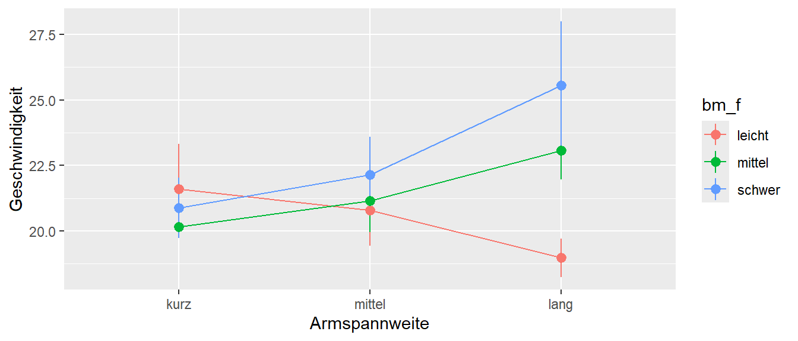
In dem Graphen zeigt sich ein interessantes Muster. Für mittel und schwere Handballer nimmt die Wurfgeschwindigkeit mit der Armspannweite zu. Dagegen ist der Trend gegensätzliche für leichte Handballer. D.h. der Einfluss der Armspannweite hängt davon ab wie schwer der Handballer ist. Der Einfluss ist in der anderen Richtung genauso, der Einfluss der Körpermasse hängt von der Armspannweite ab. Wenn sich die Effekte zweier Prädiktorvariablen gegenseitig beeinflussen, dann wird dies als Interaktionseffekts bezeichnet.
6.16.1 Kontinierlichen zu nominaler Variable in R
Um die Unterteilung einer kontinuierlichen Variablen in eine nominale Variable durchzuführen, kann in R die cut_number()-Funktion aus dem tidyverse verwendet werden. Die Parameter der Funktion sind die kontinuierliche Variable und die Anzahl der gewünschten Kategorien. Über den Parameter labels können die Bezeichnungen angepasst werden.
hb_quick <- handball |>
dplyr::mutate(
as_f = cut_number(arm_span_c, 3, labels=c('kurz','mittel','lang')),
bm_f = cut_number(body_mass_c, 3, labels=c('leicht','mittel','schwer'))
) cut_number() unterteilt den Wertebereich der Variablen so, dass die Anzahl der Datenpunkte pro Kategorie ungefähr gleich sind. Eine verwandte Funktion ist cut_interval() die die Kategoriengrenzen so bestimmt, dass die Intervall ungefähr gleich groß sind, unabhängig davon wie viele Datenpunkte in den jeweiligen Kategorien sind.
6.17 Interaktion zwischen zwei Effekten
Definition 6.3 (Interaktionseffekt) Wenn der Effekt einer unabhängigen Variable auf die abhängige Variable davon abhängt welche Ausprägung eine weitere unabhängige Variable hat, dann wird dies als ein Interaktionseffekt bezeichnet.
In Abgrenzung zu Interaktionseffekte werden die normalen Effekte als Haupteffekte bezeichnet.
Definition 6.4 (Haupteffekte ) Haupteffekte beschreiben den isolierten Einfluss einer unabhängigen Variable auf die abhängige Variable, unabhängig von anderen Variablen im Modell.
Im Rahmen eines linearen Modells, wird ein solcher Interaktionseffekt durch einen multiplikativen Term zwischen den beiden Variablen modelliert.
\[\begin{equation} Y_{i} = \beta_0 + \beta_1 \times \textrm{bodymass}_i + \beta_2 \times \textrm{armspan}_i + \beta_3 \times \textrm{bodymass}_i \times \textrm{armspan}_i + \epsilon_i \label{mlm-inter-model-ex} \end{equation}\]
In der Formel \(\eqref{mlm-inter-model-ex}\) ist neben den beiden Mdeollkoeffizienten \(\beta_1\) und \(\beta_2\) jetzt ein weitere Koeffizienten \(\beta_3\) der den Interaktionseffekt abbildet. Die \(X\)-Werte die diesem Modellkoeffizienten zugeordnet sind, berechnen sich aus Produkt aus den beiden beteiligten Prädiktorvariablen. In dem vorliegenden Handballbeispiel aus dem Produkt aus Armspannweite und Körpergewicht body_mass \(\times\) arm_span. Dies ist der Interaktionseffekt.
Warum die Multiplikation zwischen den Prädiktorvariablen sinnvoll ist, wird etwas später genauer betrachtet.
6.17.1 Interaktionseffekte in lm()
In R wird ein Interaktionseffekt in der Formel mittels eines : spezifiziert.
mod_3 <- lm(vel ~ body_mass_c + arm_span_c + body_mass_c:arm_span_c, handball) Um sich etwas Tipparbeit zu sparen, kann auch die Kurzform * benutzet werden. Hier multipliziert R die beiden beteiligten Variablen selbst aus.
mod_3 <- lm(vel ~ body_mass_c * arm_span_c, handball) D.h. die Funktion lm() multipliziert Terme der Form A*B in A + B + A:B aus.
Angewendet auf das Handballbeispiel folgt daraus die folgende Modellanpassung (siehe Tabelle 6.23)
| \(\hat{\beta}\) | \(s_e\) | t | p | |
|---|---|---|---|---|
| (Intercept) | 21.346 | 0.143 | 149.296 | <0.001 |
| body_mass_c | 0.119 | 0.015 | 8.133 | <0.001 |
| arm_span_c | 0.083 | 0.019 | 4.380 | <0.001 |
| body_mass_c:arm_span_c | 0.021 | 0.002 | 12.633 | <0.001 |
| \(\hat{\sigma}\) | 0.868 |
Bei Betrachtung der Residualvarianz \(\hat{\sigma}\) ist zu beobachten, dass sich der halbiert hat. D.h das Interaktionsmodell scheint deutlich präziser den Zusammenhang zwischen den Prädiktorvariablen und der abhängigen Variablen abbilden zu können, als dies bei dem rein additiven Modell der Fall war. Zusätzlich haben sich die Standardfehler der beiden Steigungskoeffizienten für die Haupteffekte deutlich verringert (vgl. Tabelle 6.21). Beide Koeffizienten sind nun statistisch signifikant geworden. Der neu dazugekommene Koeffizient für den Interaktionseffekt ist ebenfalls statistisch signifikant mit einem sehr kleinen Standardfehler. D.h die Hinzunahme des Interaktionseffekts hat in dem vorliegenden Beispiel dazu geführt, dass der Modellfit deutlich verbessert wurde. Im nächsten Schritt soll nun die Wirkung des Interaktionseffekt noch einmal deutlicher herausgearbeitet werden.
6.18 Koeffizienten im Interaktionsmodell verstehen
Im weiteren wird genauer betrachtet wie die Modellkoeffizienten und insbesondere der Interaktionseffekt \(\beta_3\) interpretiert werden kann. Dazu werden zunächst die Vorhersagen \(\hat{y}_i\) unter den beiden Modellen Modell 2, dem additiven Modell, und Modell 3, dem Interaktionsmodell, miteinander verglichen. Zur Erinnerung, beide Modell arbeiten mit zentrierten Prädiktorvariablen.
Um einen besseren Überblick über die Vorhersagen zu bekommen, ist es hilfreich die Daten zu vereinfachen indem nur drei verschiedene Werte für die Armspannweite \(as = \{-10,0,10\}\) cm. D.h. einen hypothetischen Handballer mit der Durchschnittsspannweite, sowie jeweils einen mit \(10\) cm kürzerer bzw. \(10\) cm längerer Spannweite. Der gleiche Ansatz wird auf für die Körpermasse gewählt, indem hier ebenfalls drei verschiedenen Körpermassen \(bm = \{-2,0,2\}\) Kg verwendet werden. D.h. eine Person mit durchschnittlicher Körpermasse und jeweils eine Person mit \(-2\) und \(2\) Kg leichter bzw. schwerer. Dies führt zu der folgenden Kombination von Prädiktorvariablen (siehe Tabelle 6.24).
| Armspannweite | Körpermasse |
|---|---|
| -10 | -2 |
| 0 | -2 |
| 10 | -2 |
| -10 | 0 |
| 0 | 0 |
| 10 | 0 |
| -10 | 2 |
| 0 | 2 |
| 10 | 2 |
Für diese Daten wird nun die vorhergesagten Wert \(\hat{y}_i\) unter beiden Modellen berechnet und graphisch dargestellt (siehe Abbildung 6.21). Diese Art der Darstellung des Zusammenhangs zwischen einer Prädiktorvariable und der abhängigen Variable während weitere Prädiktorvariablen konstant gehalten werden, wird als einfache Steigungen bezeichnet.
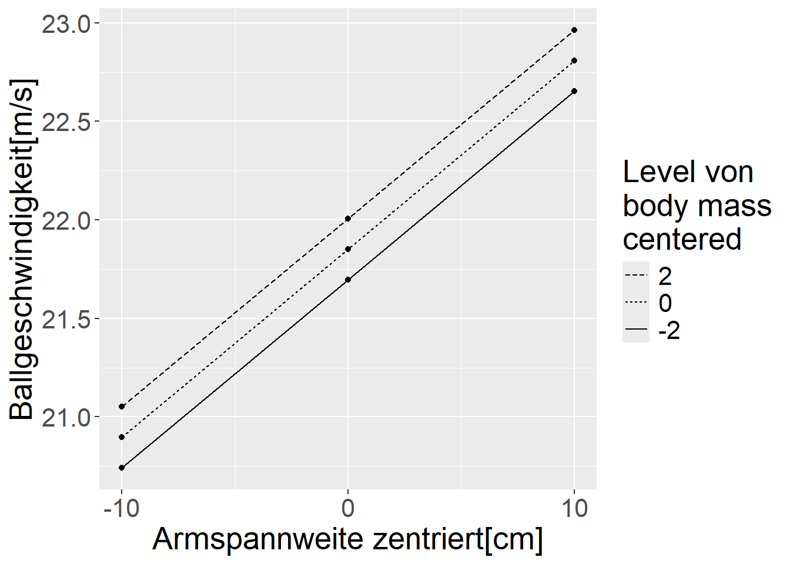

In Abbildung 6.21 (a) ist zu sehen, dass die vorhergesagten Werte \(\hat{y}_i\) für verschiedene Körpermassen jeweils nur parallel gegeneinander verschoben sind. Da die Unterschiede zwischen den Körpermassen sich um jeweils \(2\) Kg unterscheiden, sind für einen gegebenen Wert der Armspannweite die Abstände zwischen den Linien konstant um den Faktor \(\beta_{\text{body mass}} \times 2\). D.h. egal welchen Wert die Armspannweite einnimmt, der Zusammenhang der Körpermasse mit der Wurfgeschwindigkeit bleibt gleich.
Unter Modell 3 fallen die einfachen Steigung dagegen vollkommen anders aus (siehe Abbildung 6.21 (b)). Hier kann beobachtet werden, dass die Unterschiede zwischen den verschiedenen Armspannweiten davon abhängen wie schwer ein Handballer ist. Während bei kleinen Armspannweiten die Unterschiede eher gering ausfallen, werden die Unterschiede zwischen den drei gewählten Gewichtskategorien umso größer je größer die Armspannweite wird. Es handelt sich eben um einen Interaktionseffekt. Es ist weiter sehen, dass bei einer Armspannweite von \(-5\) cm es sogar zum schneiden der einfachen Steigungen kommt. In diesem Fall führt dies dazu, dass sich die Anordnung der Wurfgeschwindigkeiten in Abhängigkeit von der Körpermasse umkehrt. Während bei Armspannweite von \(-10\)cm eine leichtere Person die höchste Wurfgeschwindigkeit produziert, ist dies bei einer Armspannweite von \(+10\)cm ein schwerere Person (in diesem Vergleich immer in Bezug auf die gewählten Wertebereiche).
Generell ist ein Interaktionseffekt dabei immer symmetrisch und hängt nicht davon ab, welche Variable als \(X\)-Variable in dem Graphen verwendet wird. Wenn die Änderung der einen Variable \(A\) davon abhängt welchen Wert die andere Variable \(B\) hat, dann gilt dies auch anderes herum für die Veränderung von Variable \(B\) in Abhängigkeit vom Wert der Variablen \(A\). Um diese Symmetrie zu verdeutlichen sind in Abbildung 6.22 beide Möglichkeiten der Darstellung der einfachen Effekte nebeneinander dargestellt.
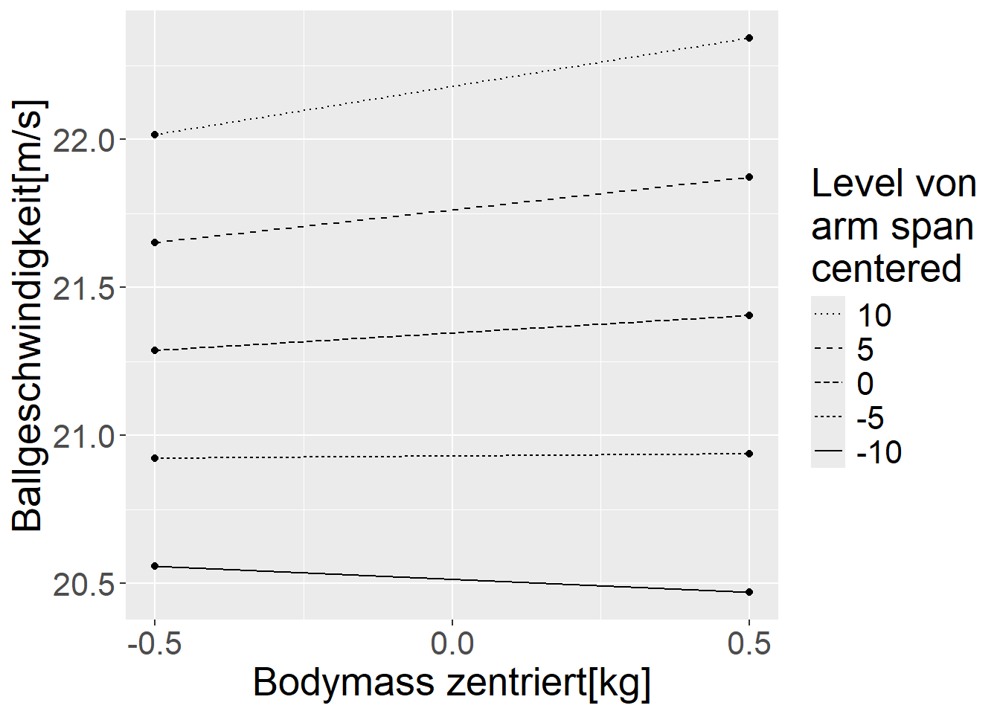
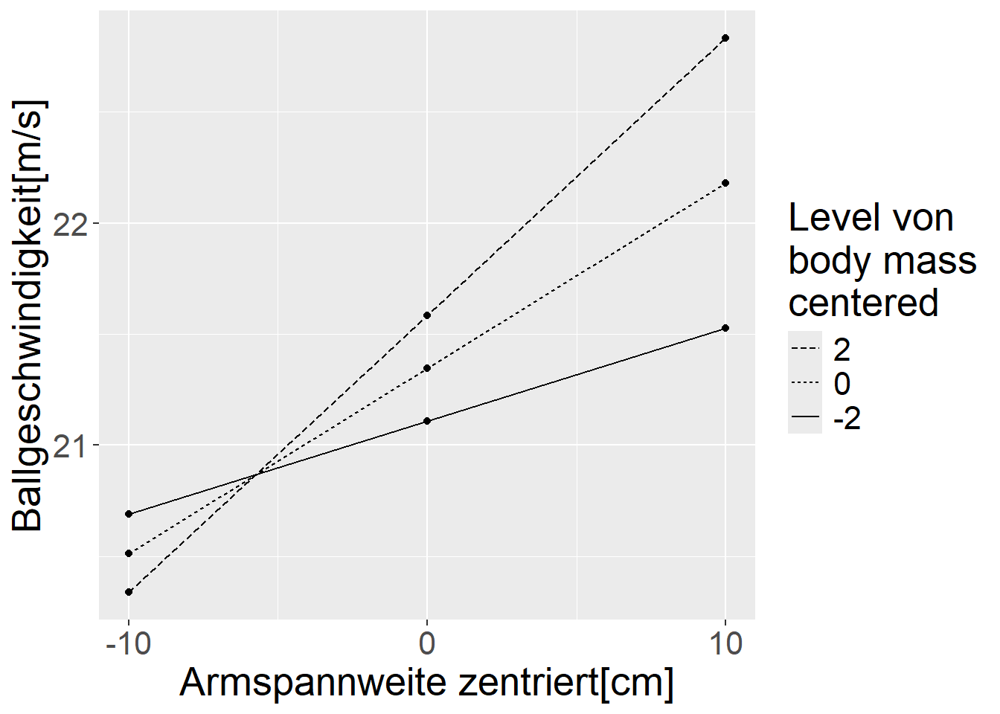
In beiden Fällen ist ein Interaktionseffekt zu beobachten. Die genau Ausprägung der einfachen Steigungen ist dabei abhängig von Varianzen der Prädiktorvariablen, d.h. wie stark die Werte streuen, bzw. von de gewählten Einheiten.
6.18.1 Interaktionseffekte deep-dive
Als nächstes Versuchen soll untersucht werden, warum die Multiplikation der an der Interaktion beteiligten Prädiktorvariablen sinnvoll ist um die Interpretation der Koeffizienten in Tabelle 6.23 numerisch besser bedeuten zu können. In Abbildung 6.23 sind noch einmal die einfachen Steigungen für die Körpermasse in Abhängigkeit von der Armspannweite dargestellt.
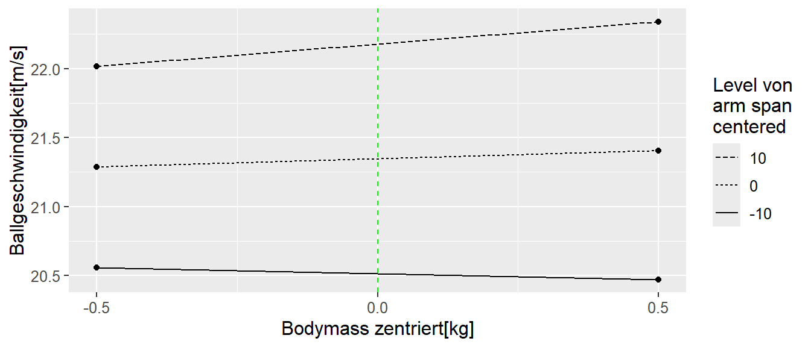
Wie bereits beschrieben, es ist zu beobachten, dass der Zusammenhang zwischen der Wurfgeschwindigkeit und der Körpermasse von der gewählten Armspannweite abhängt. Um die Bedeutung der Koeffizienten in einen Interaktionsmodell besser zu verstehen, werden nun die einfachen Steiungen für die drei abgebildeten Graphen berechnet. D.h. es wird dreimal eine einfache lineare Regression berechnet. In Tabelle 6.25 sind die dazugehörenden Steigungskoeffizienten für die einfachen Steigungen abgebildet. \(\beta_0\) ist der \(y\)-Achsenabschnitt für die jeweiligen Armspannweiten und \(\beta_1\) die jeweiligen Steigungen.
| Armspannweite (zentriert) | \(\beta_0\) | \(\beta_1\) |
|---|---|---|
| 10 | 22.178 | 0.326 |
| 0 | 21.346 | 0.119 |
| -10 | 20.514 | -0.088 |
| \(\beta\) | |
|---|---|
(Intercept) |
21.346 |
bm_c |
0.119 |
as_c |
0.083 |
bm_c:as_c |
0.021 |
Entsprechend den Graphen in Abbildung 6.23 ist der Steigungskoeffizient für \(\beta_1\) für die Armspannweiten \(0\) und \(10\) positive, während er bei der Armspannweite \(-10\) negativ ist. Ein Vergleich dieser Wert mit denjenigen aus dem Interaktionsmodell in Tabelle 6.25 (b) zeigt, dass die Werte unterschiedlich sind. Um nun nachzuvollziehen, dass die Werte in Tabelle 6.25 (a) aus denjenigen in Tabelle 6.25 (b) resultieren sind ein paar Vereinfachungen notwendig.
Sei zunächst einmal die zentrierte Körpermasse auf \(\text{bodymass} = 0\). D.h. in Abbildung 6.23 bewegen wir uns entlang der eingezeichneten, grünen Linie. Wenn ein Handballer nun ebenfalls eine durchschnittliche Armspannweite hat, also \(\text{armspan} = 0\) dann wird eine Wurfgeschwindigkeit von \(v = 21.346\) vorhergesagt. D.h. \(\text{bodymass} = 0\) und \(\text{armspan} = 0\) also genau der \(Y\)-Achsenabschnitt in Modell 3. Sei nun ein Handballer mit durschnittlicher Körpermasse aber einer Armspannweite von \(+10\) cm also \(cm = 10\) gegeben. In Abbildung 6.23 würde das einer vertikalen Beweung entlang der grünen Linie nach oben entsprechen. In Modellkoeffizienten gesprochen bedeutet dies:
\[\begin{align*} \hat{y} &= 21.346 + 0.119 \cdot 0 + 0.083 \cdot 10 + 0.021 \cdot 0 \cdot 10 \\ &= 21.346 + 0.83 = 22.175 \end{align*}\]
Der Wert ist, bis auf ein paar Rundungsfehler, dem \(Y\)-Achsenabschnitt \(\beta_0\) in Tabelle 6.25 (a) unter Armspannweite \(=10\) gleich, \(22.175 \approx 22.178\). Das gleiche Prinzip kann ebenfalls angewendet werden, wenn die Armspannweite um \(10\)cm verkürzt wird. D.h. in Abbildung 6.23 entlang der grünen Linie nach unten. In Modellkoeffizienten resultiert dies in:
\[\begin{align*} \hat{y} &= 21.346 + 0.119 \cdot 0 + 0.083 \cdot -10 + 0.021 \cdot 0 \cdot 10 \\ &= 21.346 - 0.83 = 20.516 \end{align*}\]
Dies entspricht wieder, bis auf Rundungsfehler, dem \(Y\)-Achsenabschnitt in Tabelle 6.25 (a) unter dem Eintrag für Armspannweite \(-10\) (\(20.516 \approx 20.514\)).
Sei nun ein Handballer mit einer Armspannweite von \(as = 0\) gegeben. Dann können die Koeffizienten in Tabelle 6.25 (b) direkt abgelesen werden. Die Wurfgeschwindigkeit verändert sich somit mit der Körpermasse über den Koeffizienten \(\beta_{bm_c} = 0.119\). Eingesetzt in die Modellgleichung führt dies zu:
\[\begin{align*} \hat{y} &= 21.346 + 0.119 \cdot bm_c + 0.083 \cdot 0 + 0.021 \cdot bm_c \cdot 0 \\ &= 21.346 + 0.119 \cdot bm_c \end{align*}\]
Als nächstes wird der Fall betrachtet, wenn beide Prädiktorvariablen \(as\neq 0\) und \(bm\neq 0\) sind. Sei zum Beispiel \(as = 10\). Wie verändert sich der vorhergesagte Wert \(\hat{y}_i\) mit der Körpermasse \(bm_c\). \(bm_c\) bleibt offen um die Steigungsgleichung zu bestimmen. Wieder eingesetzt in das Modell ergibt dies:
\[\begin{align*} \hat{y} &= 21.346 + 0.119 \cdot bm_c + 0.083 \cdot 10 + 0.021 \cdot bm_c \cdot 10 \\ &= 21.346 + 0.83 + 0.119 \cdot bm_c + 0.21 \cdot bm_c \\ &= 22.175 + (0.119 + 0.21) \cdot bm_c \\ &= 22.175 + 0.329 \cdot bm_c \end{align*}\]
Bis auf ein paar Rundungsfehler, werden die Steigungskoeffizienten der Geradengleichung in Tabelle 6.25 (a) für den Eintrag as = 10 erhalten.
In Bezug auf die Interpretation der Modellkoeffizienten ergibt sich somit das folgende Bild. Der Modellkoeffizient \(\beta_0\) beschreibt den \(y\)-Achsenabschnitt wenn alle Prädiktorvariablen den Wert \(0\) annehmen. Wenn einer der beiden Prädiktorvariablen \(0\) ist, dann beschreibt der andere Modellkoeffizient die Verschiebung des \(Y\)-Achsenabschnitts der einfachen Gerade deren Steigung durch den Modellkoeffizienten beschrieben wird. Wenn beide Prädiktorvariablen \(neq 0\) sind, dann kommt erst der Interaktionskoeffizient ins Spiel und führt zu einer Veränderung der einfachen Steigung in Abhängigkeit von der Kombination der Prädiktorvariablen.
Übungsaufgabe 6.1 Versuche anhand der Koeffizienten in Tabelle 6.25 (b) die einfache Steigungsgleichung für \(as_c = -10\) zu erhalten.
Zusammenfassend lässt sich die folgende Interpretation der Koeffizienten in einem Interaktionsmodell mit zwei Prädiktorvariablen formulieren.
\[\begin{equation*} Y = b_0 + b_1 \cdot x_1 + b_2 \cdot x_2 + b_3 \cdot x_1 \cdot x_2 + \epsilon_i \end{equation*}\]
- \(b_0\): (y-Achsenabschnitt) der Wert von \(\hat{Y}\) wenn \(x_1 = 0\) und \(x_2 = 0\) gilt.
- \(b_1\): Der Unterschied in \(\hat{Y}\) wenn zwei Objekte sich in \(x_1\) um eine Einheit unterscheiden und \(x_2 = 0\) ist (Haupteffekt).
- \(b_2\): Der Unterschied in \(\hat{Y}\) wenn zwei Objekte sich in \(x_2\) um eine Einheit unterscheiden und \(x_1 = 0\) ist (Haupteffekt).
- \(b_3\): (Interaktionskoeffizient) Die Veränderung des Effekts von \(x_1\) auf \(\hat{Y}\) wenn \(x_2\) um eine Einheit größer wird bzw. genau andersherum für \(x_2\).
6.19 Die Form der Modellfläche unter dem additiven und der Interaktionsmodell
Abschließend nun eine Betrachtung der resultierenden Flächen unter additiven und dem Interaktionsmodell. In Abbildung 6.24 sind die gefitteten Flächen und die Residuen unter den beiden Modellen abgebildet.
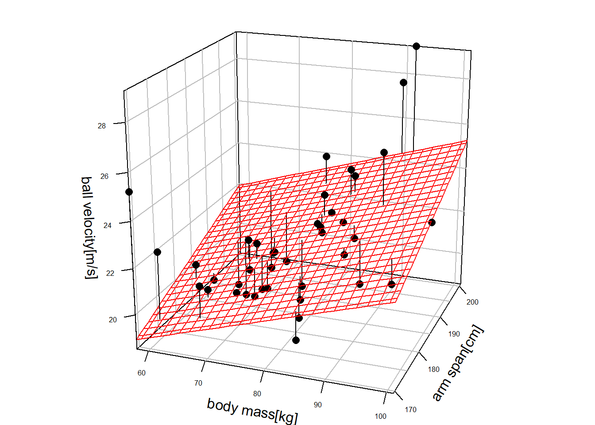
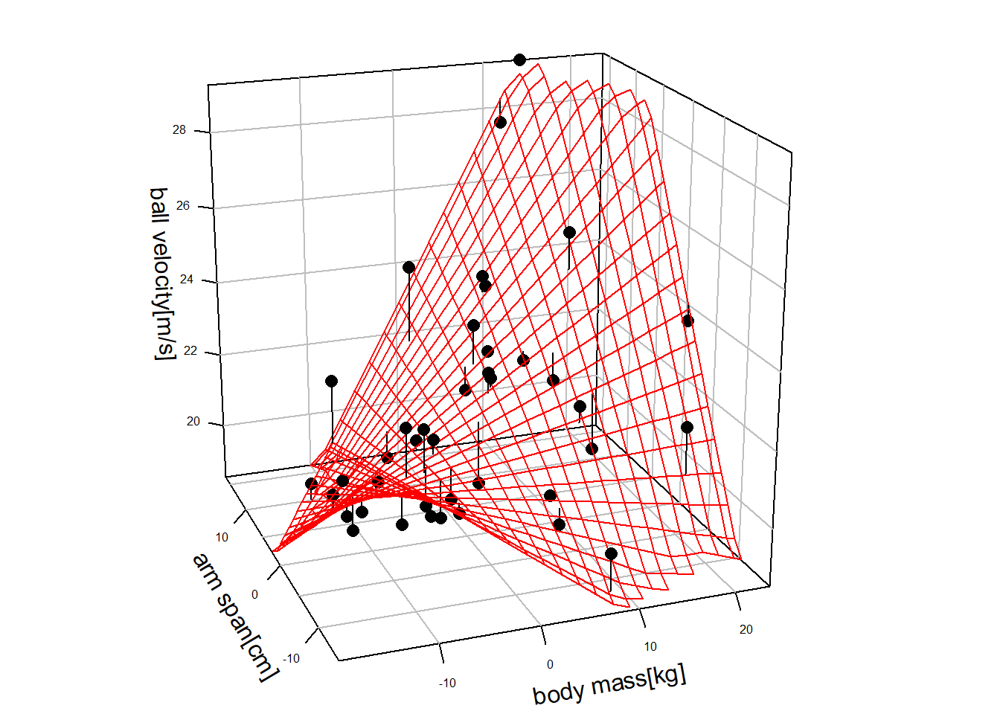
Unter dem Interaktionsmodell ist die gefittete Fläche keine einfache Ebene mehr, sondern durch die Hinzunahme des Interaktionseffekts ähnelt die Fläche nun eher einem Sattel. D.h. durch die Integration von Interaktionseffekte zwischen den Prädiktorvariablen können deutlich komplizierte Zusammenhänge zwischen den Prädiktorvariablen und der abhängigen Variable modellieren werden. Die Komplexität erhöht sich entsprechend mit der Zahl der Prädiktorvariablen und den möglichen Interaktion zwischen diesen.
Zurückkommend auf unser Ausgangsbeispiel mit den Handballdaten, kann entsprechend die Auswirkung auf den die Modellanpassung analysiert werden. Dazu ein Vergleich der beiden Residuenplots (siehe Abbildung 6.25).
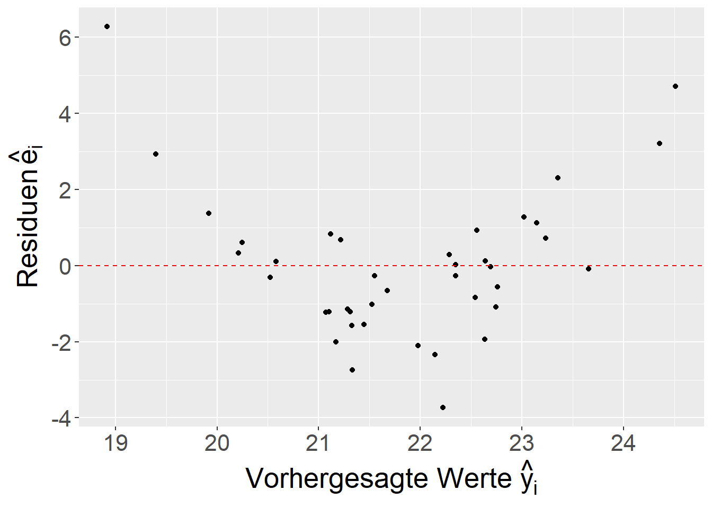
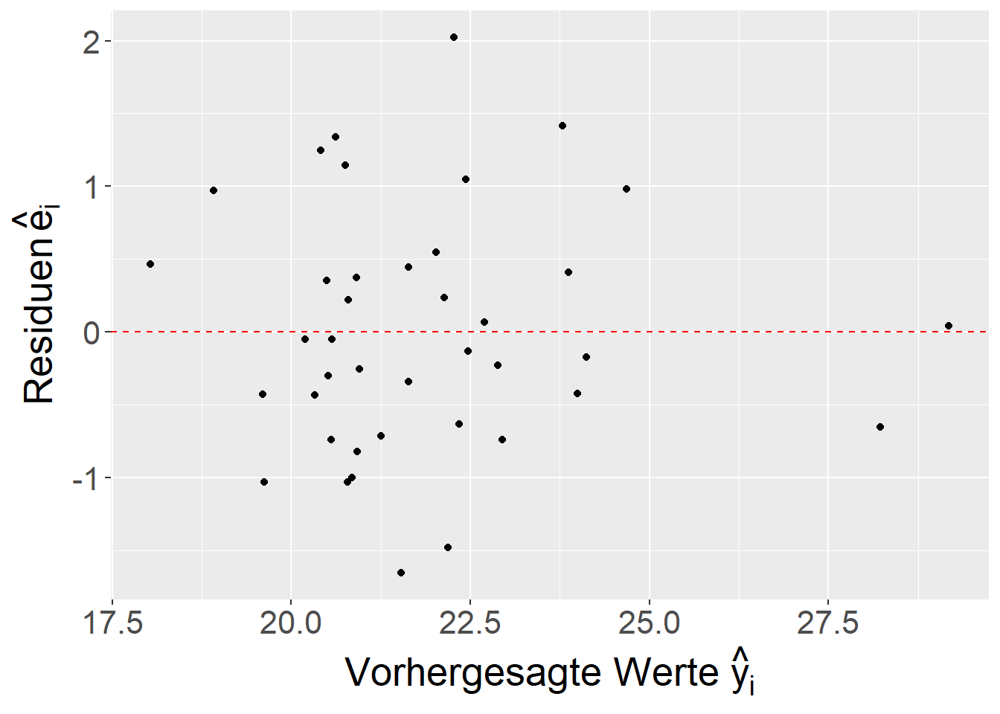
Es ist zu beobachten, dass in Abbildung 6.25 (b) die Struktur, die im additiven Modell in Abbildung 6.25 (a) für die Residuen , nun nicht mehr vorhanden ist. Ähnlich verhält sich auch der Vergleich für die die qq-Plots der Residuen (siehe Abbildung 6.26).
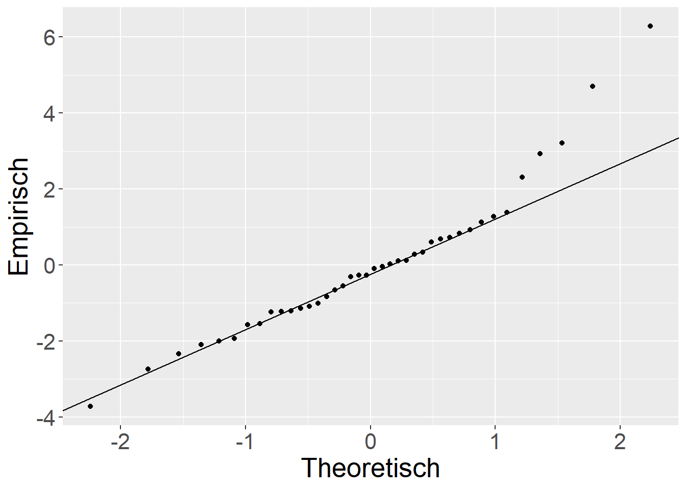
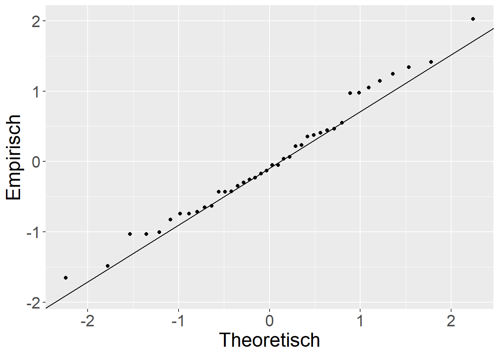
Dazu nun ein Vergleich der weiteren Performanceparameter.
| Name | Model | R2 | R2_adjusted | RMSE | Sigma |
|---|---|---|---|---|---|
| mod_2 | lm | 0.291 | 0.252 | 1.919 | 1.996 |
| mod_3 | lm | 0.869 | 0.859 | 0.824 | 0.868 |
Insgesamt sind durch die Hinzunahme des Interaktionseffekt nicht nur die Standardfehler und der Residualfehler verringert worden, sondern das Modell fittet die Daten auch deutlich besser als das additive Modell. Dies ist natürlich nicht immer der Fall, sondern hängt eng mit den jeweiligen Daten zusammen.
6.20 Modelmatrix in R unter dem Interaktionsmodell
Um die Modellmatrix bei Interaktionsmodell sei wieder der einfache Datensatz aus dem letzten Kapitel genommen.
df <- tibble(
y = c(1,3,2.5,7),
x_1 = 1:4,
x_2= c(11,11,14,13)
)Die Anwendung der Funktion model.matrix() mit einem Interaktionsterm zwischen x_1 und x_2 führt zu folgender Darstellung.
model.matrix(~x_1 + x_2 + x_1:x_2, df) (Intercept) x_1 x_2 x_1:x_2
1 1 1 11 11
2 1 2 11 22
3 1 3 14 42
4 1 4 13 52
attr(,"assign")
[1] 0 1 2 3Es ist zu beobachten, dass eine weitere Spalte für den Interaktionsterm zur Modellmatrize hinzugefügt wurde. Die Werte sind dabei genau das Ergebnis der Multiplikation zwischen den Werten von x_1 und x_2.
Wie oben schon erwähnt führt ~x_1 * x_2 zum gleichem Ergebnis.
model.matrix(~x_1 * x_2, df) (Intercept) x_1 x_2 x_1:x_2
1 1 1 11 11
2 1 2 11 22
3 1 3 14 42
4 1 4 13 52
attr(,"assign")
[1] 0 1 2 36.21 Take-away
Das Interaktionsmodell:
- Erhöht die Flexibilität des linearen Modells.
- Bei Interaktionen hängt der Einfluss der einzelnen Variablen immer von den Werten der anderen Variablen ab.
- Achtung: Interpretation der einfachen Haupteffekte oft nicht mehr möglich bzw. sinnvoll!
6.22 Einfluss der Zentrierung auf die Koeffizienten im Interaktionsmodell (advanced)
Schauen wir uns noch zum Abschluss noch an, was algebraisch mit dem Koeffizienten im Interaktionsmodell passiert wenn die Prädiktorvariablen \(x_{ki}\)s zentriert werden.
\[\begin{align*} y_i &= \beta_0 + \beta_1 (x_{1i} - \bar{x}_1) + \beta_2 (x_{2i} - \bar{x}_2) + \beta_3 (x_{1i}-\bar{x}_1)(x_{2i}-\bar{x}_2) \\ &= \beta_0 + \beta_1 x_{1i} - \beta_1 \bar{x}_1 + \beta_2 x_{2i} - \beta_2 \bar{x}_2 + \beta_3 x_{1i} x_{2i} - \beta_3 x_{1i} \bar{x}_2 - \beta_3 \bar{x}_1 x_{2i} + \beta_3 \bar{x}_1 \bar{x}_2 \\ &= \beta_0 - \beta_1 \bar{x}_1 - \beta_2 \bar{x}_2 + \beta_3 \bar{x}_1 \bar{x}_2 + \beta_1 x_{1i}- \beta_3 \bar{x}_2 x_{1i} + \beta_2 x_{2i} - \beta_3 \bar{x}_1 x_{2i} + \beta_3 x_{1i} x_{2i} \\ &= \underbrace{\beta_0 - \beta_1 \bar{x}_1 - \beta_2 \bar{x}_2 + \beta_3 \bar{x}_1 \bar{x}_2}_{\beta_0} + \underbrace{(\beta_1 - \beta_3 \bar{x}_2) x_{1i}}_{\beta_1 x_{1i}} + \underbrace{(\beta_2 - \beta_3 \bar{x}_1) x_{2i}}_{\beta_2 x_{2i}} + \beta_3 x_{1i} x_{2i} \end{align*}\]
Wir sehen, dass der Interaktionsterm tatsächlich gleich ist unter beiden Modellen. Dagegen unterscheiden sich die Koeffizienten der Haupteffekte deutlich voneinander. Der Übergang vom zentrierten zum unzentrierten Modell ist dabei nicht immer gleich, sondern hängt von den jeweiligen Werten dern Daten ab.
6.23 Zum Nacharbeiten
Kutner u. a. (2005, p.306–313)
Im folgenden wird das lineare Modell noch erweitert indem nun auch Zusammenhänge abgebildet werden können, die nicht linear sind, sondern auch Zusammenhänge zwischen \(X\) und \(Y\) die kurvenförmig sind. Beispielsweise kann zwischen \(X\) und \(Y\) ein parabelförmiger Zusammenhang wie \(Y = X^2\) bestehen. Tatsächlich lassen sich solche Zusammenhänge problemlos in ein lineares Modell integrieren, indem Potenzen der Prädiktorvariablen gebildet werden. Dies wird im ersten Teil behandelt. Im Anschluss wird noch einmal die Frage untersucht welche Prädiktorvariablen in das Modell integriert werden sollen und wie verschiedene Modell miteinander verglichen werden können.
6.24 Multiple Regression und Polynome
In der Praxis kann es durchaus vorkommen, dass der Zusammenhang zwischen den Prädiktorvariablen \(X\) und der abhängigen Variable \(Y\) nicht linear ist, sondern eher kurvenförmig. Beispielsweise ist in Pickett u. a. (2021) der Zusammenhang zwischen der Ermüdung und der Wettkampfleistung untersucht worden und der folgende Zusammenhang zwischen den beiden Variablen wurde beobachtet (Abbildung 6.27).
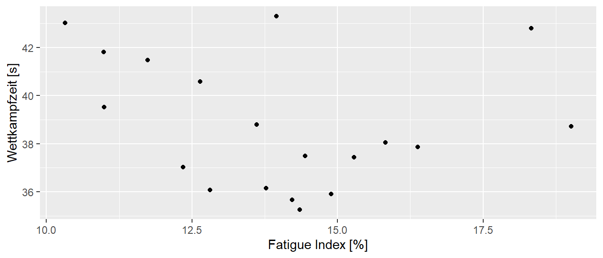
Aus physiologischen Überlegungen heraus, haben die Autoren den Zusammenhang zwischen den beiden Variablen nicht nur mittels einer einfachen linearen Regression modelliert, sondern es wurde auch ein Polynom 2. Grades an die Daten angepasst (siehe Mathematische Grundlagen zu Polynomen). Dies resultierte in dem folgenden Modell (siehe Abbildung 6.28).
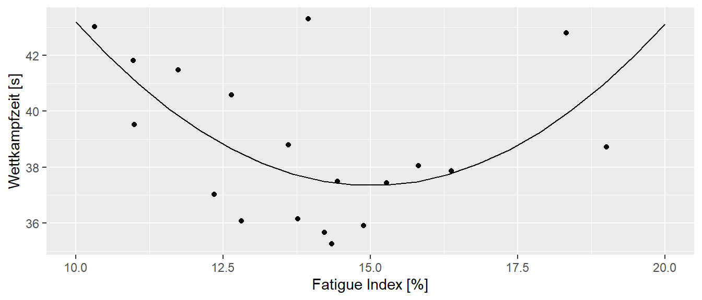
Das entsprechende Modell hat dann die Form:
\[ y_i = 89.8 - 6.99 \cdot x_i + 0.23 \cdot x_i^2 \]
Die Prädiktorvariable fatigue ist nicht nur als linearer Faktor in das Modell eingegangen, sondern die Variable wurde quadriert und diese quadrierten Terme wurden in das Modell als weitere Prädiktorvariable aufgenommen. Dies erlaubt die Modellierung eines parabelförmigen Zusammenhangs zwischen der Prädiktorvariablen fatigue und der abhängigen Variablen Zeit.
Der Ansatz, dass nicht nur die Variable sondern auch ihre Potenzen im Modell verwendet werden, kann dabei beliebig erweitert werden. Die Grenze ist abhängig von der Anzahl der vorhandenen Datenpunkten. Bei einem Datensatz mit \(N\) Datenpunkten hat das höchst mögliche Polynom den Grad \(N-1\). Dies ist natürlich in den seltensten Fällen sinnvoll, da beispielsweise im Beispiel mit \(N = 19\) Datenpunkten die Interpretation eines Polynoms vom Grade \(18\) relativ schwierig wird. Dieser Umstand wird später im Skript noch einmal aufgegriffen. Wenn eine Prädiktorvariablen derart transformiert in das Modell eingeht, dann wird oft von einer sogenannten Polynomregression gesprochen, wobei diese Begrifflichkeit nicht universell verwendet wird.
Die Polynomregression stellt somit eine Erweiterung der einfachen linearen Regression dar. Während die lineare Regression versucht, eine gerade Linie bzw. eine flache Ebene an die Daten anzupassen, erlaubt die Polynomregression gebogene Kurven bzw. Oberflächen an die Daten anzupassen. D.h. der Effekt ist ähnlich dessen der schon bei den Interaktionseffekten beobachtet wurde. Dies erlaubt wieder komplexere Zusammenhänge zwischen den Prädiktorvariablen \(X\) und einer Kriteriumsvariable \(Y\) zu modellieren. Entsprechend nutzt die Polynomregression anstatt nur \(Y = \beta_0 + \beta_1 X\) , Modelle in Form von:
\[ Y = \beta_0 + \beta_1 X + \beta_2 X^2 + \beta_3 X^3 + \dots + \beta_d X^d + \epsilon \]
Die Variable \(d\) bestimmt den Polynomgrad des Modells. Je höher der Grad, desto flexibler ist das Modell. Üblicherweise werden die niedrigeren Grade bis zum höchsten Polynomgrad im Modell beibehalten auch wenn diese nicht statistisch signifikant sind (Peixoto 1987, 1990). Nur in begründeten Ausnahmefällen, beispielsweise aus theoretischen Überlegungen, sollten niedrigere Grade ausgeschlossen werden. Ein einfaches Beispiel wäre ein rein parabelförmiger Zusammenhang. Formal:
\[ y_i = \beta_0 + \beta_1 x_i + \beta_2 x_i^2 + \epsilon_i \]
In diesem Fall könnte beispielsweise auch das folgende Modell an die Daten angepasst werden.
\[ y_i = \beta_2 x_i^2 + \epsilon_i \]
Inhaltlich würde dies bedeuten, dass aus theoretischen Überlegungen davon auszugehen ist, dass die Parabel durch den Koordinatenpunkt \((0,0)\) geht und dass in diesem Fall die Steigung im Punkte \((0,0), \beta_1 = 0\) ist. Dies kann in bestimmten Fällen tatsächlich plausibel sein, wird aber in den meisten Fällen nur sehr schwer inhaltlich zu begründen sein. Daher ist praktisch immer die Anpassung des vollständigen Modell sinnvoller. Weiterhin ist es meistens auch sinnvoll ein einfacheres Modell gegenüber einen Modell mit hohem Polynomgrad zu bevorzugen. Aus numerischen Gründen ist es oft auch sinnvoll die Prädiktorvariablen zu zentrieren (Shacham und Brauner 1997; Bradley und Srivastava 1979).
Insgesamt ergibt sich durch die Erweiterungen die im Rahmen des multiplen Regression besprochen wurden dementsprechend ein extrem flexibler Ansatz um Zusammenhänge von Prädiktorvariablen mit einer abhängigen Kriteriumsvariable zu modellieren. Durch Interaktionseffekte, nominale Variablen und Polynome kann ein große Klasse von Zusammenhängen innerhalb des gleichen Ansatzes einheitlich behandelt werden.
6.24.1 Polynomregression in R
In R gibt es verschiedene Methoden eine Polynomregression durchzuführen, die aber alle mittels lm() durchgeführt werden. Im einfachsten Falle werden die höheren Polynome von \(X\) direkt im tibble generiert. Seien zum Beispiel die folgenden Daten gegeben.
set.seed(1)
df <- tibble(
x = runif(10, -1, 1),
y = 4 + 2*x + 0.5*x**2 + rnorm(10)
)Dann wäre eine mögliche Lösung zunächst die Polynome von \(X\) direkt im Datensatz zu generieren und anschließend entsprechend in lm() in der Formel zu verwenden.
df_add <- df |> mutate(x2 = x**2)
mod_1 <- lm(y ~ x + x2, df_add)
summary(mod_1)
Call:
lm(formula = y ~ x + x2, data = df_add)
Residuals:
Min 1Q Median 3Q Max
-1.7030 -0.4729 -0.1269 0.7497 1.3360
Coefficients:
Estimate Std. Error t value Pr(>|t|)
(Intercept) 3.3648 0.5182 6.493 0.000336 ***
x 1.9716 0.5585 3.530 0.009600 **
x2 2.4626 1.1188 2.201 0.063635 .
---
Signif. codes: 0 '***' 0.001 '**' 0.01 '*' 0.05 '.' 0.1 ' ' 1
Residual standard error: 1.028 on 7 degrees of freedom
Multiple R-squared: 0.7601, Adjusted R-squared: 0.6916
F-statistic: 11.09 on 2 and 7 DF, p-value: 0.006758Eine andere Möglichkeit ist ohne die Variablen vorher zu generieren, sondern direkt in lm() mittels der I()-Funktion. Somit wird das Polynom direkt beim Funktionsaufruf generiert.
mod_2 <- lm(y ~ x + I(x**2), df)
summary(mod_2)
Call:
lm(formula = y ~ x + I(x^2), data = df)
Residuals:
Min 1Q Median 3Q Max
-1.7030 -0.4729 -0.1269 0.7497 1.3360
Coefficients:
Estimate Std. Error t value Pr(>|t|)
(Intercept) 3.3648 0.5182 6.493 0.000336 ***
x 1.9716 0.5585 3.530 0.009600 **
I(x^2) 2.4626 1.1188 2.201 0.063635 .
---
Signif. codes: 0 '***' 0.001 '**' 0.01 '*' 0.05 '.' 0.1 ' ' 1
Residual standard error: 1.028 on 7 degrees of freedom
Multiple R-squared: 0.7601, Adjusted R-squared: 0.6916
F-statistic: 11.09 on 2 and 7 DF, p-value: 0.006758Eine weitere Möglichkeit besteht mittels der Funktion poly() im Formelaufruf von lm(). Für die Funktion poly() muss dann der Parameter degree angegeben werden um den Grad des Polynoms zu bestimmen. Dazu noch der Parameter raw = TRUE wenn keine orthogonalen Polynome erstellt werden sollen. Orthogonale Polynome haben den Vorteil, dass die Polynome voneinander unabhängig sind und keine Multikollinearitäten entstehen. Eine weitere Besprechung führt allerdings hier etwas zu weit.
mod_3 <- lm(y ~ poly(x, degree=2, raw = TRUE), df)
summary(mod_3)
Call:
lm(formula = y ~ poly(x, degree = 2, raw = TRUE), data = df)
Residuals:
Min 1Q Median 3Q Max
-1.7030 -0.4729 -0.1269 0.7497 1.3360
Coefficients:
Estimate Std. Error t value Pr(>|t|)
(Intercept) 3.3648 0.5182 6.493 0.000336 ***
poly(x, degree = 2, raw = TRUE)1 1.9716 0.5585 3.530 0.009600 **
poly(x, degree = 2, raw = TRUE)2 2.4626 1.1188 2.201 0.063635 .
---
Signif. codes: 0 '***' 0.001 '**' 0.01 '*' 0.05 '.' 0.1 ' ' 1
Residual standard error: 1.028 on 7 degrees of freedom
Multiple R-squared: 0.7601, Adjusted R-squared: 0.6916
F-statistic: 11.09 on 2 and 7 DF, p-value: 0.006758Ein Vergleich der verschiedenen Outputs zeigt, dass alle drei Wege zum gleichen Ergebnis führen.
6.25 Vorhersage versus Inferenz
Regressionsmodelle können je nach Zielsetzung sehr unterschiedliche Zwecke erfüllen. Insbesondere sollte zwischen Modellen deren eine Ziel es ist eine Vorhersage zu treffen und Modellen zur Inferenz unterschieden werden. D.h. es kommt darauf an, was mit dem Modell erreicht werden soll. Bei der Vorhersage ist von primären Interesse, wie gut das Modell neue, unbekannte Werte der Zielvariable prognostizieren kann. Ob die einzelnen Einflussgrößen (Prädiktoren) statistisch signifikant sind oder wie genau ihr Zusammenhang zur Zielgröße aussieht, ist dabei eher zweitrangig. Dagegen steht bei der Inferenz die Erklärung im Vordergrund. Welche Variablen haben einen Effekt, wie stark ist dieser und ist der Zusammenhang statistisch belegbar ist sind Fragestellung die hier das Hauptinteresse bilden (Breiman 2001).
In einem medizinischen Zusammenhang könnte beispielsweise ein Regressionsmodell verwendet werden, um vorherzusagen, wie hoch das Risiko eines Patienten für eine bestimmte Krankheit ist. Dazu wird ein Modell basierend auf den Prädiktorvariablen Alter, Gewicht, Blutdruck und möglichen weiteren Faktoren erstellt. Ein Modell zur Vorhersage würde hier möglicherweise viele Prädiktoren einbeziehen um die Risikoabschätzung möglichst genau vorherzusagen. Ein inferenzorientiertes Modell hingegen würde gezielt untersuchen, ob z.B. der Blutdruck statistisch signifikant mit dem Krankheitsrisiko zusammenhängt, mit dem Ziel, möglichst eine kausale Interpretation zu finden und beispielsweise klinischer Empfehlungen abzuleiten. D.h. bei der Inferenz ist die Interpretierbarkeit der Prädiktorvariablen von Bedeutung. Somit spielen auch Effekt wie Kollinearitäten eine bedeutsamere Rolle. Bei der Vorhersage ist dieses Problem dagegen möglicherweise von geringerer Bedeutung so lange die Vorhersagequalität nicht beeinträchtigt wird. In beiden Fällen ist dabei die Herleitung eines wahren Modells nicht eineindeutig. Ist das Modell wahr, dass zu besseren Vorhersagen führt, oder dasjenige, dass vor dem theoretischen Hintergrund eine Interpretation zulässt. Es wird hier auch von der Multiplizität der Modelle gesprochen (Breiman 2001; Carlin und Moreno-Betancur 2023).
6.26 Modellbewertung
Im Weiteren, sei ein Vorhersagefokus gewählt. Eine zentrale Aufgabe bei der Erstellung eines Modells um Vorhersagen zu treffen ist die Modellbewertung. Die zentrale Frage ist dabei: “Wie gut ist das Modell in der Lage Daten vorherzusagen?” Insbesondere die Frage wie gut die Vorhersage des Modells ist, für Datenpunkte die es bisher noch nicht gesehen hat. In diesem Zusammenhang bedeutet gesehen, Datenpunkte die für die Erstellung des Modell verwendet wurden. D.h. die Aufgabe besteht darin, die Modellgüte zu bewerten, für Datenpunkte die eigentlich noch gar nicht vorhanden sind. Wenn ein Prädiktion für einen solchen potential beobachtbaren Wert getätigt wird, wie groß ist der zu erwartenden Fehler. Ein Stück weit ähnlich der Interpretation des Standardschätzfehlers. Im Rahmen der einfachen linearen Regression wurden bereits die beiden Parameter der Root-Mean-Square Fehler (\(RMSE\)) \(\hat{sigma}^2\), der Standardschätzfehler, und der Determinationskoeffizienten \(R^2\) behandelt. Im Weiteren wird zunächst \(RMSE\) bzw. ohne Wurzel also der \(MSE\) verwendet. Formal handelt es sich dabei um die gemittelte Summe der quadrierten Residuen.
\[ MSE = \frac{1}{N}\sum_{i=1}^N (\hat{y}_i - y_i)^2 \]
Allgemein, umso kleiner der \(MSE\) wird, umso besser kann das Modell die Daten vorhersagen. Daher erscheint es zunächst sinnvoll, dass Modell so zu wählen, dass die Daten möglichst perfekt abgebildet werden können. Allerdings ist zu bedenken, dass die Daten sich normalerweise aus zwei Komponenten zusammensetzen. Dem tatsächlichen Zusammenhang zwischen \(X\) und \(Y\) und noch einem zusätzlichen Rauschanteil. In den bisherigen Betrachtungen wurde dieser Rauschanteil bzw. zufällige Fehler immer mit Hilfe von \(\sigma_i\) formalisiert. Allgemein, ohne Betrachtung der exakten funktionalen Beschreibung, kann der Zusammenhang zwischen \(X\) und \(Y\) daher wie folgt dargestellt werden.
\[ Y = f(X) + \epsilon \]
Diese Schreibweise soll noch einmal betonten, dass ein funktionaler Zusammenhang zwischen \(Y\) und \(X\) besteht, formal \(f(X)\) und dass der beobachtete Wert aber noch eine zusätzliche zufällige Komponente \(\epsilon\) beinhaltet.
Was nun passieren kann, ist dass ein Modell gewählt wird, das die beobachteten Daten perfekt abbildet. D.h. für jeden \(X\) wird genau der beobachtete \(Y\)-Wert vorhergesagt, formal \(\hat{y}_i = y_i\). Die Daten sind aber mit Rauschen bzw. zufälligen Fehlern behaftet. Wenn das Modell nun die Daten perfekt nachbildet, dann wird ebenfalls der Rauschanteil abgebildet der aber eigentlich nicht berücksichtigt werden sollte. Dies führt dann dazu, das das Modell wenn es einen neuen Datenpunkt vorhersagen soll fehlerhafte Vorhersagewerten produziert. Dass Modell ist nicht in der Lage, zwischen dem systematischen Teil und dem Rauschteil zu unterschieden. Der Fachbegriff dafür nennt sich Überanpasung oder geläufiger englisch overfitting. Andersherum kann auch der gegenteilige Effekt auftreten, dass Modell kann unterkomplex sein, was ebenfalls dazu führt, das das Modell nicht in der Lage ist gute Vorhersage zu treffen. Hier wird von einer Unteranpassung bzw. underfitting gesprochen. Das folgende Beispiel stellt diese beiden Effekte da.
Angenommen der folgende DPG liegt den beobachteten Daten zugrunde.
\[ Y = 3 + 1.5 \cdot X^3 + \epsilon \]
Dabei soll der Rauschanteil \(\epsilon\) einer Standardnormalverteilung \(\Phi\) folgen. Es wurden die folgenden \(N = 7\) Datenpunkte generiert (siehe Abbildung 6.29).
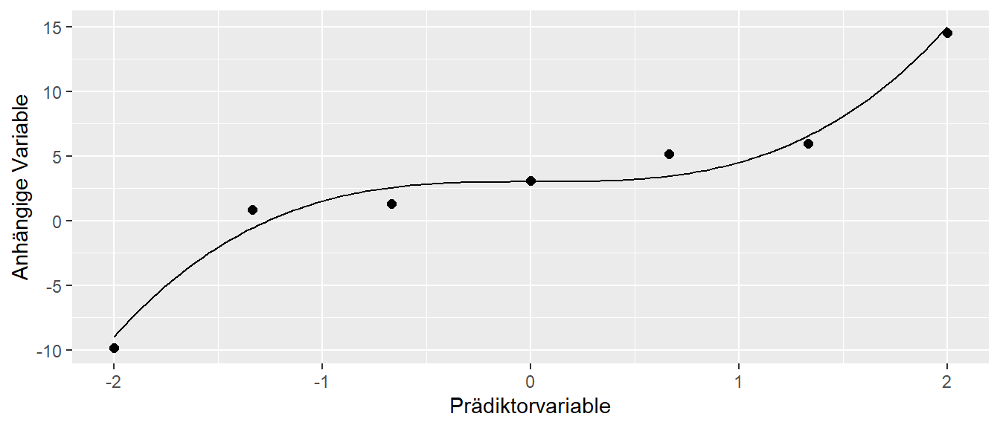
Nun werden drei verschiedene Modelle an die Daten gefittet.
\[ \begin{aligned} m_u: Y &= \beta_0 + \beta_1 X \\ m_f: Y &= \beta_0 + \beta_1 X^3 \\ m_o: Y &= \beta_0 + \beta_1 X + \beta_2 X^2 + \ldots + \beta_6 X^6 \end{aligned} \]
Das Modell \(m_u\) ist ein einfaches lineares Regressionsmodell, während \(m_f\) und \(m_o\) Polynome sind. \(m_f\) ist dabei ein Polynom dritten Grades, dass dem tatsächlichen DPG entspricht während \(m_o\) ein Polynom \(6.\) Grades ist. \(m_o\) ist somit deutlich komplexer als der tatsächliche DPG. Wenn nun diese drei Modelle an die Daten angepasst werden, resultieren daraus die folgenden Graphen.
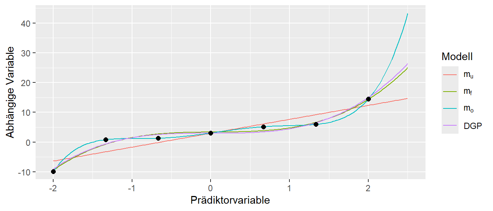
Es ist zu sehen, das das Modell \(m_u\) nur sehr schlecht in der Lage ist, den beobachteten Datenpunkten \(y_i\) bzw. dem tatsächlichen DPG zu folgen. Das Modell kann nur eine Gerade generieren und diese ist nicht ausreichend um den DGP nachzubilden. Wie erwartet ist das Modell \(m_f\) dagegen sehr gut in der Lage den tatsächlichen DPG anhand der Daten zu reproduzieren. Dabei ist ist zu beobachten, das das Modell nicht perfekt durch die beobachteten Datenpunkte geht. D.h. das Modell ist in der Lage den systematischen und den Fehlerteil in den Daten voneinander zu trennen. Insbesondere wenn die Kurven rechts außerhalb des Bereichs der Daten verglichen werden, ist klar zu erkennen, dass nur das Modell \(m_f\) dem tatsächlichen DPG nachbildet. Dabei ist hier auch ein leichter Unterschied zu erkennen, der daraus folgt, dass eben keine perfekten Information anhand der Datenpunkt zur Verfügung standen. Das Modell \(m_o\) dagegen ist zwar in der Lage die beobachteten Daten perfekt abzubilden. Die Kurve geht genau durch alle Punkte hindurch aber weicht dadurch auch vom DGP ab. Dies ist wieder besonders stark im rechten Teil, außerhalb der Datenpunkte, zu beobachten. Zusammengefasst ist es also wichtig ein Modell zu verwenden, das der Komplexität des DGPs entspricht damit es weder zu einer Über- noch zu einer Unteranpassung kommt.
Aus diesen Betrachtungen ergeben sich nun die folgenden Definitionen.
Definition 6.5 (Überanpassung (over-fitting) ) Eine Überanpassung liegt vor, wenn ein Modell die Details und das Rauschen in den Trainingsdaten in einem Maße erlernt, das seine Fähigkeit zur Generalisierung auf neue, ungesehene Daten beeinträchtigt. Das Modell wird zu komplex und passt sich zu sehr an die Trainingsdaten an, statt an den zugrunde liegenden datenerzeugenden Prozess.
Definition 6.6 (Unteranpassung (under-ftting) ) Eine Unteranpassung liegt vor, wenn ein Modell zu eine zu geringe Komplexität aufweise, um den zugrunde liegende datengeneriereden Prozess zu erlernen. Das Modell lernt nicht effektiv aus den Trainingsdaten, was zu einer schlechten Leistung führt.
Prinzipiell ist es schwierig zu entscheiden ob eine Über- oder Unteranpassung vorliegt. Wie bereits im vorhergehenden Kapitel zu Modellhierarchien wird der Standardschätzfehler immer kleiner umso mehr Prädiktorvariablen in das Modell integriert werden, wenn das Modell immer komplexer wird. Dazu kommen noch die vorgestellten Möglichkeiten von Interaktionseffekten und Polynomen dazu. Im Falle des Beispiels, mit \(m_u\), wo ein Polynom 6. Grades gefittet wurde, sind die beobachteten Daten perfekt abgebildet worden und die Interpretation von overfitting war nur möglich weil der DGP bekannt war. Um dennoch eine Abschätzung treffen zu können wie gut das Modell generalisiert, also für Datenpunkte funktioniert die noch nicht bekannt ist wird in der Praxis ein sogenannter Validierungsansatz verwendet.
6.27 Validierungsansatz
Wenn ein Modell zur Prädiktion erstellt werden soll, dann ist das primäre Ziel die Zielvariable mit Hilfe der Prädiktoren möglichst präzise vorherzusagen. Dazu ist es notwendig die Generalisierbarkeit des Modells abschätzen zu können. Es reicht nicht zu wissen wie gut das Modell die zur Modellanpassung verwendeten Daten vorhersagt, sondern es sollte ein Einschätzung gemacht werden wie gut neue Daten vorhergesagt werden können. Ein Ansatz dieses Problem zu lösen besteht darin eine Partitionierung, eine Unterteilung, der verfügbaren Daten in verschiedene Teilmengen vorzunehmen.
Unter der Partitionierung wird der Datensatz in einen Trainings- und einen Testdatensatz unterteilt. Das Modell wird dann zunächst mit Hilfe der Trainingsdaten erstellt. Die Testdaten spielen bei der Erstellung des Modells hingegen keine Rolle und werden zurückgehalten. Nachdem das Modell erstellt wurde, werden dann die Trainingsdaten verwendet, um zu überprüfen, wie gut das Modell neue, unbekannte Daten abbildet. Dadurch kann beurteilt werden, ob das Modell gut generalisiert. Die Aufteilung der Daten hilft daher zu entscheiden bzw. zu bewerten wir gut das Modell den DGP in der Lage ist abzubilden. Entsprechend der Unterteilungen kann ein Testfehler und ein Trainingsfehler für das Modell bestimmt werden. Der Trainingsfehler unterscheidet sich häufig deutlich von Testfehler und is meist deutlich kleiner.
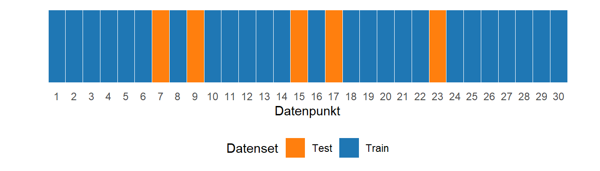
In Abbildung 6.31 ist der Validierungsansatz schematisch anhand eines Beispiels mit \(N = 30\) Datenpunkten dargestellt. Die Datenpunkte werden zufällig nach einem bestimmten Verhältnis in Test- und Trainingsdatensatz unterteilt. Ein typisches Verhältnis ist \(80/20\), mit \(80\)% im Trainingsdatensatz.
Definition 6.7 (Trainingsfehler ) Der Trainingsfehler ist der durchschnittliche Fehler, der entsteht, wenn ein Modell auf den zum Training genutzten Daten angewendet wird.
Definition 6.8 (Testfehler ) Der Testfehler ist der durchschnittliche Fehler, der entsteht, wenn Modell verwendet wird, um die Kriteriumsvariable für eine neue Beobachtung vorherzusagen. Eine neue Beobachtung ist ein Datenpunkt, der nicht zum Training des Modells verwendet wurde.
Der Validierungsansatz vor allem im Bereich der Informatik entwickelt wurde und wird dort generell verwendet, wenn Methoden des maschinellen Lernens (engl. machine learning) bewertet werden sollen. Das algemeine lineare Modell ist fällt dabei in die Klasse der machine learning Modelle ähnlich wie dies für Neuronale Netze und weitere Verfahren der Fall ist.
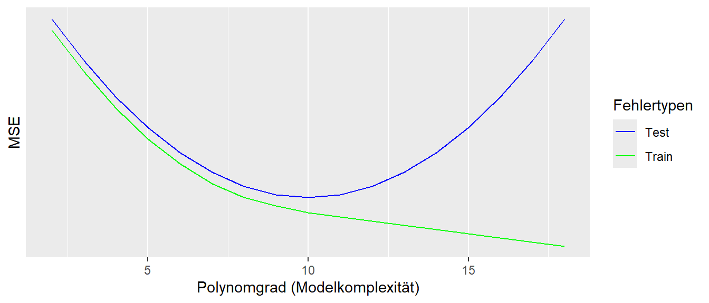
In Abbildung 6.32 ist ein stilisierter Zusammenhang zwischen dem Test- und dem Trainingsfehler in Abhängigkeit von der Modellkomplexität abgetragen. Es ist zu erkennen, dass der Trainingsfehler immer niedriger als der Testfehler ist und mit zunehmender Modellkomplexität immer weiter abnimmt. Das beruht auf dem Effekt der schon im Zusammenhang mit Modellhierarchien besprochen wurde, dass die Hinzunahme von zusätzlichen Variablen, selbst wenn diese keinen Zusammenhang mit \(Y\) besitzen, die Modellanpassung mindestens gleich gut bleibt. Die wichtige Einsicht ist allerdings der Zusammenhang des Testfehlers mit der Modellkomplexität. Hier ist ebenfalls zunächst eine Abnahme des Fehler zu beobachten bis zum erreichen eines Minimums. Danach nimmt ab einer bestimmten Modellkomplexität der Testfehler wieder zu. Dieser Verlauf beruht darauf, das das Modell zunächst zu wenig Komplexität besitzt und entsprechend eine Unteranpassung stattfindet. Mit der Erhöhung der Modellkomplexität erreicht das Modell einen Punkt, an dem die Komplexität derjenigen des DGPs entspricht. Nimmt nun die Komplexität noch weiter zu, kommt es dann allerdings zu einer Überanpassung. D.h. das Modell wird immer spezifischer auf die Trainingsdaten trainiert bzw. das Modell fängt an auch das Rauschen in den Daten aufzunehmen. Dadurch verliert das Modell zunehmend die Fähigkeit zur Generalisierbarkeit. Mit dem Validierungsansatz ist es somit möglich den Bereich der optimalen Modellkomplexität abzuschätzen. Ehrlicherweise sollte allerdings erwähnt werden, dass in der Praxis die Kurven nicht immer diesen Verlauf zeigen, sondern dies sehr stark von den Modell, den Daten und dem Rauschen in den Daten abhängt.
Die Aufteilung der Daten in Trainings- und Test- bzw. Validierungsdatensatz bringt einen inhärenten Kompromiss mit sich. Eine größere Menge an Trainingsdaten könnte potenziell die Genauigkeit des Modells auf diesen Daten verbessern. Gleichzeitig kann eine kleinere Validierungsmenge zu einer weniger zuverlässigen Einschätzung der Generalisierungsfähigkeit führen. Es ist daher ein grundlegendes Dilemma, dass die Menge an Daten, die zum Trainieren des Modells verwendet wird, dessen Fähigkeit beeinflusst, komplexe Muster zu erlernen und auf neue Daten anzuwenden. Ist der Validierungsdatensatz zu klein, sind die darauf berechneten Leistungsmetriken möglicherweise zu verrauscht oder nicht repräsentativ für die tatsächliche Fähigkeit des Modells, auf völlig neue Daten zu generalisieren. Dieses Problem sollte bei der Anwendung des Validierungsdatensatzansatzes berücksichtigt werden und kann letztendlich auch nur wieder durch Domänenexpertise abgewägt werden.
Ein weiteres Problem ergibt sich, wenn der Validierungsdatensatz schlecht gewählt wurde. Dies bedeutet, dass der Trainingsdatensatz möglicherweise nicht genau die Verteilung zukünftiger, unbekannter Daten widerspiegelt. Dies kann in der Folge zu irreführenden, meist zu optimischen, Leistungsschätzungen des Modells führen. Enthält der Validierungsdatensatz beispielsweise Datenpunkte, die sich erheblich von den Daten unterscheiden, auf die das Modell in realen Anwendungen angewendet wird, so ist die Leistung des Modells auf dem Validierungsdatensatz möglicherweise kein guter Indikator für die tatsächliche Leistungsfähigkeit. Wenn beispielsweise die Trainingsdaten hauptsächlich Daten einer bestimmten demografischen Gruppe enthalten und der Validierungsdatensatz hauptsächlich Daten einer anderen Gruppe enthält, könnte die Bewertung verzerrt sein.
Der Validierungsdatensatzansatz bietet somit sowohl Vorteile als auch Nachteile, die bei der Anwendung berücksichtigt werden müssen. Die Vorteile liegen zunächst in der konzeptionellen Einfachheit des Ansatzes und in seiner einfache Implementierung. Der Hauptnachteil liegt in der Sensitivität gegenüber der Datenaufteilung. Insbesondere bei kleinen Datensätzen können die Datensätze leicht zu fehlerhaften Einschätzungen kommen, und Variationen in der Aufteilung können zu stark unterschiedlichen Leistungsschätzungen führen. Die Reduktion der Trainingsdaten kann dazu führen, dass die Gesamtleistung des Modells beeinträchtigt wird, insbesondere wenn der Datensatz begrenzt ist. Bei sehr großen Datensätzen ist die Reduzierung der Trainingsdaten durch einen angemessen großen Validierungsdatensatz möglicherweise vernachlässigbar. Mit der zunehmenden Größe der zu untersuchenden Datensätzen in den Sportwissenschaften, findet der Validierungsansatz in den letzten Jahren zunehmend mehr Anwendung.
6.27.1 Validierungsansatz in R
Der Validierungsansatz kann relativ einfach direkt in R programmiert werden. Beispielhaft wird dazu ein Datensatz aus Ponce-Garcı́a u. a. (2025) verwendet. Es soll die peak power (PP, in Watt) beim Wingate-Test mittels der PP beim Repeated jump test (RJP), PP beim Anaerobic squat test (AST), des Geschlechts, dem Alter und der Muskelmasse (MM, in Kg) bei \(N = 48\) CrossFit Athletinnen und Athleten vorhergesagt werden.
ponce <- readxl::read_xlsx('data/ponce_data_edited.xlsx', sheet='data') |> tidyr::drop_na()
head(ponce)# A tibble: 6 × 7
IDENTIFIER1 AGE SEX MM_kg WG_PP_W RJT_PP_W AST_PP_W
<chr> <dbl> <chr> <dbl> <dbl> <dbl> <dbl>
1 CFT22-101 29 male 46 938. 1086. 1415.
2 CFT22-102 31 male 45.2 1035 1259. 1209.
3 CFT22-103 30 male 33.6 703. 1209. 963.
4 CFT22-104 29 male 45.2 951. 1289. 1787.
5 CFT22-105 28 male 39.3 905. 1070. 1384.
6 CFT22-106 45 male 38 883. 1059. 1247.Zunächst wird der Datensatz in Test- und Traindatensatz unterteilt. Es wird ein zufälliger \(80/20\) Split vorgenommen. D.h. \(80\)% der Daten werden zum trainieren verwendet und \(20\)% zum testen.
no_cases <- nrow(ponce)
set.seed(1)
train_id <- sample(no_cases, ceiling(no_cases * 0.8))
test_id <- setdiff(1:no_cases, train_id)
ponce_train <- ponce[train_id,]
ponce_test <- ponce[test_id,]
Hinweis
Mit der Funktion setdiff() ermittelt die Differenz zwischen zwei Mengen. Mit sample() werden zunächst diejenigen Zielen ausgewählt, die in den Trainingsdatensatz inkludiert werden. Mit setdiff() werden dann die Zeilen ermittelt die nicht in den Trainingsdatensatz und somit in den Testdatensatz kommen.
Als nächstes wird das Modell auf dem Trainingsdatensatz angepasst (trainiert).
mod_train <- lm(WG_PP_W ~ SEX + AGE + MM_kg + RJT_PP_W + AST_PP_W, ponce_train)
summary(mod_train)
Call:
lm(formula = WG_PP_W ~ SEX + AGE + MM_kg + RJT_PP_W + AST_PP_W,
data = ponce_train)
Residuals:
Min 1Q Median 3Q Max
-129.113 -33.766 3.074 27.885 122.640
Coefficients:
Estimate Std. Error t value Pr(>|t|)
(Intercept) -196.30833 138.29099 -1.420 0.16512
SEXmale 22.76171 58.47823 0.389 0.69960
AGE 1.33300 1.82700 0.730 0.47078
MM_kg 13.66546 4.42912 3.085 0.00410 **
RJT_PP_W 0.16393 0.09942 1.649 0.10868
AST_PP_W 0.18241 0.06005 3.038 0.00463 **
---
Signif. codes: 0 '***' 0.001 '**' 0.01 '*' 0.05 '.' 0.1 ' ' 1
Residual standard error: 66.85 on 33 degrees of freedom
Multiple R-squared: 0.9242, Adjusted R-squared: 0.9127
F-statistic: 80.48 on 5 and 33 DF, p-value: < 2.2e-16Im nächsten Schritt werden der Vorhersagefehler \(MSE\) bestimmt. Da die Zahlen relativ groß und somit unhandlich sind, wird nun doch wieder der \(RMSE\) verwendet, also die Wurzel aus \(MSE\). Für den Trainingsfehler können dazu direkt die Residuen \(\epsilon_i\) über die Funktion resid() verwendet werden. Für den Testfehler, müssen zunächst die Werte \(\hat{y}_i\) mittels des Modells vorhergesagt werden und anschließend die Abweichungen von den beobachteten Werten \(y_i\) berechnet werden.
RMSE_train <- sqrt(mean(sum(resid(mod_train)**2)))
RMSE_test <- sqrt(mean(sum((ponce_test$WG_PP_W - predict(mod_train, newdata=ponce_test))**2)))
sqrt(c(RMSE_train, RMSE_test))[1] 19.59641 20.22469Im Vergleich ist zu beobachten, dass der Testfehler wie erwartet über dem des Trainingsfehlers liegt. Allerdings ist in diesem Beispiel der Unterschied nicht allzu groß.
6.27.2 K-fache Kreuzvalidierung
Um die Einschränkungen des einzelnen Validierungsdatensatzansatzes, insbesondere die Sensitivität gegenüber der Datenaufteilung, zu adressieren, wird in der Praxis häufig eine Variante, die Kreuzvalidierung, eingesetzt. Bei der k-fachen Kreuzvalidierung wird der Datensatz in \(k\) gleich große Teile (sogenannte Folds) aufgeteilt. Das Modell wird dann \(k\)-mal trainiert und bewertet. In jeder Iteration wird ein anderer Fold als Validierungsdatensatz verwendet, während die übrigen \(k-1\) Folds als Trainingsdatensatz dienen. Die endgültige Leistungsschätzung wird durch Mittelung der Ergebnisse über alle \(k\) Validierungsdurchläufe hinweg ermittelt. Die Kreuzvalidierung bietet daher eine robustere Schätzung der Modellleistung, da sie die Ergebnisse über mehrere verschiedene Datenaufteilungen hinweg berücksichtigt. Insbesondere bei begrenzten Datenmengen ist die Kreuzvalidierung hilfreich und findet oft verwendet.
Ein Kochbuchansatz zur Kreuzvalidierung hat die folgenden Zutaten
- Seien die \(K\) folds \(C_1, C_2, \ldots, C_K\) mit jeweils \(n_k = n/K\) Beobachtungen in jedem Fold
- Für jeden Fold wird \(CV_{(K)} = \sum_{i=1}^K \frac{n_k}{n}MSE_k\) berechnet
In Abbildung 6.33 ist beispielhaft die Kreuzvalidierung wieder mit \(N = 30\) Datenpunkten und \(k = 5\) folds dargestellt.
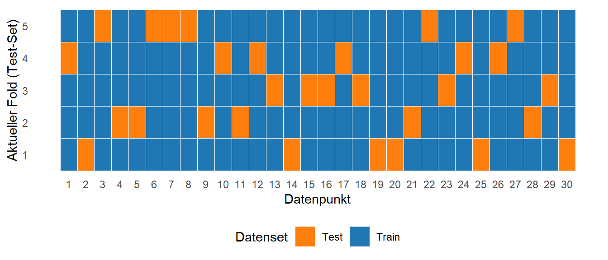
Die Datenpunkte werden werden so unterteilt, dass jeder Datenpunkt in einem fold im Testdatensatz enthalten ist.
Hinweis
Im Spezialfall dass \(K = n\) gilt, dann wird aus der Kreuzvalidierung eine sogenannte leave-one out cross-validation (LOOCV). Konzeptionell ist dieser Ansatz ähnlich den Einflussmetriken, die im Rahmen der Bewertungs des Modellsfits bei der einfachen linearen Regression eingeführt wurden.
Die Kreuzvalidierung ist daher in der Durchführung ebenfalls relativ einfach umzusetzen. Bei großen Datensätzen mit sehr komplizierten Modellen kann es lediglich zum Problem kommen, dass die Rechenzeiten zu lang werden. Dies ist im Rahmen der hier besprochenen Probleme allerdings eher nicht zu erwarten. Eine wichtige Frage, für die es leider keine einfache Antwort gibt, ist die Anzahl \(k\) der folds. Tatsächlich gibt es dazu keine genauen Regeln sondern in der Praxis werden je nach der Größe des Datensatzes meist \(5\) bzw. \(10\) folds gebildet.
Oft is es auch sinnvoll eine Kombination aus Validierung und Kreuzvalidierung zu verwenden. Dazu wird unterschieden in einen Modellanpassungschritt und eine anschließende Bewertung. Dazu wird, wie oben besprochen, zunächst ein Teil des Datensatzes zur Validierung beiseite gelegt. Anschließend wird der Datensatz entweder wieder in einen Test- und einen Trainingsdatensatz unterteilt oder es wird eine Kreuzvalidierung durchgeführt. Dieser Ansatz ist dann sinnvoll, wenn zunächst eine Umfangreiche Modellanpassung durchgeführt werden soll, d.h. es werden eine Reihe von verschiedenen Modellen verglichen. Die Entscheidung für eines der möglichen Modellen erfolgt dann entweder mittels des Test-Train-Ansatzes oder mit Hilfe der Kreuzvalidierung. D.h. es wird der Fehler für verschiedene Modelle verglichen um ein bestes Modell zu bestimmen. Anschließend wird die finale Modellleistung dann auf dem Validierungsdatensatz abgeschätzt.
6.27.3 K-fache Kreuzvalidierung in R
In R wird die Kreuzvalidierung am einfachsten mittels Hilfsfunktionen aus dem Package caret durchgeführt. Die Analyse setzt sich aus mehreren aufeinanderfolgenden Schritten zusammen. Zunächst wird mittels der Funktion trainControl() ein Objekt erstellt, welches die Kreuzvalidierung steuert. Mittels des Parameters number wird die Anzahl der folds bestimmt. Im Beispiel werden \(5\) folds verwendet, da der Datensatz nicht übermäßig groß ist.
five_fold_cv <- caret::trainControl(method = "cv", number = 5)Die Funktion trainControl() erstellt im Grunde genommen nur eine Liste mit den nötigen Information um eine $5-fache Kreuzvalidierung durchzuführen. Anschließend erfolgt die eigentlich Anpassung des Modells an die Daten, bzw. das Modell wird trainiert. Dazu wird die Funktion train() verwendet. Als erster Parameter wird die Modellformulierung an train() übergeben, wie das schon bei lm() der Fall ist. Damit auch tatsächlich ein lineares Modell verwendet wird, muss der Parameter method verwendet werden. method bestimmt welche Art von Modell an die Daten angepasst werden soll. Im vorliegenden Fall wird dementsprechend der Wert "lm" übergeben. Damit die Kreuzvalidierung durchgeführt wird, muss dass zuvor trainControl() erstellte Objekt an train() über den Parameter trControl übergeben werden.
mod_cv <- caret::train(WG_PP_W ~ SEX + AGE + MM_kg + RJT_PP_W + AST_PP_W,
data = ponce,
method = "lm",
trControl = five_fold_cv)train() führt nun die Anpassung der Modelle an die Daten durch. Die summary()-Funktion gibt nun wieder das Modell, zurück bei dem alle Daten benutzt wurden um das Modell anzupassen.
summary(mod_cv)
Call:
lm(formula = .outcome ~ ., data = dat)
Residuals:
Min 1Q Median 3Q Max
-126.884 -59.745 -4.335 33.722 285.735
Coefficients:
Estimate Std. Error t value Pr(>|t|)
(Intercept) 48.44525 149.12628 0.325 0.7469
SEXmale 124.33644 59.51229 2.089 0.0428 *
AGE -1.59072 1.98223 -0.802 0.4268
MM_kg 11.51097 4.80976 2.393 0.0212 *
RJT_PP_W 0.08184 0.11517 0.711 0.4813
AST_PP_W 0.14399 0.06882 2.092 0.0425 *
---
Signif. codes: 0 '***' 0.001 '**' 0.01 '*' 0.05 '.' 0.1 ' ' 1
Residual standard error: 82.36 on 42 degrees of freedom
Multiple R-squared: 0.8822, Adjusted R-squared: 0.8682
F-statistic: 62.89 on 5 and 42 DF, p-value: < 2.2e-16Die Ergebnisse der Kreuzvalidierung können über Teilelemente extrahiert werden. Über den Eintrag results werden die deskriptiven Werte herausgegeben.
mod_cv$results intercept RMSE Rsquared MAE RMSESD RsquaredSD MAESD
1 TRUE 98.18535 0.8634339 71.97096 27.88672 0.09883944 12.16068Mit dem Eintrag resample werden die Ergebnisse der einzelnen Durchgänge ausgegeben.
mod_cv$resample RMSE Rsquared MAE Resample
1 68.39094 0.9127275 54.76668 Fold1
2 121.21414 0.8423183 79.90121 Fold2
3 89.87863 0.9714951 76.14900 Fold3
4 133.19928 0.7080119 84.57411 Fold4
5 78.24377 0.8826169 64.46380 Fold5Anhand der Ergebnisse ist der mittlere Fehler \(98.2\) Watt mit einem Standardfehler von \(27.9\) Watt zu beobachten.
6.28 Bias-Variance Trade-off
Das grundsätzliche Problem der Modellselektion, d.h. für einen gegebenen Datensatz ein passendes Modell zu finden geht zurück auf den sogenannten Bias-Variance Trade-off. Der Bias-Variance Trade-off beschreibt das Verhältnis zwischen der Komplexität eines Modells und seiner Vorhersagegenauigkeit sowohl auf den Trainingsdaten als auch auf neuen, ungesehenen Daten. Formal folgt der Bias-Variance Trade-off aus der folgenden Gleichung.
\[ E(y_0 - \hat{f}(x_0))^2 = \text{Var}(\hat{f}{x_0}) + [\text{Bias}(\hat{f}(x_0))]^2 + \text{Var}(\epsilon) \tag{6.5}\]
Hierbei ist \(E((y_0 - \hat{f}(x_0))^2\) der zu erwartete MSE, d.h. der mittlere Fehler auf den Testdaten wenn die Funktion \(f\) wiederholt auf großen Trainingsdatensätzen abgeschätzt werden würde und jedes Mal der Fehler für den Datenpunkt \(x_0\) bestimmt worden wäre. Dieser mittlere Fehler setzt sich zusammen aus drei Komponenten. \(\text{Var}(\hat{f}{x_0})\) ist die Varianz der geschätzten \(\hat{f}\), also der unterschiedlichen Modelle, wenn unterschiedliche Testdatensätze verwendet werden würde. Jedes Mal, wenn ein Modell an Daten angepasst wird und sich die Daten verändern, dann ändert sich auch das angepasste Modell. Im Fall der einfachen linearen Regression würde es zu einer Streuung der \(\beta_0\)s und \(\beta_1\)s kommen. Diese Streuung der Modelle ist mit Varianz gemeint. Im Idealfall sollten die Modelle nicht allzu stark schwanken und diese Komponente wäre entsprechend klein. Die zweite Komponente \([\text{Bias}(\hat{f}(x_0))]^2\) beschreibt den sogenannten Bias. Der Bias entsteht dadurch, dass ein Prozess aus der realen Welt mit Hilfe eines Modell abgeschätzt werden soll, welches in den allermeisten Fällen auf Grund von vereinfachenden Annahmen bestimmt wird. Diese Unteranpassung führt ebenfalls zu einem Fehler. Die wenigsten Prozesse in der Natur werden perfekt einem linearem Modell entsprechen, dies führt zu einem systematischen Fehler der mittels des Bias bestimmt wird. Mathematisch lässt sich der Bias als die Differenz zwischen der durchschnittlichen Vorhersage \(\bar{\hat{y}}_i\) des Modells und dem wahren Wert bestimmen \(y_i\). Die letzte Komponente \(\text{Var}(\epsilon)\) stellt die unbekannte, zufällige Komponente des Modells, das Rauschen in den Daten, dar. Da alle drei Komponenten positiv sind, daraus folgt, dass die Vorhersagegenauigkeit niemals unterhalb der Rauschkomponente liegen kann.
Die Kunst besteht nun darin ein Modell zu finden, dass die beiden Komponenten Varianz und Bias gegeneinander optimiert. Üblicherweise führt eine Erhöhung der Modellkomplexität zu einer Verringerung des Bias aber zu einer Erhöhung der Varianz. Andersherum führt eine Erniedrigung der Modellkomplexität zu einer Verringerung der Varianz gepaart mit einer Erhöhung des Bias. Daher kommt es zu einem Trade-off zwischen diesen beiden Tendenzen. Dieser Trade-off muss alledings nicht immer besonders stark sein und hängt sehr stark von dem jeweiligen Prozess und den Daten ab.
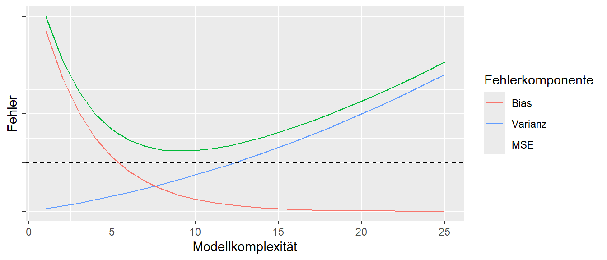
In Abbildung 6.34 ist ein hypothetischer Zusammenhang zwischen MSE, der Varianz, dem Bias und \(\sigma^2\) abgebildet. Hier ist zu erkennen, dass der resultierende Fehler MSE niemals unterhalb der Rauschgrenze liegen kann. Weiterhin setzt sich der Gesamtfehler über den angegebenen Modellkomplexitätsbereich jeweils aus verschieden starken Anteil der Varianz und dem Bias zusammen. Die genaue Ausprägung zwischen den Komponenten hängt aber stark von dem jeweiligen Problem ab. So ist es durchaus möglich, dass der Bias über den gesamten Bereich eher niedrig ist und somit der Gesamtfehler von der Varianz dominiert wird. Der Validierungsansatz bietet hier die Möglichkeit eine Abschätzung über diese Zusammenhänge zu erhalten und somit ein möglichst gutes Modell zu erhalten.
6.29 Zum Nach- und Weiterlesen
Ein extrem gutes Buch ist James u. a. (2023) das mit dem Vorwissen aus diesem Skript direkt gelesen werden kann. Das Buch gibt es als R und Python-Versionen. Ein wichtige Hintergrundartikel ist Breiman (2001) der die beiden Traditionen der Modellanpassung in der Statistik und der Informatik gegenüberstellt. Ein weiterer guter Artikel zum Problem der Idee eines optimalen Modells ist Westreich und Greenland (2013).